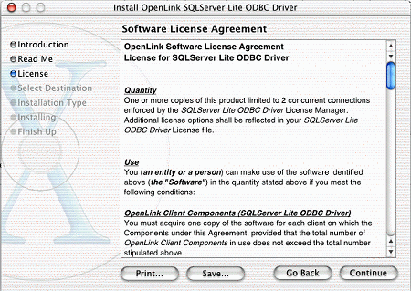
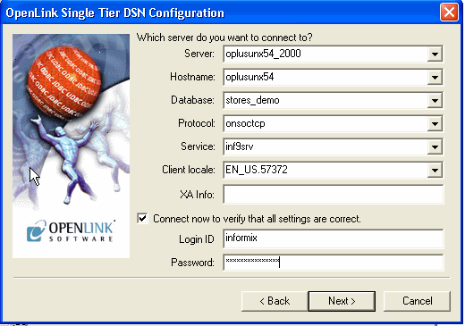

A very brief introduction to ODBC. A quick taster that might inspire users that may recall
previous experiences but never knew.
Open Database Connectivity (ODBC) is a Microsoft
standard for database access. It provides a mechanism for
desktop-based tools (word processors, spreadsheets,
report writers, Internet/Intranet tools, for example) to
transparently access data sources, such as databases.
OpenLink Software provides the drivers you need to access
your data sources from an ODBC compliant application.
A typical single-tier installation may consist of a
database server, and a client that comprises the client
networking provided by the database engine vendor and the
OpenLink Lite ODBC driver. The client components need to
be installed on every PC that is going to access the data.
The ODBC driver must be accompanied by an application,
such as Microsoft Office, which will use the driver to
access and manipulate the data.
The OpenLink drivers can be used with, among others,
the following software packages:
All standard Microsoft Office applications use the
Microsoft Query tool to access data. This package must be
installed in order for ODBC drivers to work. Microsoft
queries can be embedded in documents and spreadsheets and
easily reused and modified.
Crystal Report Writer is a stand-alone reporting tool
that enables you to write and graph reports. It employs a
"click through" user interface.
Everyone can do something different with ODBC. Here are just a few ideas:
Customize reports directly in Microsoft Excel
Create (e-)mailing lists in Microsoft Word
Write and design reports in Crystal Reports
Create custom reporting tools or data monitoring
tools (like CorVu's Executive Alert) through applications written in Visual Basic,
C++, Java, etc.
Render on-line information using data driven web content.
And much more.....
Using ODBC
This section demonstrates how ODBC works through the PC
product Microsoft Excel. This procedure may vary depending on
your version of Excel. These instructions specifically explain
Microsoft Excel 97.
Open a blank worksheet in Excel.
Select Data, then select the Get External Data option.
Select Create New Query.
|
| Create new query in MS Query |
Double-click New Data Source.
|
| Create new query in MS Query |
Make sure that you have not checked the Use Query Wizard
option.
Enter a name for the Data Source.
Set the driver type to the OpenLink Lite Driver for the database you wish to access.
Click Connect.
|
| Creating a new query using MS Query |
-
The system takes you to the Setup Dialog for the OpenLink
Lite driver you are using. The example shown is the setup
dialogue for OpenLink Lite for Oracle. For details on filling in
the setup dialogue for the driver you are using refer to the User
Guide installed with the driver.
|
| Create new query in MS Query |
-
When you are satisfied you have correctly filled in the
setup dialog click OK. The OpenLink login dialog is then
displayed.
|
| Create new query in MS Query |
-
Enter a valid username and password.
-
Click OK. The system takes you back to the Creating a Data
Source screen.
-
Click OK. This saves the data source you just created.
|
| Create new query in MS Query |
-
Double-click the data source you just created. This will
take you to the database tables.
|
| Create new query in MS Query |
-
Scroll down the table list and highlight the table
containing the data you require. Click Add.
-
Click Close to close the Add Tables dialog box. The MS
Query screen displays.
-
Scroll to the field you want. Highlight this field and
double-click.
-
Click File on the MS Query menu bar. Select the Return
Data to Microsoft Excel option.
-
Confirm the destination area. Click OK.
|
| Click on file in the MS Query menu bar |
-
The system takes you back to the OpenLink ODBC Login
screen. Supply your username and password. Click OK.
-
Your data is now in your Excel spreadsheet.
The Microsoft® Data Access SDK is the primary source of
information, instruction and utilities on using data access technologies such as ODBC. Its tools,
samples, and documentation are designed to help developers create solutions for
their data access needs. For the latest news and updates about the data access
technologies, go to the Microsoft Data Access Web site
http://www.microsoft.com/data/
The MSDASDK contains a complete programmers reference
guide to ODBC as well as other data access technologies.
An online version is available at the MSDN site
http://msdn.microsoft.com/
Direct API testing applications are also available in the MSDASDK.
ODBC
ODBC Driver
ODBC Drivers
new features
changelog
The following are new features in the Universal Data Access Suite
version 6.0:
The following are new features of the Universal Data Access
Suite version 5.2:
-
64-bit ODBC Drivers for
Windows, Linux, FreeBSD, Solaris, AIX, HP-UX, Tru64 Linux, IRIX across
Itanium, Opteron, PA-RISC, IBM Risc, and PowerPC processors
-
Addition of SSL support to the
existing data encryption functionality in our Multi-Tier Drivers
-
New ADO.NET managed providers for all supported databases
-
New ODBC.NET provider that facilitates compatability between ADO.NET
clients and third-party ODBC Drivers
-
Enhanced ODBC-JDBC Bridge Driver that provides JDBC connectivity to
any ODBC or ADO.NET client application
-
JDBC-to-ODBC Bridge Driver that provides ODBC connectivity to Java
Application
-
A compatibility layer for Microsoft InfoPath that provides
connectivity to non SQL Server and ACCESS databases via ODBC
-
JDBC 3.0-compliant Drivers for version 1.5 of the Java Virtual Machine
and SDK
System requirements and basic installation instructions for
OpenLink Single-Tier Drivers for ODBC.
There are five basic steps to install the product:
-
Satisfy all prerequisites as listed in
System Requirements
section of this chapter.
-
Download the desired OpenLink Single-Tier Driver for ODBC from
OpenLink's web site - details are in the
Downloading OpenLink Lite ODBC Drivers
section of this chapter.
-
Save the license file that was emailed to you.
-
Install OpenLink Single-Tier Driver for ODBC on
your ODBC Application Host - details are in
Installation Guide
chapter of this manual.
-
Configure the OpenLink Single-Tier Driver for ODBC - details are in
Data Source Configuration Guide
chapter of this manual.
-
To extend your trial, purchase a permanent license through the OpenLink Web site.
Details are in
Downloading OpenLink Lite ODBC DriversChapter 6 of this manual.
You must have the following software to use OpenLink Single-Tier Drivers for ODBC:
One or more ODBC compliant application(s).
A supported database server.
The client networking software provided by the
database vendor, installed on each client ODBC Application Host. This
is not necessary to use the OpenLink Single-Tier Drivers for
SQL Server, MySQL, PostgreSQL, or Virtuoso.
The OpenLink Lite ODBC Driver corresponding to the
database client networking version and/or database server,
also installed on each client ODBC Application Host.
A valid license file for each required OpenLink Driver.
You must have the following hardware to use OpenLink Single-Tier
Drivers for ODBC:
A TCP/IP network connection to the database server, with a
working connection using the client networking components, if present.
An ODBC Application Host running an operating system that is
supported by OpenLink Lite ODBC Drivers. Currently this is Mac OS X 10.1.2
or later, Windows 95/98/ME/NT/2000/XP, Linux & Unix of the major brands.
Check the OpenLink website http://www.openlinksw.com to verify availability of support for
an operating system.
The ODBC client applications you want to use may have their own hardware or
software requirements, which must also be satisfied. For example, Microsoft
Office may require a minimum of 64Mb of RAM.
Download
If you intend to use the OpenLink Lite ODBC Drivers with Microsoft Office 97,
this will require the use of an older release of the OpenLink Driver which is
compatible, but no longer available for general download. Please contact
technical support(technical.support@openlinksw.com) for details on how to
obtain these drivers.
Using your Internet browser, access the OpenLink
Software web site nearest you. The web address is:
North and South America: http://www.openlinksw.com
Europe, Africa: http://www.openlinksw.co.uk
Asia, Australia: http://www.openlinksw.com.my
From the OpenLink homepage, click the "Software
Availability and Download" link in the left-hand menu.
Click the Data Access Download button.
If this is your first download from OpenLink, or you are not
certain which product you need, please select the first button, for
Wizard-based product selection. If you are sure you know exactly what
you need, select the second button, for direct product selection.
The remainder of these instructions will focus on Wizard-based
selection. Depending on your responses, you may receive fewer or more
questions in your own visit.
Answer the three initial questions:
- a. Indicate which type of connectivity you require, if you know.
- b. Select the Operating System(s) on which your ODBC and/or JDBC
Client Application(s) will run. You may select as many as apply.
- c. Select the database which holds the data.
Indicate the data access technologies with which you have
experience or familiarity, if any.
Indicate any other data access drivers which you have
evaluated or will be evaluating for this installation.
Input your email address. If you have registered as an
OpenLink user before, input your password. If not, proceed to the
Registration Form.
Select download links from those presented. If your browser
is not set up with a default download location, you may be prompted to
choose where to save the file(s). Pay careful attention to the instructions
on this screen, as some installations may require several files, on one
or more machines.
Once the download is complete, you may exit your web browser.
Save the license file that is automatically emailed to you.
It will be needed during the install.
A run-through guide to installing the OpenLink Single-Tier Drivers for ODBC.
As of UDA release 6.0 and above, OpenLink have moved the handling of
licenses from individual products into a specific License Manager
process.
This takes the form of an executable, (`oplmgr'), from which all
OpenLink commercial products request licenses via network
connections.
OpenLink UDA Single-Tier is a single driver installed on the
client only.
For releases 6.0, the oplmgr process was
started automatically by the driver on first connection. As of
release 6.1, this behaviour has changed; in order to facilitate use
of License Manager process for administering licenses of all OpenLink
products simultaneously on the same machine, the license-manager
must be started explicitly started in advance of services that will
use it. The release 6.1 installers now check if a License Manager (oplmgr)
process is already running and if not start their own local instance.
OpenLink UDA Multi-Tier drivers comprise at least 3 components: a
generic client installed on client machines, all of which contact a
central request broker which spawns an RDBMS-specific database agent
to connect to the specific database requested. The request-broker
asks the license-manager for licenses for every connection requested.
For UDA release 6.0, the oplmgr process was
started automatically by the request-broker (oplrqb). As of release
6.1, this behaviour has changed. In order that you should only need
one license-manager per server, handling licenses for a variety of
products (particularly combinations of Multi-Tier and OpenLink
Virtuoso Universal Server), the license-manager must now be explicitly
started
before other services requiring it. The release 6.1 installers now
check if a License Manager (oplmgr) process is already running and if not
start their own local instance.
The license manager takes the following commandline options:
bash$ oplmgr --help
OpenLink License Manager
Version 1.2.2 as of Thu Feb 15 2007 (Release 6.0 cvsid 00084).
Compiled for Linux 2.4.20-46.9.legacysmp
(i686-generic-linux-glibc23-32)
Copyright (C) OpenLink Software.
Usage:
oplmgr [-shrutp] [+start] [+stop] [+reload] [+user arg] [+chroot arg]
[+pidfile arg]
+start start the license manager
+stop stop the license manager
+reload force a configuration reload
+user run as the specified user
+chroot perform a chroot to the specified directory
+pidfile pid file to use for server operation
|
We recommend that you create an /etc/init.d/ script that runs `oplmgr
+start' on boot-up.
The OpenLink License Manager will search through directories in the
OPL_LICENSE_DIR variable or failing that, the PATH environment
variable, for files matching *.lic.
OpenLink recommends you use /etc/oplmgr/ to store your licenses; each
product installation will include a copy of the oplmgr executable in
its respective 'bin' directory, such that if this is the only
OpenLink product on the system, it can be manually started and used
for processing licenses with an appropriate OPL_LICENSE_DIR value. A
generic system startup script is also being developed for Unix
systems to enable the License Manager process to be automatically
started on machine boot. If found, product installers will
automatically append this to your OPL_LICENSE_DIR variable.
The OpenLink License Manager sends and receives using the multicast
IP address 224.0.0.24 on port 60001/udp to communicate between
components and other license-managers that might be on your network.
In the event that it cannot establish this multicast communication,
it may cease allocating licenses, so in the event of license
allocation-related errors, please check your firewall configuration
permits this traffic.
Windows Installation
The OpenLink Single-Tier Driver for ODBC is distributed in a single zip
file. Unzip the contents of the zip file to a temporary
directory such as c:\temp\openlink_install.
Execute the installer program called setup.exe
The installer will unpack and
verify the contents of the installer files, and
display a 'Welcome' message as follows. Press the
'Next >' button to continue.
The next screen will display the License
Agreement for installation and use of the
OpenLink Lite Driver product. Please read this.
If you agree, then press the 'Yes' button
to continue the installation.
|
| Software License Agreement |
You will then be asked change the Destination
Folder if the default location is not desired.
Use the 'Browse' button and
proceeding pop-up to navigate to the installation
directory of your choosing. Press the 'Next>' button to continue.
The next screen allows you to choose the
components and alter the sub-components that will
be installed onto your computer.
By default all components will be installed. If
you wish to alter the list either uncheck the
check box or refine the sub-components by
selecting the group and pressing the 'Change'
which will take to you the sub-components
selection screens (listed below).
When you are satisfied that you are installing
the necessary components press the 'Next
>' button to continue the
installation.
|
| Configurable JDBC Client Classes Sub-Components |
|
| Configurable ODBC Samples Sub-Components |
If JDBC Components have been selected, then you
must choose which JDK environment to use. The
installer will then make changes to the CLASSPATH
so that the Java interpreter can find the OpenLink JDBC
Driver.
Change or accept the default name for the Program
Folder name to be used in the 'Start' menu into
which the installer will place shortcuts to
components.
The final confirmation screen will appear.
Press the '< Back' button
to make changes or press the 'Next >'
button to continue and start installing files to
your computer.
A progress indicator will follow the copying of the files.
If a license file is not located in the required directory,
you will be prompted for the location so that it may be copied into place.
You are reminded to use the ODBC Administrator
to configure a data source. Refer to the
Windows Data Source Configuration
Chapter for more information.
Finally you will be asked to restart your computer.
This is recommended to make sure that locked files are replaced, and
the environment is updated.
You have now successfully installed your copy of the
OpenLink Universal Data Access Driver Suite (Lite Edition).
The OpenLink Single-Tier Driver for ODBC is distributed in a single
windows msi file. Simply run the required installer wal5xxxx.msi or
wil5xxxx.msi for Opteron (AMD64) and Itanium (IA64) respectively, which
will display the following Welcome message:
The next screen will display the License Agreement for use with the
OpenLink Lite Driver product. Please read this. If you agree, then
select the accept checkbox and continue:
The next screen will prompt you the location of the folder containing a
valid license file for the required driver. Should the license file not be
available at the time of installation then select the check box provided to by
pass this stage and continue the installation:
Chooses the type of installation to perform, noting that typical and
complete will immediately install the default or complete components
respectively, otherwise select the custom option which also the compenents to
be installed to be chosen:
Assuming you chosen the custom installation option you will then be
promptied with the option to change the installation directory if
required:
Next you have presented with the option to choose which components
are to be installed:
A final confirmation screen is displayed for review prior to
performing the installation:
The installer status bar is then displayed indicating the progress
and status of the the installation:
If the installation is successful a final dialog with be displayed
indicating this:
Unix Installation
Linux Installation
The OpenLink Single-Tier Drivers for ODBC for Unix may be installed within an
existing Multi-Tier installation, or in a separate environment.
If the Lite Drivers are installed within an (existing/new) Multi-Tier
installation, then the Lite Drivers use the normal Admin Assistant
which is started up as part of the broker. There are no special
Admin Assistant pages just for Lite.
If the Lites are installed in their own directory, the
HTTP-based iODBC Administrator package provides a standalone
version of the Multi-Tier Admin Assistant with a shortened menu
structure containing only the items relevant to Lite.
When installing the Lite packages, the install.sh script does the
following:
-
Registers the driver to bin/odbcinst.ini
-
Creates a sample data source in bin/odbc.ini
-
If appropriate environment settings are found, e.g., INFORMIXDIR,
they are added to the bin/openlink.ini file automatically.
-
If appropriate environment settings are found, e.g., INFORMIXDIR,
lib directories are added to the LD_LIBRARY_PATH setting in openlink.sh.
Please note that your LD_LIBRARY_PATH must point to the
location of any shared libraries required by the Database Vendors
communication layer in order for the OpenLink Lite driver to load.
Once the Lite driver is installed you can proceed to create data sources.
You can either edit the configuration files by hand or use a web based interface
to configure them. Refer to the Unix Data Source
Configuration section for more information.
Sample Installation
Here is an example run of the installer:
$ ls -l
total 318
-rwxr-xr-x 1 openlink openlink 31478 Nov 15 16:59 install.sh
-rw-rw-r-- 1 openlink openlink 289089 Nov 15 16:59 sql_lt.taz
$ ./install.sh
Extracting (sql_lt.taz) ...
Adding OpenLink SQL Server Lite Driver to odbcinst.ini ...
Adding sql_lite to odbc.ini ...
Creating scripts ...
Enter the name of the user that will own the
programs [ENTER=Use Current User Settings] :
Enter the name of the group that will own the
programs [ENTER=Use Current Group Settings] :
Changing ownership ...
End of installation
$ ls -lR
.:
total 323
drwxrwxr-x 2 openlink openlink 1024 Nov 15 16:59 bin
-rwxr-xr-x 1 openlink openlink 31478 Nov 15 16:59 install.sh
drwxrwxr-x 2 openlink openlink 1024 Nov 15 16:37 lib
-rwxr-xr-x 1 openlink openlink 861 Nov 15 16:59 openlink.csh
-rwxr-xr-x 1 openlink openlink 951 Nov 15 16:59 openlink.sh
drwxrwxr-x 3 openlink openlink 1024 Nov 15 16:37 scripts
-rw-rw-r-- 1 openlink openlink 289089 Nov 15 16:59 sql_lt.taz
./bin:
total 37
-rw-r--r-- 1 openlink openlink 1413 Nov 15 16:37 freetds.conf
-rwxr-xr-x 1 openlink openlink 26800 Nov 15 16:37 inifile
-rw-rw-r-- 1 openlink openlink 335 Nov 15 16:59 odbc.ini
-rw-rw-r-- 1 openlink openlink 220 Nov 15 16:59 odbcinst.ini
-rw-rw-r-- 1 openlink openlink 5008 Nov 15 16:59 openlink.ini
./lib:
total 657
-rwxr-xr-x 1 openlink openlink 781 Nov 15 16:37 sql_st_lt.la
-rwxr-xr-x 1 openlink openlink 667268 Nov 15 16:37 sql_st_lt.so
./scripts:
total 1
drwxrwxr-x 2 openlink openlink 1024 Nov 15 16:37 SQLServer
./scripts/SQLServer:
total 1
-rw-r--r-- 1 openlink openlink 883 Nov 15 16:37 oplrvc.sql
|
Mac Installation
OS X Installation
The OpenLink Single-Tier Driver for ODBC for Mac OS X is distributed in
a single disk image (.dmg) file, which contains a Macintosh
Installer mpkg.
Double-click the mpkg to start the installation process.
This example shows images based on the OpenLink Single-Tier
SQL Server Driver Installer; slightly different options may
be presented with different Driver Installers, but the
general idea is the same.
|
| OpenLink-SQLServerLite-5.0.dmg |
You must have an Administration username and password to install
the OpenLink Single-Tier Driver for ODBC. Click on the padlock,
and enter your Mac OS X Username and Password.
The installer will display a "Welcome" message. Click
"Continue".
The next screen will display the Read-Me file, including any last-
minute updates to these documents. Please read carefully, and click
"Continue" when finished.
The next screen will display the License Agreement for the OpenLink
Single-Tier Driver for ODBC. Please read, and click "Continue".
|  |
| Software License Agreement |
You will be prompted to "Agree" to continue the
installation, or "Disagree" to abort.
|
| Agree or Disagree to Licensing |
You will be asked to select a Destination Volume. Generally, this
should be your Mac OS X boot volume. Click on the desired disk
icon, and then click "Continue".
You may now choose the Easy Install, or if you are an experienced
user, you may Customize which components are installed. OpenLink
generally recommends the Easy Install.
If you have installed OpenLink or iODBC components in the past,
click "Upgrade" to continue; otherwise, click
"Install".
You will be shown a graphical progress bar as Installation progresses,
followed by System Optimization.
You will be need to locate the license file.
When the process is complete, you will be told that the
software was successfully installed. Click "Close" and your
new database driver for ODBC is ready for use!
Use the iODBC Administrator to configure a data source. Refer to the
Mac OS X Data Source Configuration
Chapter if you need more information.
Product Licensing
Licensing
When you obtain a Data Access Driver from the OpenLink Web Site,
a license file will automatically be emailed to you. Please ensure the email
address you have provided is correct. If you obtained the Data Access Driver
from a CD, you need to apply for an evaluation license through our WEB site,
or by contacting one of our offices. The standard license will provide 30days to
evaluate the product.
The easiest way is to let the installer place the file in the correct
location. However if the license file is not present during the install,
then you will need to apply it manually. In this case, to use the license
file, simply place it in one of the following locations:
Place the license file in the default location for
your Operating System.
- For Linux and Unix - $OPENLINK/bin.
- For Windows - The lite32 directory beneath the target directory of
your choice. By default this will be C:\Program Files\OpenLink\lite32.
- For Mac OS X - /Library/Application Support/openlink/bin
- For Mac OS 9 or earlier - the Preferences folder, within the System Folder.
-
Alternatively, you may define the environment variable OPL_LICENSE_DIR to
specify the directory in which all OpenLink license files can be found.
(Does not apply to Mac OS 9 or earlier.)
-
Finally, license files may reside in any directory included in the
PATH environment variable of the host machine.
(Does not apply to Mac OS 9 or earlier.)
License errors are returned through the normal SQLError API call.
If your Lite Driver fails to register properly, then your license
may be corrupt or invalid. Please check the name and version of the Driver
from the About Tab, and contact OpenLink Software for assistance.
Note that only the first license file found for a particular
product is examined.
You may purchase a permanent license key online via the Internet.
To purchase a key follow these instructions:
Use an Internet browser to connect to one of the following web sites:
North and South America: http://www.openlinksw.com
Europe, Africa: http://www.openlinksw.co.uk
Asia, Australia: http://www.openlinksw.com.my
 |
| Online order |
Select the ORDER ONLINE menu link from the left side of the web page.
A new web pages appears listing links to different online forms for varying products.
Choose the link to the correct product.
Choose the database type you require for your license
|
| License database selection |
Choose the type of license required to meet your needs.
Follow the on screen instructions for completing the license purchase.
In the event that you are unable to use the online ordering system,
then please contact sales@openlinksw.com to obtain a
permanent license key.
Oracle Connection-Pooling gives you the ability to retain a pool of
open connections to the database within the ODBC Driver, thereby avoiding
costly connection-establishment overhead for every connection from the
client. Being implemented in the ODBC Driver means you do not have to rely
on the Driver Manager component implementing connection-pooling for you,
and have finer control over how it behaves too.
OCI separates the concept of database sessions (user logins) from
physical connections (server attachments). By pooling connections, it is
possible for an application to multiplex several sessions over fewer
physical connections. Because the number of physical connections is less
than the number of database sessions in use by the application and because
the shared pool of physical connections typically has a corresponding
back-end server pool containing an identical number of dedicated server
processes; the number of back-end server processes is also reduced by
connection pooling. Thus many more database sessions can be multiplexed.
If the number of back-end server processes may cause scaling problems on
the database, OCI connection pooling can be of benefit.
Client-side connection pooling by the driver manager may be done on
a per-process basis. For instance, on Unix each application gets its own
driver-manager instance in its process. In contrast, in a multi-threaded
OpenLink agent with connection re-use enabled, an agent connection pool
can span different client processes. Cross-client connection pooling may
be preferable to client-side connection pooling in certain application
domains and may offer better scalability. For instance, if the agent is
used by an application server or web server.
If OCI connection pooling is enabled, a separate connection pool is
created for each Oracle instance connected to. All connections specifying
the same server instance (i.e. the same TNS service name) share the same
connection pool. The connection pool is reference counted and only
destroyed when the last Lite/agent connection using it is closed
down.
Each agent connection holds a reference to an OCI connection pool
record or OCPR. The OCPR contains a handle to the OCI connection pool
associated with the Oracle instance connected to. The agent maintains a
hash table of OCPRs, keyed by instance name. Each OCPR is reference
counted. The reference count for an OCPR is incremented each time an agent
uses the connection pool to connect to the associated Oracle instance, and
decremented when the agent connection is closed. The OCPR is destroyed,
and the connection pool closed, when the last agent connection using it is
closed.
When an agent is about to establish a connection to an Oracle
instance, it searches for an OCPR for the instance. If one exists, a
connection pool for that instance already exists. The agent requests an
OCI connection from this pool and increments the reference count of the
OCPR. If one doesn't exist, the agent creates an OCI connection pool for
the instance by registering a new OCPR.
Note: different ODBC DSNs, using this driver and the same server
instance, may specify different pool settings (max pool size, min pool
size etc.) The settings of the first DSN to connect fixes the
characteristics of the pool.
The maximum number of connection pools supported by an Oracle agent
or Lite driver is 100. Each connection pool allows up to 500 connections,
depending on the value set in the environment variable OCI_CONNPOOL_MAX or
the Lite driver setup dialog. The maximum linger time is 300
seconds.
When an OCI connection pool is created, it is characterised by
several parameters:
- the minimum number of connections to be opened when the
pool is created;
- the maximum number of connections that can be opened in the
pool;
- When the maximum number of connections are open in the
pool, and all the connections are busy, if a call needs a
connection, it will wait until it gets one if connWait is
TRUE, if FALSE an error is returned.
- the incremental number of connections to be opened when all
the connections are busy and a call needs a connection.
- This increment
is used only when the total number of open connections is less than the
maximum number of connections that can be opened in that
pool.
- whether, when all
connections in the pool are found to be busy and the number of connections
has already reached the maximum, to wait for a connection or report an
error.
- how long the last
connection in the pool should linger before the pool is destroyed (this
option is available for the single-tier WIN32 drivers only)
The Oracle 10g Instant Client can be used in OpenLink single-tier and
multi-tier environments. In a three-tier configuration, an OpenLink Oracle
10g agent residing on the middle-tier can use the Instant Client to connect
to an Oracle instance on the third tier.
Instant Client allows you to run applications
without installing the standard Oracle client (SQL*Net
or Net8) or having an ORACLE_HOME. It supports two basic
connection string formats:
- //host:[port][/service name]
- e.g.
//dbase-server-5:4321/ORDERS
- an Oracle Net keyword-value pair such as
(DESCRIPTION=(ADDRESS=(PROTOCOL=tcp) (HOST=dlsun242)
(PORT=5521)) (CONNECT_DATA=(SERVICE_NAME=bjava21))) |
Naming methods that require a configuration
file (such as tnsnames.ora or sqlnet.ora) for name translation can also be
used if the environment variable TNS_ADMIN is set to point to the
directory containing the file.
Examples of accepted connection parameters settings are shown
below.
1) Using a local NET service name TNS_ADMIN must
point a directory containing to a tnsnames.ora file to allow translation
of the local NET service name to an Oracle connect descriptor.
|
| | | | Connection String: | O10G-TAF | | Login ID: | scott | | Password: | tiger | | | |
|
|
2) Using a connect URL string
|
Connection String: | //192.168.203.11:1521/O10G | | Login ID: | scott | | Password: | tiger | | | |
|
3) Using an Oracle NET connect descriptor
|
Connection String: |
(DESCRIPTION=(ADDRESS=(PROTOCOL=TCP)(HOST=192.168.203.11)(PORT=1521))(CONNECT_DATA=(SERVICE_NAME=O10G))) | | Login ID: | scott | | Password: | tiger | |
|
|
All the above forms for the 'Connection String' field can also be
appended to the Login ID using an '@' separator. The password can be
supplied separately, or appended to the Login ID string using '/' as a
separator.
4) Using a local NET service name appended to Login
ID TNS_ADMIN must point a directory containing to a
tnsnames.ora file to allow translation of the local NET service name to
an Oracle connect descriptor.
|
| | Login ID: | scott@O10G-TAF | | Password: | tiger | | | |
|
|
5) Using a connect URL string appended to
Login ID
|
Login ID: | scott/tiger@//192.168.203.11:1521/O10G | | Password: | &<blank> | | | |
|
|
6) Using an Oracle NET connect descriptor
appended to Login ID
|
Login ID: |
scott@(DESCRIPTION=(ADDRESS=(PROTOCOL=TCP)(HOST=192.168.203.11)(PORT=1521))(CONNECT_DATA=(SERVICE_NAME=O10G))) | | Password: | tiger | |
|
|
Transparent Application Failover (TAF) is a protocol within Oracle
whereby, if a connection to a database node fails, it can be re-established
against an alternative node.
Once a broken connection has failed-over, an application can
continue without any special action on its part. However, TAF does not
restore all facets of a connection. For instance, TAF does not:
- restore active transactions - any active transactions are
rolled back at the time of failure because TAF cannot preserve active
transactions after failover: the application instead receives an error
message until a ROLLBACK is submitted;
- restore session properties set using 'ALTER SESSION';
- maintain the state of server-side program variables, such as
PL/SQL package states.
If any of these situations apply to a failed connection, an
application may need to take action following failover to return the
connection fully to the desired state. In order to do this, the application
may request to be notified when failover has occurred. The OpenLink Lite
Driver for Oracle 10g and the OpenLink Generic Multi-Tier Client provide
this facility through TAF event notifications.
The Oracle 10g Lite Driver and Multi-Tier Agent also allow
configuration of the failover retry interval and the maximum number of
failover retries, in the event that failover is not successful on the first
attempt.
To use OpenLink's TAF event notification features or configure the
failover retry parameters, you must enable OpenLink's TAF support. In the
case of the Oracle 10g Lite Driver for Windows, this is done by checking the
'Enable TAF' checkbox in the driver's 'Single Tier DSN Configuration' dialog
box, accessible through the 'Configure' button in the ODBC Data Source
Administrator.
When OpenLink's TAF support is enabled, in the event that a
failover attempt fails, the Lite driver or Multi-Tier agent will
instruct Oracle to retry. By default, the maximum number of failover
attempts is 10 and the interval between retry attempts is 10 seconds.
The default values can be overridden.
If using the Oracle 10g Lite Driver for Windows, enter the new
values in the 'Max. Retries' and 'Retry Interval' text fields. For the
Oracle 10g Lite Driver for Unix or the Multi-Tier Oracle 10g agent,
override the defaults by setting the environment variables
OPL_TAF_MAX_RETRIES and OPL_TAF_RETRY_INTERVAL. The retry settings
operate independently of TAF event call-backs. When OpenLink's TAF
support is enabled, they are effective irrespective of whether an
application registers an event call-back.
OpenLink ODBC drivers notify ODBC applications that failover has
occurred using two mechanisms: event call-backs and SQLSTATEs.
An application can register a failover call-back routine by setting
the proprietary connection attribute SQL_ATTR_EVENT_CALL-BACK (1280) on an
open connection. The routine's address is supplied as the value of
SQLSetConnectAttr ?'s ValuePtr argument. The same
call-back routine can be registered for more than one connection. The
call-back routine's signature must take the form:
void (*call-back) (oplevent_t oplEvent, SQLHANDLE handle, SQLUSMALLINT
eventInfo) |
where:
-
oplEvent: is an integer indicating the type of event
which took place.
-
context: is an application-supplied ODBC
handle identifying the context the event is taking place in.
-
eventInfo: is an unsigned integer code
providing more information about the event. The values returned depend on
the type of event. 0 signifies 'no further information
available'
oplEvent is of type oplevent_t, an enumerated
type enumerating the types of events reported to event call-backs.
oplevent_t is defined as follows:
typedef enum {
OPL_EV_NONE = 0, OPL_EV_FAILOVER_SUCCESS = 16, OPL_EV_FAILOVER_ABORT = 17 }
oplevent_t; |
At the moment, only failover events are supported through the
OPL_EV_FAILOVER_xxx event class. Other types of event may be supported in
the future using this call-back mechanism. OPL_EV_FAILOVER_SUCCESS indicates
that failover was successful, OPL_EV_FAILOVER_ABORT that failover was
aborted.
context is the ODBC handle (HDBC) of the
connection for which the application wishes to receive event notifications.
This handle should be supplied to the ODBC driver when the call-back is
registered, using another Oracle-specific connection attribute,
SQL_ATTR_EVENT_CONTEXT (1281). If this attribute is not set, the call-back
receives SQL_NULL_HANDLE for the handle argument. (If
other event types are supported in the future, this attribute may accept
other types of ODBC handle, e.g. handles of type SQL_HANDLE_STMT, depending
on the scope of the event.)
eventInfo is reserved for future use. All
failover events currently return 0.
As well as an ODBC application being informed of failover through
a call-back routine, it also receives notification through SQLSTATEs.
After failover completes, the first ODBC call to return, on the affected
connection, can return one of two proprietary SQLSTATES, IM500 or
IM501:
- IM500 denotes
successful failover completion. If the ODBC call generated no other
errors, the call returns SQL_SUCCESS_WITH_INFO with SQLSTATE IM500 and
is accompanied by the informational message "Failover completed". As
usual, the SQLSTATE and diagnostic message can be retrieved using
SQLGetDiagRec ?();
- IM501 ("Failover
aborted") indicates failover was unsuccessful. A function returning this
SQLSTATE returns with return code SQL_ERROR.
If the ODBC call returning the failover SQLSTATE fails for some
reason, a diagnostic record holding the failover SQLSTATE and message is
appended to any diagnostic records already generated by the failing
call. In this case, even if failover was successful, a SQLSTATE IM500
may be accompanied by a function return code of SQL_ERROR. For instance,
if a transaction was open at the time failover took place, SQLExecute
may return SQL_ERROR with two diagnostic records, for example:
- DiagRec ? #1
Native error: 25402 SQLSTATE: HY000 Message: [OpenLink][ODBC][Oracle
Server]ORA-25402: transaction must roll back
- DiagRec ? #2 Native error: 0 SQLSTATE: IM500 Message:
[OpenLink][ODBC][Oracle Server]Failover completed.
Note: Failover notification using TAF-specific
SQLSTATEs cannot be used independently of failover call-backs. The use of
these SQLSTATEs is only triggered when an application registers a failover
call-back.
How to configure ODBC Data sources (DSNs). How to configure DSNs
for the individual OpenLink Lite Drivers.
The Microsoft ODBC 2.0, 3.0 & 3.5 Driver
Manager (depicted below) allows the creation of User,
System, and File DSNs.
A User DSN will only be available to the
user who creates the data source; a System DSN will be
available to the whole system so that any user,
including the system account, will be able to use that
data source; A File DSN is a special 'mobile' data source
that stores the data source information associated with
the ODBC Driver in a file that is sharable.
The steps for creating a DSN are as
follows:-
From the desired tab (User; System; File) press the
Add button to begin creating a new Data source.
|
| Microsoft ODBC Administrator |
Pick the
ODBC Driver to be used to create your ODBC DSN. In this
example the Driver Labeled "OpenLink Lite for DB2 (32 Bit)"
is highlighted.
|
| Microsoft ODBC Administrator |
Once you have selected the appropriate OpenLink Lite Driver, you
will be presented with the OpenLink ODBC Data Source
Configuration Wizard for the driver selected. The Wizard has
several frames, most of which require you to provide
information.
The first tab is the Data Source Tab. The following parameters are common to all databases.
|
| Data Source tab (DB2 example) |
-
Name
(Data source) The name of the ODBC DSN; this
is how you will interact with the OpenLink Lite ODBC
Driver from within ODBC-compliant applications once
your ODBC DSN has been created.
-
Desription
Additional information that further
describes the ODBC DSN that you are creating.
In the second frame of the wizard, you enter a database alias for
the underlying communications layer of the database, and a username
and password. If you select the "Connect now to verify that all
settings are correct" check-box, pressing the Next> button will
verify that DSN can connect.
") |
| Database-specific tab (DB2 example) |
The third frame contains OpenLink-specific parameters for the DSN
connection; here you can set the connection to be read-only, have it
defer the fetching of long (BLOB) data, disable interactive login, set
a row-buffer size (the number of records to be transported over the
network in a single network hop), set a file containing SQL statements
to run on login, set the dynamic cursor sensitivity level, and enable
logging to a file.
|
| OpenLink Parameters tab (DB2 example) |
The fourth frame contains more custom parameters: you can enable
changes for the MS Jet Engine, disable autocommitting, and disable
the rowset size limit. You can also set the SQL_DBMS_NAME
(required for some applications, notably Access).
") |
| ODBC Parameters tab (DB2 example) |
The fifth and final frame in the wizard shows the details of the
connection - the driver name and version and DSN configuration
parameters; it also gives you the option to test the data-source.
|
| `About' tab (DB2 example) |
-
Name
(Data source) The name of the ODBC DSN; this
is how you will interact with the OpenLink Lite ODBC
Driver from within ODBC-compliant applications once
your ODBC DSN has been created.
-
Desription
Additional information that further
describes the ODBC DSN that you are creating.
-
MaxRows Override
Allows you to define a limit on
the maximum number of rows to returned from a query.
The default value of 0 means no limit.
-
Initial SQL
Lets you specify a file containing
SQL statements that will be run against the database
upon connection, automatically.
-
Enable Microsoft Jet Engine Options
Extra support or altered functionality for better compatibility with
Microsoft Jet using applications such as Microsoft Access.
-
Disable AutoCommit
Change the default commit behaviour of the OpenLink Lite Driver. The default
mode is AutoCommit mode (box unchecked).
-
Disable Rowset Size Limit
Disable the limitation enforced by the cursor library. The limitation is
enforced by default to prevent the Driver claiming
all available memory in the event that a resultset is
generated from an erroneous query is very large. The
limit is normally never reached.
-
High Cursor Sensitivity
Enables or disables the row version cache used with dynamic cursors.
When dynamic cursor sensitivity is set high, the Cursor Library calculates
checksums for each row in the current rowset and compares these with the
checksums (if any) already stored in the row version cache for the same rows
when fetched previously. If the checksums differ for a row, the row has been
updated since it was last fetched and the row status flag is set to
SQL_ROW_UPDATED. The row version cache is then updated with the latest
checksums for the rowset.
From the user's point of view, the only visible difference between the two
sensitivity settings is that a row status flag can never be set to
SQL_ROW_UPDATED when the cursor sensitivity is low. (The row status is
instead displayed as SQL_ROW_SUCCESS.) In all other respects, performance
aside, the two settings are the same - deleted rows don't appear in the
rowset, updates to the row since the row was last fetched are reflected in
the row data, and inserted rows appear in the rowset if their keys fall
within the span of the rowset.
If your application does not need to detect the row status SQL_ROW_UPDATED,
you should leave the 'High Cursor Sensitivity' checkbox unchecked, as
performance is improved. The calculation and comparison of checksums for
each row fetched carries an overhead.
If this option is enabled, the table oplrvc must have been created
beforehand using the appropriate script for the target database.
-
Row Buffer Size
This attribute specifies the
number of records to be transported over the network
in a single network hop. Values can range from 1 to
99.
-
Default UserID
This attribute specifies the default username to be used when attempting to make a
connection. You may still override this at run time.
-
Hide Login Dialog
Suppress the ODBC "Username" and "Password" login dialog box when
interacting with your ODBC DSN from within an ODBC
compliant application.
-
Read Only connection
Specify whether the connection is to be "Read-only". Make sure
the checkbox is unchecked to request a "Read/Write"
connection.
|
| DB2 Options tab |
|
| ODBC Parameters tab |
 |
| Datasource tab |
|  |
| Informix 9 - Connect tab |
Enter details of the Informix server.
-
Server
The name of the Informix server that you
want to communicate with.
-
Hostname
The network hostname of the machine
hosting the Informix server.
-
Database
The name of the database on the server
that you want to connect to.
-
Protocol
The informix network protocol identifier.
-
Service
The service name as configured in the
winnt\system32\drivers\etc\services or windows\services
file
-
Client Locale
Define the client locale. This takes the form:
[language_territory.]codeset[@modifier] |
For example:
57371
en_us.57372
en_us.utf8@dict |
An Informix 9 Lite driver should use UTF-8 as the codeset.
The language and territory should not matter; so it should be possible, for
example, to use French (fr_fr) or American English (en_us).
For Informix clients on Windows, the client locale is typically set through
SetNet32. Rather than rely on the SetNet32 settings, our Lite driver
instead sets the client locale at runtime.
It is possible to use a codeset number (Eg. 57372) rather than a codeset name (UTF8) to
specify UTF-8 as the codeset. Either form can be used. The registry file
included in an Informix client installation lists the supported code sets and
the correspondence between codeset names and numbers.
The optional modifier has a maximum of four alphanumeric characters.
This specification modifies the cultural-convention settings that the language
and territory settings imply. The modifier usually indicates a special type of
localized order that the locale supports. For example, you can set @modifier to
specify dictionary or telephone book collation order.
-
Username & Password
If you enter the username and password here, and check the "Connect now"
checkbox, proceeding to `Next>' will make a test connection to verify the above
parameters.
-
XA Info
In the case of
an OpenLink driver, this parameter is an ODBC Datasource Name (DSN):
see the XA documentation for
more about this.
Enter options for the Informix connection:
-
Space Pad Character colums
If set, then colums are padded to full width by using
the space character.
-
Multiplex Sessions
determine the connection parallelization mode.
-
Force Online Database
If set, then the database will always appear as online.
 |
| OpenLink Parameters tab |
Enter details here about the Ingres server.
-
Connection
Takes the form <vnode>::<dbname>
where vnode is the name of the virtual node
configured either in the Ingres V(isual)DBA or Ingres
Netutil utility, and dbname is the name of the
database at the vnode destination that you want to
connect to.
-
Roles & Effective Users
Ingres allows you to connect as a particular role or
effective user. From iidbdb you could execute:
create role myrole with password=myrolepwd;\g
|
to create a role; it is then this role
and password you would enter in the above dialog.
 |
| OpenLink Parameters tab |
 |
| ODBC Parameters tab |
 |
| Datasource tab |
Enter details here for the SQL*NET.
-
Connection String
This needs to be a valid SQL*Net
connect string. Typically this will only need to be
the TNS Name as defined using the Oracle Easy Net
configuration utility.
-
SQL*net Interface
This lets you select the SQL*Net
DLL to be used. AutoScan is the default and best
option. If this does not work then try and pick the
option that seems to best suite your version of
Oracle. If you are using Oracle 8i then use 'oci.dll'.
-
XA Info
In the case of
an OpenLink driver, this parameter is an ODBC Datasource Name (DSN):
see the XA documentation for
more about this.
contains the options:
-
Custom Catalog Views
You must run the ODBCCATx.SQL
script against your database as user internal before
this option can be checked! Enabling this gives best
functionality and support especially for ODBC catalog
calls.
These scripts exist for each version of Oracle
supported, the files "odbccat6.sql", "odbccat7.sql",
and "odbccat8.sql" representing Oracle
versions 6 up to version 8 respectively. These
scripts are to be applied to your Oracle instance to
enable efficient and extended functionality between
OpenLink and Oracle when handling ODBC, JDBC, UDBC,
and OLE-DB catalog calls such as SQLForeignKeys() and
SQLPrimaryKeys() functions. These functions have
significant impact on the performance of your
OpenLink clients.
To run these scripts you need to start the Oracle
server manager (svrmgr or sqldba if you do this from
the command line). Connect as internal and run the
script by locating the relevant script file as you
would any other Oracle SQL script file.
-
Count Stored Procedure Parameters in SQLProcedures
Enable 'strict' parameter use.
 |
| Oracle tab |
When OpenLink's TAF support is enabled, in the event that a
failover attempt fails, the Lite driver or Multi-Tier agent will
instruct Oracle to retry. By default, the maximum number of failover
attempts is 10 and the interval between retry attempts is 10 seconds.
The default values can be overridden.
See the
Oracle RAC/TAF documentation
for more.
 |
| ODBC Parameters tab |
|
| Finishing and testing tab |
Enter details here to specify Progress connection information.
-
Database name
Name of the Progress database.
-
Host name
Domain name or IP number of the machine hosting the database.
-
Port
TCP port on which the database is listening.
 |
| ODBC Parameters tab |
|
| Finishing and testing tab |
Enter details here to specify Progress connection information.
-
Session Options
Any Progress server startup options are accepted in this box.
Note: These options are required for the Small Client driver only.
Typical options could be:
-SV -S <service> -H <hostname> -N TCP |
-
Database Options
Any valid Progress Database connection options. See your Progress
manual for a complete list of accepted options.
When using the Small Client driver, enter the following minimum
database information in this box:
When using the Large Client driver, enter the following minimum
database information in this box:
-db <dbname> -S <service> -H <hostname> -N <protocol> |
Note: The <service> entry must meet the following requirements:
- It must be listed in the Progress database server's /etc/services file,
with a corresponding TCP port to which to bind.
- It must be listed with the same name as above in your Windows
\system32\drivers\etc\services file, matching the TCP port used for the database
server's Progress service name.
To connect to multiple databases and make use of
array fields see the
tableview guide
-
Table View
The full path and file name of the .dat
'tableview' file created after running the setup.p applications. See
tableview guide
for more information.
|
| Additional Progress-specific parameters tab |
-
Field size
Enter the minimum and maximum sizes for a char(N) field here
-
Expression Precision & Scale
This is the default precision and scale for anonymous numeric
fields in the resultset.
-
Use space for SQL_IDENTIFIER_QUOTE_CHAR
Check this to enable a workaround for Business Objects' handling of
the space-character in quoting an identifier.
 |
| OpenLink Parameters tab |
 |
| ODBC Parameters tab |
Utility and functionality for the Progress Driver that enables the user to connect to multiple databases
and use array fields. This is only applicable to drivers not built against Progress SQL92 Libraries.
After installing a Progress Lite Driver you should
find the following files in the lite32 directory:
setup.p
setup.i
oplrvc1.p
oplrvc2.p
|
setup.p is a Progress script program. When the program runs it will ask you
what databases you wish to connect to and generate a
catalog file of all the databases and tables within into
a tableview file (.dat), and will create
its associated parameter file (.pf).
Doing this allows you to
connect to multiple databases, allows you to see all the
tables in all databases from SQLTables, and allows you to
use arrays fields through ODBC.
Prior to running this
program you must ensure that all database servers for the
databases you wish to include are running since the
program will need to connect to them.
Make sure that your $DLC
environment variable is set correctly to point to your
DLC directory.
e.g. DLC=/dbs/progress/dlc
export DLC
Go to the openlink/lite32 directory, and type the following:
$DLC/bin/pro -p setup.p
| Note: |
This may vary between versions. In Progress 6, pro is
in the dlc directory not dlc/bin.
|
|
You may also need to set a PROPATH environment variable to include the current
working directory and the directory containing the setup.p utility files.
You will get the following screens:
. @@@@@@ @@@@@@ @@@@@@@ @@@@@ @@@@@@ @@@@@@@ @@@@@ @@@@@
@ @ @ @ @ @ @ @ @ @ @ @ @ @ @
@ @ @ @ @ @ @ @ @ @ @ @
@@@@@@ @@@@@@ @ @ @ @@@@ @@@@@@ @@@@@ @@@@@ @@@@@
@ @ @ @ @ @ @ @ @ @ @ @
@ @ @ @ @ @ @ @ @ @ @ @ @ @
@ @ @ @@@@@@@ @@@@@ @ @ @@@@@@@ @@@@@ @@@@@
Progress Software Corporation
14 Oak Park
Bedford, Massachusetts 01730
617-280-4000
PROGRESS is a registered trademark of Progress Software Corporation
Copyright 1984,1985,1986,1987,1988,1989,1990,1991,1992,1993,1994,1995
by Progress Software Corporation
All Rights Reserved
PROGRESS Version 7.3C as of Thu Jun 29 15:05:14 EDT 1995
|
Followed by:
+-----------------------------------------------------+
| Enter a number of databases you want to connect to. |
| The first database is your master database. |
+-----------------------------------------------------+
+-----------------------------------------------------------------------------+
| # DbName Connect String OK|
|-- ------------------------------ ---------------------------------------- --|
| 1 ______________________________ ________________________________________ __|
| |
| |
| |
| |
| |
| |
| |
| |
| |
+-----------------------------------------------------------------------------+
Enter data or press PF4 to end.
|
At this point you will need to give the program information to contact the
databases you want to include here. As shown below.
+-----------------------------------------------------+
| Enter a number of databases you want to connect to. |
| The first database is your master database. |
+-----------------------------------------------------+
+-----------------------------------------------------------------------------+
| # DbName Connect String OK|
|-- ------------------------------ ---------------------------------------- --|
| 1 /users/progress/dbs/pro7test__ -N tcp -H 194.152.95.26 -S pro7test_____ __|
| |
| |
| |
| |
| |
| |
| |
| |
| |
+-----------------------------------------------------------------------------+
Enter data or press PF4 to end.
|
After entering the line of information press return. There will be a little pause
while the program checks that the database server is running and can be contacted. When this is verified OK
will appear at the end of the line.
+-----------------------------------------------------+
| Enter a number of databases you want to connect to. |
| The first database is your master database. |
+-----------------------------------------------------+
+-----------------------------------------------------------------------------+
| # DbName Connect String OK|
|-- ------------------------------ ---------------------------------------- --|
| 1 /users/progress/dbs/pro7test__ -N tcp -H 194.152.95.26 -S pro7test_____ OK|
| |
| |
| |
| |
| |
| |
| |
| |
| |
+-----------------------------------------------------------------------------+
Enter data or press PF4 to end.
|
The cursor will move to the next line. Repeat the above procedure for each
database. Press PF4 when finished. You will then need to
supply the name for the .dat and .pf files to be created.
+-----------------------------------------------------+
| Enter a number of databases you want to connect to. |
| The first database is your master database. |
+-----------------------------------------------------+
+-----------------------------------------------------------------------------+
| # DbName Connect String OK|
|-- ------------------------------ ---------------------------------------- --|
| 1 /users/progress/dbs/pro7test__ -N tcp -H 194.152.95.26 -S pro7test_____ OK|
| 2 ______________________________ ________________________________________ __|
| |
| |
| |
| |
| |
| |
| |
| |
+-----------------------------------------------------------------------------+
Basename for .pf and .dat files_____________________
Enter data or press PF4 to end.
|
After a brief period the program will have finished:
+-----------------------------------------------------+
| Enter a number of databases you want to connect to. |
| The first database is your master database. |
+-----------------------------------------------------+
+-----------------------------------------------------------------------------+
| # DbName Connect String OK|
|-- ------------------------------ ---------------------------------------- --|
| 1 /users/progress/dbs/pro7test__ -N tcp -H 194.152.95.26 -S pro7test_____ OK|
| 2 ______________________________ ________________________________________ __|
| |
| |
| |
| |
| |
| |
| |
| |
+-----------------------------------------------------------------------------+
Creating .pf file to use
Creating .dat file with table information
Procedure Complete. Press space bar to continue.
|
Now you have to integrate these files into your system.
In the Lite Driver setup dialog box you will find an option box called Table View.
In this field place:
<full path and file name to .dat file>
Now you can use in the Connection Options, only:
-pf <full path and file name to .pf file>
To resolve you connection parameters since they are include in this file.
Enter details here for the SQLServer (TDS) options:
-
Server Type
Here you specify the version of SQL Server to which
you're connecting - 6, 7 or 2000.
-
Server Name
Enter the name of the SQL Server instance (server name)
to which you want to connect, here.
-
Port Number
This is the port on which SQL Server is listening - by default, 1433.
-
LoginID
The database user name to use when no alternative name is passed in
the DSN. Authentication as a windows domain user can also be acheived by specifiying
a value of 'DOMAINUSER\username' in which case the driver will dynamically assume
that windows-, as opposed to database-, authentication should be performed
against this user.
-
Password
This field is enabled if the above select field is checked. Password
is used to make a connection to the datasource to obtain the choices for
subsequent fields.
-
Database
The name of the SQLServer (TDS) database that
is to be accessed by the data source.
-
Character Set
The name of an installed character set
on the server. By default is the setting on the Microsoft SQL
Server.
-
Language
The name of a Microsoft SQL Server supported
national language. The default language is English.
-
Packet Size
A value that determines the number of bytes per network packet transferred
from the database server to the client. The correct setting of this
attribute can improve performance.
When set to 0, the initial default, the driver uses the default packet size
as specified in the Sybase server configuration.
When set to -1, the driver computes the maximum allowable packet size on the
first connect to the data source and saves the value in the system
information.
When set to x, an integer from 1 to 10, which indicates a multiple of 512
bytes (for example, Packet Size=6 means to set the packet size to 6 * 512 =
3072 bytes).
For you to take advantage of this connection attribute, you must configure
the System 10 server for a maximum network packet size greater than or equal
to the value you specified for Packet Size. For example,
sp_configure "maximum network packet size", 5120
reconfigure
Restart Sybase Server
|
Note that the ODBC specification specifies a connect option,
SQL_PACKET_SIZE, that offers this same functionality. To avoid conflicts
with applications that may set both the connection string attribute and the
ODBC connect option, they have been defined as mutually exclusive. If
PacketSize is specified, you will receive a message Driver Not Capable if
you attempt to call SQL_PACKET_SIZE. If you do not set Packet Size, then
application calls to SQL_PACKET_SIZE are accepted by the driver.
-
Prepared Method
A value that determines whether stored procedures are created on the server
for every call to SQLPrepare. When set to Full (2), stored procedures are
created for every call to SQLPrepare, which can decrease performance when
processing static statements. When set to Partial(1), the initial default,
the driver creates stored procedures only if the statement contains
parameters. Otherwise, the statement is cached and executed directly at
SQLExecute time. When set to None (0), the driver never creates stored
procedures. Note: This setting is ignored when connected to Sybase 4.9.2
servers.
 |
| OpenLink Parameters tab |
 |
| ODBC Parameters tab |
Enter details here for the JDBC Driver to connect with:
-
JDBC Driver
The name of the JDBC Driver to be used for the connection
-
URL String
The JDBC connectstring URL for the JDBC Driver
-
Login ID & Password
Enter the username and password to use for the connection here.
If you check the `Connect now' box, pressing `Next>' will make a test
connection to verify the above parameters.
-
Drop Catalog name from DatabaseMetaData calls
Enable this option to have the catalog name not appear for tables, views and procedures when requesting database meta-data.
-
Drop Schema name from DatabaseMetaData calls
Enable this option to have the schema-name not appear for tables, views and procedures when requesting database meta-data.
-
Return an empty resultset for SQLStatistics
Check this box to have SQLStatistics() return an empty resultset -
use this if the underlying database does not support retrieving statistics about
a table (e.g. what indexes there are on it).
-
Disable support of quoted identifier
If it is set, the call SQLGetInfo for 'SQL_IDENTIFIER_QUOTE_CHAR'
will return the space (" "). It can be used if DBMS doesn't support quoted SQL like
select * from "account"
-
Disable support of search pattern escape
If it is set, the call SQLGetInfo for 'SQL_LIKE_ESCAPE_CLAUSE'
will return the space (" "). It can be used if DBMS doesn't support SQL escape patterns
 |
| OpenLink Parameters tab |
|
| Additional Compatibility Parameters tab |
-
Hostname
The hostname on which the MySQL database server to be connected to is running on.
-
Port
The port number on which the MySQL database server is running on the host machine. Defaults to 3306 if not specified.
-
Database
The database name to which the connection is to be made.
 |
| OpenLink Parameters tab |
 |
| ODBC Parameters tab |
-
Hostname
The hostname on which the PostgreSQL database server to be connected to is running on.
-
Port
The port number on which the PostgreSQL database server is running on the host machine. Defaults to 3306 if not specified.
-
Database
The database name to which the connection is to be made.
-
No Transactions
Disable ODBC transaction management. All transactions will be automatically committed. This prevents palloc() failures with out-of-memory errors when doing really big transactions such as Exporting 10000 records from MS/Access.
 |
| OpenLink Parameters tab |
 |
| ODBC Parameters tab |
You may sometimes be required to build a
complete ODBC Connection String to access an ODBC
Datasource.
A connection string has the following syntax:
connection-string ::= empty-string[;] | attribute[;] | attribute; connection-string
empty-string ::=
attribute ::= attribute-keyword=attribute-value | DRIVER=[{]attribute-value[}]
attribute-keyword ::= DSN | UID | PWD | driver-defined-attribute-keyword
attribute-value ::= character-string
driver-defined-attribute-keyword ::= identifier
|
where character-string has zero or more characters;
identifier has one or more characters; attribute-keyword
is not case-sensitive; attribute-value may be case-sensitive;
and the value of the DSN keyword does not consist solely
of blanks.
The following list describes valid
attributes and their values common to all databases:
-
DSN
Datasource name.
-
UID
Username.
-
PWD
Password.
-
DRIVER
The name of the ODBC Driver to be used. This will be the name displayed in the ODBC
Administrator or returned by the SQLDrivers function.
-
ReadOnly
Yes/No - make the session readonly.
-
FetchBufferSize or FBS
2 digit integer value to determine
the number of rows to buffer in each fetch.
-
NoLoginBox or NLB
Yes/No - suppress the authentication
dialog box that will appear if either username or password have been
omitted.
-
MaxRows
integer value to limit the number of returned rows.
-
NoAutoCommit
Yes/No - define the default behaviour of the driver to adopt.
-
Jet
Yes/No - enable Microsoft Jet Engine compatibility features.
-
NoRowSetSizeLimit
Yes/No
-
SVAST
Yes/No - System views as system
tables.
-
IntialSQL
Points to a file containing a list of initial SQL statements to be executed against the Database on connnect.
There is nothing specific to DB2. See above section for common parameters.
The following list describes valid attributes and their values that
are specific to Informix:
-
Protocol
Informix protocol
identifier.
-
Service
Service name as in the etc\services
file.
-
Host
hostname of the machine hosting the
Informix server.
-
InfServer
Name of the Informix
server.
-
Database
name of the database on the Informix
server.
-
MultiSess
Yes/No - Multiplex
Session.
The following list describes valid attributes and their values that
are specific to Ingres and OpenIngres:
The following list describes valid attributes and their values that
are specific to Oracle:
The following list describes valid attributes and their values that
are specific to Progress:
-
Options
Valid Progress connection options.
-
TableView
full path and filename to the tableview file.
See tableview guide
for more information.
-
ServerOptions
Valid Progress server
options.
-
SQLNETInterface
Interface DLL or AutoScan for Driver
self determination.
The following list describes valid attributes and their values that
are specific to Microsoft SQLServer:
-
TDSServer
The IP address or alias name for the server running SQL Server.
-
TDSPort
The TCP port number the SQLServer instance is running on
-
TDSVer
The TDS Protocol version for the type of SQLServer instance being used.
-
TDSDBase
The name of the SQLServer Database
Once you have configured an ODBC Data Source you can
test it using the Test Connection button on the DataSources tab.
For a more thorough test, you can
use the sample applications provided in the
OpenLink Lite Driver installer (unless you chose not to
install them). You will have short-cuts to the sample
applications in the 'Start' Menu.
The sample application 'CPP Demo 32 Bit' is a good
application to use to test an ODBC Data Source. It is
simple, allows you to execute simple SQL Queries and
includes source code.
When the application has been started, select 'Open
Connection' from the Environment menu item.
Select the data source you recently created and now
want to test. Unless you configured the data source to
hide the login dialog prompt you will be presented with
it. You need to enter a valid username and password to
authenticate the connection.
Once the connection has been established you should
observe that the title bar of the application now
includes the name of the data source that you connected to.
Use the SQL/Execute SQL menu item to query the
database and validate basic communication between the
Driver and the Database.
Enter a valid SQL Statement. You will need to know a
valid table name within the database to be able to
retrieve information from it. To simply return all
available data in a particular table of your choice
simply change the name 'authors' (show below) to the name
of the table you wish to query. Press OK to execute the
query.
If the query executes successfully you will see a
table of the data returned by the query.
Unix Data Source
Unix
Datasource
The OpenLink ODBC Lite for UNIX is the family name of a suite of Single
Tier ODBC Drivers supporting a wide range of leading relational database
engines. These drivers do not require the installation of any additional
software on the server machine hosting the database engine. This is due
to the fact that Single Tier driver implementations depend on the
database(s) that you are connecting with to provide database
connectivity and network services (this software typically installed at
database engine installation time).
Before a Lite Driver can be used, a data source must be defined either manually, or
by using the HTTP based iODBC Administrator.
The OpenLink Lite Drivers for Unix can be installed within a previously installed
Multi-Tier installation or completely standalone. If installed within a
Multi-Tier installation the Lite Driver can share the Admin Assistant installed
with the Multi-Tier for configuring data source. In the absence of a Multi-tier
installation, an HTTP based iODBC Administrator is installed and used to configure the
drivers. The download wizard for Unix Lite will always offer install.sh and the
HTTP based iODBC Administrator,
and then show the available Lite Drivers for the required operating system.
A Lite driver package contains only the driver and installation files,
e.g. the sql_lt.taz file contains:
bin/openlink.ini Contains the Environment settings
bin/inifile
bin/freetds.conf Part of the FreeTDS library
lib/sql_st_lt.la
lib/sql_st_lt.so The actual lite driver
scripts/SQLServer/oplrvc.sql
|
During the installation of the OpenLink Lite Drivers for Unix, the install.sh
script will generate a file called bin/iodbc-admin-httpd.sh. This is a shell script
used to start and stop the HTTP based iODBC Administrator.
The usage is as follows:
$ iodbc-admin-httpd.sh start # Starts the HTTP based iODBC Administrator
$ iodbc-admin-httpd.sh stop # Tries to stop the HTTP based iODBC Administrator
$ iodbc-admin-httpd.sh status # Shows if the program is running
|
-
Start up the HTTP based iODBC Administrator, as explained above.
Open up your Internet Browser and then enter the following
URL: http://localhost:8000/ (note the OpenLink HTTP based iODBC Administrator listens at
port 8000 by default, this value is set at installation time).
Expand the menu by clicking on the "Client Components
Administration", then "Data Source Name Configuration",
and "Edit Data Sources by Wizard".
Click on the "Edit ODBC Data Sources" hyperlink, this takes
you into the actual ODBC Data Source configuration wizard.
Click the "Add" button to commence the process of creating
a new Lite ODBC DSN, the wizard presents you with a list of Lite Drivers
installed on your system. Select the driver required. In this example
the OpenLink SQL Server Lite Driver is highlighted. Then click on the "Next" button.
Enter values into the "Name" and "Description" fields as follows:
Name
Enter a value that uniquely identifies the DSN being created.
This example uses the name "sqlserver_dsn" to indicate that this DSN will be
connecting to SQL Server database.
Description
Enter a value that provides additional information that helps
in describing the purpose of the DSN that you are creating.
Once completed click on the "Next" button.
Enter values into the "Database Name", "Server",
and "Username" fields as follows:
Database Name
Enter the name of the database you which to make a connection to. Note in the case of the ODBC-JDBC Bridge this would be the name of the JDBC Driver to be used.
Connection Options
Enter database server connection values for the database
that your are connecting to.
The label shown named Server will change according to the
ServerType selected on the previous wizard page to provide a more suitable
cue. The table below shows the alternative descriptions and there significance.
| Server Type | Label Name | Description | DB2 | Server/Adapter | Name of DB2 Instance. | Informix | Server | Informix Connect connection parameters. | Ingres & OpenIngres | Ingres Net (vnode) | Name of Ingres vnode to connect to. | Oracle | NET 8 Service Name | Name of Oracle 8 service as defined with TNS Listener or Oracle 8 SID. | Progress | DB Connection Options | Progress connection options. | SQLServer | Server | SQLServer server name. | ODBC-JDBC Bridge | URL String | JDBC Connect String |
|
| OpenLink Lite for Unix Server Types |
Username
Enter a valid username for the database that you are connecting
to, you can leave this blank and be prompted for values at actual
database connect time.
Click on the "Next" button.
-
Select the Environment section name used to identify the group of
environment parameters for the Database. In most cases this does not need
to be changed. For advanced use, multiple environments may be defined.
The pick list of existing Environment groups contains only the currently
defined Environments that are associated with the same Driver currently
being configured. Choose from an existing environment, or create a new
environment by entering a name.
Enter environment values into the text area as parameter=value with
each parameter on a separate line.
Once completed click on the "Next" button.
These environment varable values are database specific and are described in detail
later in this section. The list below will allow you to quickly jump to the
relevant section:
-
Enter values into the following fields:
Read-only connection
Check this box if you require a read only session.
Disable Interactive Login
Check this box if you do not want to be presented with a login dialog window.
Defer fetching of long data
Check this box to defer the fetching of long data.
See the Release Notes section for more details.
Once completed click on the "Next" button.
Enter values into the "Row Buffer Size", and "Jet Fix" fields as follows:
Row Buffer Size
Enter a value that represents the number of records that you would like
your ODBC driver to retrieve during each network hop. A network hop represents
the number of times your OpenLink ODBC send a message across the network to
retrieve records from your remote database server. The feature can be used to
improve ODBC record retrieval performance.
Jet Fix
Check this box to overcome an old Jet Engine problem of large
numeric types mapped to TEXT (drivers will return SQLServer as
database type)
Once completed click on the "Finish" button to save the DSN.
Now that the DSN has been saved, it can be verified.
Select the DSN to test and hit the "Test" button .
Click the "Test" button to actually commence the
ODBC DSN Test process, you will be presented with dialogs that indicate
success or failure at the end of this process.
Click on the "exit" button to exit the ODBC DSN
configuration wizard
The OpenLink HTTP based iODBC Administrator also allows the more experienced
OpenLink ODBC user to manage ODBC DSNs via a forms based interface.
Like the wizard based approach, this is done entirely from within
your browser. In the sections that follow, a step by guide and illustrative
screen shots are used to demonstrate the process of creating the same
Lite ODBC DSN created in the prior section using the Wizard approach.
-
Start up the HTTP based iODBC Administrator, as explained earlier.
Open up your Internet Browser and then enter the following
URL: http://localhost:8000/ (note the OpenLink HTTP based iODBC Administrator listens at
port 8000 by default, this value is set at installation time).
Expand the menu by clicking on the "Client Components
Administration", then "Data Source Name Configuration",
and "Edit Data Sources by Form".
-
Click on the "Edit ODBC Data Sources" hyperlink to commence the
process of creating a new ODBC DSN.
On the right side of the HTTP based iODBC Administrator pane is your start
page for configuring Lite DSNs using the Forms approach. This page presents
to you a list of currently configured ODBC DSNs on the machine.
Click the "Add" hyperlink in the Action Column
You are now presented with a table listing that comprises
ODBC Drivers installed on your system, move on to the row that identifies
the ODBC Driver that you will be creating your DSN for, then click on the
"New" hyperlink.
-
Enter values into the fields presented on the ODBC DSN form as follows:
Name
Enter a value that uniquely identifies the DSN being created.
This example uses the name "sqlserver2" to indicate that this DSN will be
connecting to SQL Server database.
Description
Enter a value that provides additional information that helps
in describing the purpose of the DSN that you are creating.
Username
Enter a valid username for the database that you are connecting
to, you can leave this blank and be prompted for values at actual
database connect time.
Database Name
Enter the name of an actual SQL Server database.
Read-only connection
Check this box if you require a read only session.
No Login Dialog Box
Check this box if you do not want to be presented with a login dialog window.
Defer fetching of long data
Check this box to defer the fetching of long data.
See the Release Notes section for more details.
Jet Fix
Check this box to overcome an old Jet Engine problem of large
numeric types mapped to TEXT (drivers will return SQLServer as
database type)
Server
Enter database server connection values for the database
that your are connecting to.
Row Buffer Size
Enter a value that represents the number of records that you would like
your ODBC driver to retrieve during each network hop. A network hop represents
the number of times your OpenLink ODBC send a message across the network to
retrieve records from your remote database server. The feature can be used to
improve ODBC record retrieval performance.
Environment
Select the Environment section name used to identify the group of
environment parameters for the Database. In most cases this does not need
to be changed. For advanced use, multiple environments may be defined.
The pick list of existing Environment groups contains only the currently
defined Environments that are associated with the same Driver currently
being configured. Choose from an existing environment, or create a new
environment by entering a name.
Enter environment values into the text area as parameter=value with
each parameter on a separate line.
These environment varable values are database specific and are described in detail
later in this section. The list below will allow you to quickly jump to the
relevant section:
-
Click on the "Add" button at the foot of the page to complete the
creation of your new ODBC DSN.
-
The DSN may then be tested, or you can return to the DSN list.
-
Edit the file bin/openlink.ini, and make sure the environment section
for the driver contains the right entries. In case of the SQLServer Lite
Driver this section looks like this:
[Environment SQLServer 2000]
FREETDSCONF = /home/openlink/bin/freetds.conf
DSQUERY = SQLSERVER ; Load this section from freetds.conf
TDSHOST = host.domain ; Point this to your SQLServer machine
TDSPORT = 1433
TDSVER = 7.0
SQLSERVER_CATALOG = Y
CURSOR_SENSITIVITY = LOW ; Set to HIGH after loading oplrvc.sql
|
These environment varable values are database specific and are described in detail
later in this section. The list below will allow you to quickly jump to the
relevant section:
In the case of SQLServer Driver, you only need to set the TDSHOST variable correctly.
The FREETDSCONF variable is automatically set by the installer. Under
normal conditions you do not have to modify the freetds.conf file nor
the DSQUERY variable.
-
Edit the file bin/odbc.ini and add the correct settings to the sample
DSN that is created:
[sql_lite]
Driver = /home/openlink/lib/sql_st_lt.so
Description = Sample SQLServer 2000 Lite Connection
ServerType = SQLServer 2000
Username =
Password =
Database =
ReadOnly = no
FetchBufferSize = 60
|
In the case of SQLServer Driver, you only need to modify Username, Password and Database.
All modifications except the Driver keyword will be saved when
reinstalling this or any other Lite Driver.
-
For most Lite drivers the LD_LIBRARY_PATH (or SHLIB_PATH or LIBPATH)
environment variables must be set before you can load the driver.
Therefore you will not find any mention of them in the openlink.ini
file, as these settings are set by the driver after it is properly
loaded.
If the installer finds the right environment variables e.g. INFORMIXDIR,
it will note the appropriate LD_LIBRARY_PATH settings, and add them
automatically to the openlink.sh script. This file must therefore be
run before you can do anything with the Lite Drivers, e.g.:
If you this is not executed, then the system loader library will give an error message
stating it cannot find some dependent shared libraries to load.
OpenLink Lite Drivers for Unix can be configured in 3 ways:
Once you have configured the generic parts of the data source
using one of the above listed methods, you will need to define the driver
environment. Below are the common options with their descriptions
for the environment section:
[Environment DB2]
DB2DIR = /dbs/DB2
DB2INSTANCE = DB2 ; default instance
CURSOR_SENSITIVITY = LOW ; Set to HIGH after loading oplrvc.sql
|
OpenLink Lite Drivers for Unix can be configured in 3 ways:
Once you have configured the generic parts of the data source
using one of the above listed methods, you will need to define the driver
environment. Below are the common options with their descriptions
for the environment section:
[Environment Informix 7.3]
INFORMIXDIR = /dbs/informix73
INFORMIXSERVER = alpha
DELIMIDENT = Y ; Allow quoted identifiers
OPL_INF_MULTISESS = Y ; Allow multiple sessions
OPL_SPACEPADCHAR = Y ; Pad CHAR fields with spaces
CURSOR_SENSITIVITY = LOW ; Set to HIGH after loading oplrvc.sql
;FET_BUF_SIZE = 65535 ; Size of the fetch buffer
;FORCE_ONLINE_DATABASE = 1 ; Force mode to (0) SE or (1) ONLINE
|
[Environment Informix 2000]
INFORMIXDIR = /dbs/informix2000
INFORMIXSERVER = alpha
DELIMIDENT = Y ; Allow quoted identifiers
OPL_INF_MULTISESS = Y ; Allow multiple sessions
OPL_SPACEPADCHAR = Y ; Pad CHAR fields with spaces
CURSOR_SENSITIVITY = LOW ; Set to HIGH after loading oplrvc.sql
;FET_BUF_SIZE = 65535 ; Size of the fetch buffer
;FORCE_ONLINE_DATABASE = 1 ; Force mode to (0) SE or (1) ONLINE
|
OpenLink Lite Drivers for Unix can be configured in 3 ways:
Once you have configured the generic parts of the data source
using one of the above listed methods, you will need to define the driver
environment. Below are the common options with their descriptions
for the environment section:
[Environment Ingres II]
II_SYSTEM = /dbs
II_DATE_FORMAT = US
ING_SET = set lockmode session where readlock=nolock
CURSOR_SENSITIVITY = LOW ; Set to HIGH after loading oplrvc.sql
|
OpenLink Lite Drivers for Unix can be configured in 3 ways:
Once you have configured the generic parts of the data source
using one of the above listed methods, you will need to define the driver
environment. Below are the common options with their descriptions
for the environment section:
[Environment Oracle 8.0.x]
ORACLE_HOME = /dbs/oracle80
ORACLE_SID = ORCL
;ORACLE_SERVER = T
;TWO_TASK = P:
;ODBC_CATALOGS = Y ; Uncomment after loading odbccat8.sql
;MULTIPLEX_LDA = 5 ; Allow 5 OpenLink clients on a single lda
;OPL_USR_TBLS_FIRST = Y ; Sort SQLTables starting with user tables
SHOW_REMARKS = N ; Retrieve SQLColumns REMARKS field
CURSOR_SENSITIVITY = LOW ; Set to HIGH after loading odbccat8.sql
;OCI_PREFETCH_ROWS = 100 ; Number of rows to prefetch
;OCI_PREFETCH_MEMORY = 65535 ; Amount of memory to use for prefetching
|
[Environment Oracle 8.1.x]
ORACLE_HOME = /dbs/oracle81
ORACLE_SID = ORCL
;ORACLE_SERVER = T
;TWO_TASK = P:
;ODBC_CATALOGS = Y ; Uncomment after loading odbccat8.sql
;MULTIPLEX_LDA = 5 ; Allow 5 OpenLink clients on a single lda
;OPL_USR_TBLS_FIRST = Y ; Sort SQLTables starting with user tables
SHOW_REMARKS = N ; Retrieve SQLColumns REMARKS field
CURSOR_SENSITIVITY = LOW ; Set to HIGH after loading odbccat8.sql
;OCI_PREFETCH_ROWS = 100 ; Number of rows to prefetch
;OCI_PREFETCH_MEMORY = 65535 ; Amount of memory to use for prefetching
|
[Environment Oracle 8.1.x]
ORACLE_HOME = /dbs/oracle81
ORACLE_SID = ORCL
;ORACLE_SERVER = T
;TWO_TASK = P:
;ODBC_CATALOGS = Y ; Uncomment after loading odbccat8.sql
;MULTIPLEX_LDA = 5 ; Allow 5 OpenLink clients on a single lda
;OPL_USR_TBLS_FIRST = Y ; Sort SQLTables starting with user tables
SHOW_REMARKS = N ; Retrieve SQLColumns REMARKS field
CURSOR_SENSITIVITY = LOW ; Set to HIGH after loading odbccat8.sql
;OCI_PREFETCH_ROWS = 100 ; Number of rows to prefetch
;OCI_PREFETCH_MEMORY = 65535 ; Amount of memory to use for prefetching
|
OpenLink Lite Drivers for Unix can be configured in 3 ways:
Once you have configured the generic parts of the data source
using one of the above listed methods, you will need to define the driver
environment. Below are the common options with their descriptions
for the environment section:
[Environment PostgreSQL]
CURSOR_SENSITIVITY = LOW ; Set to HIGH after loading oplrvc.sql
;ODBC_CATALOGS = Y ; Uncomment after loading odbccat defs
|
The following options can be used in the ConnectOptions
or Options field of the client configuration:
-H <hostname>
Connect to postmaster on <hostname>. This defaults to localhost
if unspecified
-P <port>
Contact postmaster on port <port>, which defaults to PGPORT (5432)
is unspecified.
-T
Disable ODBC transaction management. All transactions will be
automatically committed. This prevents palloc() failures with out-of-memory
errors when doing really big transactions such as Exporting 10000 records
from MS/Access.
This information can be queried by the SQLTypeInfo catalog call.
| SQL type | Postgres type | SQL_CHAR | char | SQL_VARCHAR | varchar | SQL_LONGVARCHAR | text | SQL_DECIMAL | varchar | SQL_NUMERIC | varchar | SQL_BIT | bit | SQL_TINYINT | int2 | SQL_SMALLINT | int2 | SQL_INTEGER | int4 | SQL_BIGINT | varchar | SQL_REAL | float4 | SQL_DOUBLE | float8 | SQL_FLOAT | float8 | SQL_BINARY | not supported | SQL_VARBINARY | not supported | SQL_LONGVARBINARY | not supported | SQL_DATE | not supported | SQL_TIME | not supported | SQL_TIMESTAMP | not supported |
|
| Default Rule Book settings |
This information can be queried by the SQLColumns catalog call.
| Postgres type | SQL type | Precision | bool | SQL_CHAR | 1 | char | SQL_CHAR | 1 | name | SQL_VARCHAR | 32 | char16 | SQL_CHAR | 16 | int2 | SQL_SMALLINT | | int4 | SQL_INTEGER | | regproc | SQL_VARCHAR | 16 | text | SQL_LONGVARCHAR | 8000 | oid | SQL_INTEGER | (*) | tid | SQL_VARCHAR | 19 | xid | SQL_VARCHAR | 12 | cid | SQL_VARCHAR | 3 | oid8 | SQL_VARCHAR | 89 | smgr | SQL_VARCHAR | 12 | char2 | SQL_VARCHAR | 2 | char4 | SQL_VARCHAR | 4 | char8 | SQL_VARCHAR | 8 | filename | SQL_VARCHAR | 255 | float4 | SQL_REAL | | float8 | SQL_DOUBLE | | abstime | SQL_VARCHAR | 60 | reltime | SQL_VARCHAR | 60 | tinterval | SQL_VARCHAR | 60 | unknown | SQL_VARCHAR | 255 | bpchar | SQL_CHAR | 255 | varchar | SQL_VARCHAR | 255 | date | SQL_CHAR | 10 | time | SQL_CHAR | 16 | other type | SQL_LONGVARCHAR | 8000 |
|
| Default Rule Book settings |
(*) Note:
An oid is returned as a SQL_INTEGER, because otherwise it would not be
useable for SQLSpecialColumns.
Binary data / large objects are not supported in this release.
OpenLink Lite Drivers for Unix can be configured in 3 ways:
Once you have configured the generic parts of the data source
using one of the above listed methods, you will need to define the driver
environment. Below are the common options with their descriptions
for the environment section:
[Environment MySQL]
CURSOR_SENSITIVITY = LOW ; Set to HIGH after loading oplrvc.sql
;ODBC_CATALOGS = Y ; Uncomment after loading odbccat defs
|
The following options can be used in the ConnectOptions
or Options field of the client configuration:
-H <hostname>
Connect to server running on <hostname>. This defaults to localhost
if unspecified
-P <port>
Contact server on port <port>, which defaults to (3306)
is unspecified.
-T
Disable all ODBC transaction support. The driver will never issue any
extra statements for transaction management (commit, rollback, modification
of transaction isolation level)
This information can be queried by the SQLTypeInfo catalog call.
| SQL type | MySQL type | SQL_CHAR | char | SQL_VARCHAR | varchar | SQL_LONGVARCHAR | text | SQL_DECIMAL | decimal | SQL_NUMERIC | decimal | SQL_BIT | not supported | SQL_TINYINT | tinyint | SQL_SMALLINT | smallint | SQL_INTEGER | integer | SQL_BIGINT | bigint | SQL_REAL | real | SQL_DOUBLE | double | SQL_FLOAT | double | SQL_BINARY | tinyblob | SQL_VARBINARY | tinyblob | SQL_LONGVARBINARY | longblob | SQL_DATE | date | SQL_TIME | time | SQL_TIMESTAMP | timestamp |
|
| Default Rule Book settings |
This information can be queried by the SQLColumns catalog call.
| MySQL type | SQL type | Precision | bigint | SQL_BIGINT | 19 | blob | SQL_VARBINARY | 2^16-1 | char(n) | SQL_CHAR | n | date | SQL_CHAR | 32 | datetime | SQL_CHAR | 32 | decimal(p,s) | SQL_DECIMAL | p | double | SQL_DOUBLE | 15 | enum | SQL_VARCHAR | 255 | float | SQL_REAL | 7 | int | SQL_INTEGER | 10 | longblob | SQL_LONGVARBINARY | 2^32-1 | longtext | SQL_LONGVARCHAR | 2^32-1 | mediumblob | SQL_VARBINARY | 2^24-1 | mediumint | SQL_INTEGER | 8 | mediumtext | SQL_LONGVARCHAR | 2^24-1 | set | SQL_VARCHAR | 255 | smallint | SQL_SMALLINT | 5 | text | SQL_LONGVARCHAR | 2^16-1 | time | SQL_VARCHAR | 32 | timestamp(n) | SQL_VARCHAR | n | tinyblob | SQL_VARBINARY | 255 | tinyint | SQL_TINYINT | 3 | tinytext | SQL_VARCHAR | 255 | varchar(n) | SQL_VARCHAR | n | varchar(n) binary | SQL_VARCHAR | n | year | SQL_VARCHAR | 4 |
|
| Default Rule Book settings |
OpenLink Lite Drivers for Unix can be configured in 3 ways:
Once you have configured the generic parts of the data source
using one of the above listed methods, you will need to define the driver
environment. Below are the common options with their descriptions
for the environment section:
[Environment Progress 91SQL]
DLC = /dbs/dlc9.1C
PROCFG = /dbs/dlc9.1C/progress.cfg
CURSOR_SENSITIVITY = LOW ; Set to HIGH after loading oplrvc.sql
|
OpenLink Lite Drivers for Unix can be configured in 3 ways:
Once you have configured the generic parts of the data source
using one of the above listed methods, you will need to define the driver
environment. Below are the common options with their descriptions
for the environment sections for the various TDS versions supported
mapped to the corresponding Microsoft or Sybase SQLServer versions they are compatible with:
[Environment SQLServer 2000]
FREETDSCONF = /home/openlink/bin/freetds.conf
DSQUERY = SQLSERVER ; Load this section from freetds.conf
TDSHOST = sqlsrv ; Point this to your SQLServer machine
TDSPORT = 1433 ; Port number SQLServer insatnce is running on
TDSVER = 8.0 ; TDS Protocol version to be used for connection
SQLSERVER_CATALOG = Y
CURSOR_SENSITIVITY = LOW ; Set to HIGH after loading oplrvc.sql
|
[Environment SQLServer 7]
FREETDSCONF = /home/openlink/bin/freetds.conf
DSQUERY = SQLSERVER ; Load this section from freetds.conf
TDSHOST = sqlsrv ; Point this to your SQLServer machine
TDSPORT = 1433 ; Port number SQLServer insatnce is running on
TDSVER = 7.0 ; TDS Protocol version to be used for connection
SQLSERVER_CATALOG = Y
CURSOR_SENSITIVITY = LOW ; Set to HIGH after loading oplrvc.sql
|
[Environment SQLServer 6]
FREETDSCONF = /home/openlink/bin/freetds.conf
DSQUERY = SQLSERVER ; Load this section from freetds.conf
TDSHOST = sqlsrv ; Point this to your SQLServer machine
TDSPORT = 1433 ; Port number SQLServer insatnce is running on
TDSVER = 4.6 ; TDS Protocol version to be used for connection
SQLSERVER_CATALOG = Y
CURSOR_SENSITIVITY = LOW ; Set to HIGH after loading oplrvc.sql
|
[Environment Sybase]
FREETDSCONF = /home/openlink/bin/freetds.conf
DSQUERY = SQLSERVER ; Load this section from freetds.conf
TDSHOST = sqlsrv ; Point this to your SQLServer machine
TDSPORT = 4100 ; Port number SQLServer insatnce is running on
TDSVER = 5.0 ; TDS Protocol version to be used for connection
SQLSERVER_CATALOG = N
CURSOR_SENSITIVITY = LOW ; Set to HIGH after loading oplrvc.sql
|
| Note: |
Sybase ASE uses TDSVER=4.2 for versions <=4.9, with TDSVER=5.0 used for versions >=10.
Sybase ASA 6.0 may be accessed with TDSVER 5.0, and ASA 5.5 *may* also
be accessed but an additional (non-OpenLink) product is required to do this. Sybase ASA versions <= 5.0 cannot
be accessed via the TDS Driver.
|
|
[Environment Sybase 4]
FREETDSCONF = /home/openlink/bin/freetds.conf
DSQUERY = SQLSERVER ; Load this section from freetds.conf
TDSHOST = sqlsrv ; Point this to your SQLServer machine
TDSPORT = 4100 ; Port number SQLServer insatnce is running on
TDSVER = 4.2 ; TDS Protocol version to be used for connection
SQLSERVER_CATALOG = N
CURSOR_SENSITIVITY = LOW ; Set to HIGH after loading oplrvc.sql
|
| General Note on TDS Lite Driver: |
Sybase When configuring a DSN via the HTTP based iODBC Administrator, if you do not specify a hostname for the SQLServer instance,
you will be presented with a message dialog forcing you to provide this value before you can proceed to the next step.
|
|
OpenLink Lite Drivers for Unix can be configured in 3 ways:
Once you have configured the generic parts of the data source
using one of the above listed methods, you will need to define the driver
environment. Below are the common options with their descriptions
for the environment section:
[Environment Jdbc14]
CLASSPATH =.;c:\Program Files\OpenLink\Virtuoso 3.0\jdk14\virtjdbc3.jar
;PATH =
;JET_DROPCATALOGFROMDBMETACALLS = YES
;JET_DROPSCHEMAFROMDBMETACALLS = YES
;JET_NOSUPPORTOFQUOTEDIDENTIFIER = YES
;PATCHNULLSIZEOFSQLCHAR = 4096
;JET_SQLSTATISTICSOFF = YES
|
Note that CLASSPATH is the critical environment variable that must be set to enable the JDBC driver class files to be located.
Mac OS X Data Source
Features
Database support; Oracle; SQL Server; DB2; Informix; Sybase; Progress
OpenLink Software's components are fully supported on Mac OS X
version 10.1.x ("Puma") and 10.2.x ("Jaguar"). In most ways, this looks
the same to users. However, there are some significant differences to be
aware of between these Operating Systems.
As shipped from Apple, Mac OS X did not include any ODBC support
until Jaguar. The ODBC Driver Manager, Data Source Administrator, etc.
- all had to be delivered with the Drivers.
When Apple introduced Darwin, an Open-Source project meant to form
the kernel of Mac OS X, OpenLink determined to port its open-source iODBC
Driver Manager to the new platform. With the introduction of the Preview
Release of Mac OS X, the traditional set of dynamic libraries was
broadened to include a system of Frameworks to encourage the development
of fully ODBC compliant, native Mac OS X drivers and client applications.
That set of Frameworks, along with the OpenLink ODBC Administrator
(then known as the iODBC Administrator), has been included with all
OpenLink installations for Mac OS X since 10.0. The OpenLink ODBC
Administrator supports all core features of ODBC, and presents
driver-specific DSN configuration panels, as defined by the Driver
developer, through the use of Setup Libraries.
Jaguar's release marked Apple's recognition that Data Access was
an important part of an Enterprise Operating System. Already part of the
standard distribution of Darwin, the basic iODBC dynamic libraries are now
a part of the standard installation of Mac OS X 10.2. Apple also included
their own version of an ODBC Administrator, as a proof-of-concept. Apple's
Administrator permits Driver Registration, Tracing, and all other core
features of ODBC; however, among other hard edges, all DSN configuration
must be done by manually entering Keyword-Value pairs. Further, the user
must know what Keywords to use, along with their acceptable Values.
The OpenLink ODBC Administrator for Mac OS X currently supports
creation of User and System Data Source Names (DSNs). Support for File
DSNs will be delivered in a future release.
A User DSN is only available to the user who creates the data source.
Its parameters are stored in that user's settings file
~/Library/Preferences/ODBC.preference .
A System DSN is available to the whole system so that any user,
including the system itself, will be able to use that data source.
Its parameters are stored in the System settings file
/Library/Preferences/ODBC.preference.
A File DSN is a special 'mobile' data source that stores the data
source information associated with the Driver in a file, which may
then be copied and shared among different users and ODBC
application host machines.
The steps for creating a DSN are as follows:-
-
Launch the OpenLink ODBC Administrator, found in the
/Applications/Utilities/ directory.
 |
| OpenLink ODBC Administrator icon |
-
Click the tab for the kind of DSN you wish to create -- User or
System. Press the Add button to begin creating a new Data source.
 |
| iODBC Data Source Administrator |
-
Select the Driver to be used to create your ODBC DSN. In this example
the "OpenLink SQL Server Lite Driver" is highlighted. Then click the
Finish button.
 |
| Choose an ODBC Driver |
-
You will now be presented with the ODBC Data Source Configuration
dialog for the driver selected. Generally, there will be several tabs,
most of which will need some information.
First is the Data Source Tab. The parameters on this tab are similar
(not identical) for all OpenLink Single-Tier drivers. This tab always
holds the Name and Description parameters. Generally, it will also
include parameters describing the target database host - Hostname,
Port, and, if the Driver handles more than one DBMS, Server Type.
Specific information will be presented for each Driver, below.
-
DSN
The name of the ODBC DSN. This is how you will generally refer
to this data source, from within ODBC client applications.
-
Description
Any extra information you wish to note about the DSN you are
creating. This is generally not displayed by ODBC client
applications, though it is available to them.
-
Hostname
This is the fully qualified hostname, or IP address, of the
machine hosting the DBMS you wish to access, e.g.,
dbms-server.example.com, or 192.168.155.123. Any hostname
which will be resolved by your local DNS is acceptable.
-
Server Type
Select the version and/or vendor of the DBMS engine you will be
accessing, from the list presented. If your exact version is
not listed, try the closest version available. If that fails,
please contact OpenLink Technical Support.
The second and possibly third tab hold fields specific to the database
communications layer. The name(s) of the tab(s), the fields, and their
data, are specific to each database. The database specific settings
are detailed further in the text. The following list will allow you
to quick jump to the relevent section (if reading on-line):
Common fields are:
-
User name
This specifies the default username to be used when attempting
to make a connection. You may override this at run time.
-
Row Buffer Size
This attribute specifies the number of records to be returned
in a chunk. Values may range from 1 to 999. Setting this value
too high or too low can significantly impact performance.
Generally, best results are achieved with values between 50
and 150.
-
Hide Login Dialog
Suppress the ODBC "Username" and "Password" login dialog box
when interacting with your ODBC DSN from within an ODBC
compliant application. Please note — this requires that
these values be correctly specified within the DSN, which can
open a security hole.
-
Read Only connection
Specify whether the connection is to be "Read-only". Make sure
the checkbox is unchecked to request a "Read/Write" connection.
The Preferences tab parameters are also generally common across all
OpenLink Single-Tier Drivers for ODBC. All Preferences parameters
are defined here, though they may not all appear on your Driver.
-
Initialization SQL
Lets you specify a file containing SQL statements that will be
run against the database upon connection, automatically.
-
MaxRows Override
Allows you to limit the maximum number of rows to return from a
query. The default value of 0 means no limit.
-
Enable Microsoft Jet Engine Options
Extra support or altered functionality for better compatibility
with Microsoft Jet using applications such as Microsoft Access.
This generally doesn't apply to Macintosh applications; however,
we retain the option.
-
Disable AutoCommit
Change the default commit behaviour of the OpenLink Lite Driver.
The default mode is AutoCommit mode (box unchecked).
-
Disable Rowset Size Limit
Disable any limitation enforced by the cursor library. The
limitation is enforced by default, to prevent the Driver
claiming all available memory when a result set is very large.
The limit is normally never reached.
-
High Cursor Sensitivity
Enables or disables the row version cache used with dynamic
cursors.
When dynamic cursor sensitivity is set high, the Cursor Library
calculates checksums for each row in the current rowset and
compares these with the checksums (if any) already stored in the
row version cache for the same rows when fetched previously. If
the checksums differ for a row, the row has been updated since
it was last fetched and the row status flag is set to
SQL_ROW_UPDATED. The row version cache is then updated with the
latest checksums for the rowset.
From the user's point of view, the only visible difference
between the two sensitivity settings is that a row status flag
can never be set to SQL_ROW_UPDATED when the cursor sensitivity
is low. (The row status is instead displayed as
SQL_ROW_SUCCESS.) In all other respects, performance aside,
the two settings are the same - deleted rows don't appear in
the rowset, updates to the row since the row was last fetched
are reflected in the row data, and inserted rows appear in the
rowset if their keys fall within the span of the rowset.
If your application does not need to detect the row status
SQL_ROW_UPDATED, you should leave the 'High Cursor Sensitivity'
checkbox unchecked, as performance is improved. The calculation
and comparison of checksums for each row fetched carries an
overhead.
For this option to take effect, the table 'oplrvc' must already
have been created, using the appropriate script for the target
database.
-
Defer fetching of long data
Checked by default, this parameter determines whether long-data
fields are retrieved after all other fields in a query, or in
whatever order they appear in the query. Performance is
generally best with this enabled; hence the default setting.
 |
| MySQL Data Source tab |
 |
| MySQL Connection tab |
 |
| MySQL Preferences tab |
 |
| Oracle Data Source tab |
 |
| Choose Oracle Directory dialog |
 |
| Net Service Name Editor tab |
 |
| Oracle Connection tab |
 |
| Oracle Preferences tab |
 |
| PostgreSQL Data Source tab |
 |
| PostgreSQL Connection tab |
 |
| PostgreSQL Preferences tab |
 |
| ODBC-JDBC Lite Bridge Data Source tab |
 |
| ODBC-JDBC Lite Bridge Connection tab |
 |
| ODBC-JDBC Lite Bridge Options tab |
 |
| ODBC-JDBC Lite Bridge Preferences tab |
 |
| SQL Server Data Source tab |
 |
| Server Name manual settings dialog |
 |
| SQL Server Connection tab |
-
Username
The database user name to use when no alternative name is passed in the DSN. Authentication as a windows
domain user can also be acheived by specifiying a value of 'DOMAINUSER\username' in which case the driver
will dynamically assume windows as opposed to database authentication should be performed against this user.
-
Database
The name of the Microsoft SQL Server database that is to be
accessed by the data source. This is a dynamically generated
menu, showing only those databases actually available on the
data source when the DSN is configured. If you need to manually
specify this information, you may edit the appropriate
ODBC.preference text file. Please contact OpenLink Technical
Support, for assistance.
-
Character Set
The name of an installed character set on the server.
The default is the setting active on the Microsoft SQL Server.
This is a dynamically generated menu, showing only those
databases actually available on the data source when the DSN is
configured. If you need to manually specify this information,
you may edit the appropriate ODBC.preference text file.
Please contact OpenLink Technical Support, for assistance.
-
Language
The name of a Microsoft SQL Server supported national language.
The default language is English. This is a dynamically
generated menu, showing only those databases actually available
on the data source when the DSN is configured. If you need to
manually specify this information, you may edit the appropriate
ODBC.preference text file. Please contact OpenLink Technical
Support, for assistance.
 |
| SQL Server Preferences tab |
 |
| Virtuoso DSN tab |
 |
| Virtuoso Identity tab |
-
Adjust Clock
When selected the ???? will ??? for daylight saving changes.
This is so that ???.
-
Choose a Database
If selected the pick options for the Database name and Character
set are accessed from the datasource.
-
Password
This field is enabled if the above field is checked. Password
is used to make a connection to the datasource to obtain the
choices for subsequent fields.
-
Database
The name of the Virtuoso database that is to be
accessed by the data source. This is a dynamically generated
menu, showing only those databases actually available on the
data source when the DSN is configured. If you need to manually
specify this information, you may edit the appropriate
ODBC.preference text file. Please contact OpenLink Technical
Support, for assistance.
-
Character Set
The name of an installed character set on the Virtuoso server.
The default is the setting active on the Virtuoso Server.
This is a dynamically generated menu, showing only those
databases actually available on the data source when the DSN is
configured. If you need to manually specify this information,
you may edit the appropriate ODBC.preference text file.
Please contact OpenLink Technical Support, for assistance.
 |
| Virtuoso Security tab |
Once an ODBC Data Source has been configured, you can test it by
highlighting the desired DSN and clicking the Test button, on the User
DSN or System DSN tabs of the OpenLink ODBC Administrator. This will present
you with the following multi-tab dialog box, with the opportunity to
override any of the DSN parameters on the fly.
 |
| OpenLink ODBC Administrator |
 |
| SQL Server Single-Tier DSN Connection Test, Identity tab |
 |
| SQL Server Single-Tier DSN Connection Test, Connection tab |
 |
| SQL Server Single-Tier DSN Connection Test, Preferences tab |
 |
| SQL Server Single-Tier DSN Connection Test, About tab |
When all parameters are as desired, click Connect, and a successful test
will bring the following message:
 |
| DSN Connection Test Results |
Unsuccessful test connections may present any of a number of error
messages. To resolve those errors, please refer to the troubleshooting
section of this manual.
For more thorough testing, you can use odbctest, a sample application
installed along with the OpenLink Lite Driver. odbctest is a simple
command-line, ODBC compliant, Interactive SQL client.
It may be accessed through the Terminal application, by issuing the
command /Library/iodbc/bin/odbctest
At the SQL command prompt enter "?" for a list of ODBC DSNs on your
machine, or enter a valid ODBC Connect String (e.g., with the DSN
created above, named "DEMO", you would enter:
DSN=DEMO;UID=<Username>;PWD=<Password>).
From here, any valid SQL Statement may be executed. Generally, you will
need to know a valid table name within the database to be able to
retrieve information from it. Within odbctest, the command 'tables' will
return a list of all tables accessible through your active connection.
If the query executes successfully you will see a table of the data
returned by the query; if unsuccessful, you will see the entire error
message returned from the backend DBMS.
Jet Engine
Jetfix
Data type mapping
When linking to a remote table, Microsoft Jet calls the ODBC SQLColumns
function to gather information on the fields in the table. The information
returned by SQLColumns determines how the data type of each field will be mapped
to a Microsoft Jet data type.
Jet uses the fSqlType, lPrecision,
and wScale values to
determine an appropriate local data type, on a field-by-field basis, and uses
that data type to represent the remote data in a linked table. Each time
Microsoft Jet executes an action or parameter query against the remote data
source, the information stored in the linked table is used to ensure that ODBC
calls are made with a valid ODBC data type.
The Jet Engine's mapping of the ODBC SQL_DECIMAL and SQL_NUMERIC types is
detailed below. The mapping of these column types is problematic when the
precision of a column is greater than 15. Under these circumstances Jet maps the
column to the Jet Text type. This is done so as not to lose precision, since the
maximum precision of the Jet numeric types is 15. An unfortunate consequence of
mapping to the Text type is that the data is no longer recognised as being
numeric.
To overcome this limitation, the Jetfix switch (+jetfix) changes the ODBC type returned
by SQLColumns for native database column types which would normally be reported
as SQL_DECIMAL or SQL_NUMERIC. These might, for example, be MONEY, DECIMAL or
NUMERIC columns in the remote table. With Jetfix enabled, these columns are
typically reported as SQL_DOUBLE; which Jet always maps to Number (Double). As a
result, Jet recognises the data as numeric, albeit with a possible loss of
precision, depending on the actual data values.
| ODBC Data Type | Jet Data Type† | Notes | Type | Precision p | Scale s | SQL_DECIMAL SQL_NUMERIC | p <= 4 | s = 0 | Number (Integer) | | p <= 9 | s = 0 | Number (Long Integer) | | p <= 15 | 0 <= s <=4 | Number (Double) | | p <= 15? | s > 4 | Number (Double) | "ODBC to Jet Data Type Mapping" document unclear here. | p = 19 | s = 4 | Currency | MS SQL Server only | p = 10 | s = 4 | Currency | MS SQL Server only | p > 15 | s irrelevant | Text | Not documented. Based on testing. |
|
| ODBC to Jet Data Type Mapping performed by Jet Engine |
†The Jet Data Type is a property setting available
in the table Design view.
| Jet Data Type | Range | Integer | 32,768
32,767 | Long Integer | 2,147,483,648
2,147,483,647 | Double | -1.8E+308
-1.8E-308, 1.8E-308
1.8E+308 | Currency | 922,337,203,685,477.5808
922,337,203,685,477.5807 |
|
| Jet Data Type Ranges |
See the following articles from Microsoft:
- Knowledge base article KB214854,
"Improved ODBC DataType Mappings with Jet 4.0" on the
Microsoft Support Website.
- See Chapter 9 "Developing Client/Server Application" of
Microsoft Jet Database Engine Programmer's Guide, Second Edition.
Redmond, WA: Microsoft Press, 1997.
To verify the effect of the +jetfix switch, two tables were created and then
linked to from Access, once with +jetfix enabled, and once with +jetfix disabled.
The first table contained five MONEY columns of various precisions and scales.
The second table was identical except that it used DECIMAL instead of MONEY
columns. The resulting Jet data type mappings as shown in the 'Table Design'
view are detailed below:
| Informix table definition:
create table CBTEST (<column defs>) | Jet Type Mappings | Jetfix off | Jetfix on | col1 {MONEY| DECIMAL} (14, 4) | Number (Double) | Number (Double) | col2 {MONEY| DECIMAL} (14, 5) | Number (Double) | Number (Double) | col3 {MONEY| DECIMAL} (16, 0) | Text | Number (Double) | col4 {MONEY| DECIMAL} (16, 4) | Text | Number (Double) | col5 {MONEY| DECIMAL} (16, 5) | Text | Number (Double) |
|
| Informix ODBC to Jet Data Type Mapping |
The following table details how the Informix agent fetches numeric data
from Informix. The SQL type reported for a SELECT column varies depending on
the native Informix type of the column, and its precision and scale. The
OpenLink C type used to fetch the data is also shown, together with the effect
of the JetFix command line switch.
Changes to the type mappings required to implement the +jetfix option
are shown in italics.
| Informix Type | Scale (s) | Decimal Precision (p)
Range (r) | JetFix | SQL Type | OpenLink Fetch Type
CTYPE_xxx | FLOAT [(n)] {1}
Synonyms:
DOUBLE PRECISION | NA | p <= 16
r = ±1.7E±308 (15 digits precision) | NA | SQL_DOUBLE | FLT64 | DECIMAL
DECIMAL (p)
DECIMAL (p,s)
Synonyms:
NUMERIC | NA
NA | p = 16
p <= 32
p <= 32
r = 1E+124
1E-130 .. | OFF | SQL_DECIMAL | VCHR | ON | SQL_DOUBLE | FLT64 {2} | INTEGER
Synonymns:
INT | s = 0 | p <= 9
r = -2,147,483,648 to +2,147,483,647 | NA | SQL_INTEGER | SGN32 | MONEY
MONEY(p)
MONEY (p,s) | s = 2
s = 2 | p = 16
p <= 32
p <=32
r = ±1E(p-s) - 1E(-s) | OFF | SQL_DECIMAL | VCHR | ON | SQL_DOUBLE | FLT64 {2} | SMALLFLOAT
Synonyms:
REAL | NA | r =±3.4E38 | NA | SQL_REAL | FLT32 | SMALLINT | s = 0 | p = 5
r = -32,768 to +32,767 | NA | SQL_SMALLINT | SGN16 |
|
| Informix Agent Numeric Data type Mappings |
- {1} Informix SQL ignores the specified float precision.
- {2} Possible loss of precision.
The choice of OpenLink C type used to fetch a numeric value is determined
by the maximum precision supported by the type. If a numeric type exists which
can represent the data to be fetched, without loss of precision, then this is
used as the preferred fetch type. If a numeric type capable of supporting the
required precision does not exist, then the data is fetched in character form,
unless the JetFix switch is on. In this case, the data is fetched using the
CTYPE_FLT64 fetch type. This type has sufficient range to store the maximum
numeric values supported by Informix, but its use may result in a loss of
precision, if the precision of the data to be fetched exceeds 15 decimal
digits.
| OpenLink C Type CTYPE_xxx | Equivalent built in C type (32bit processor) | Range | Can hold all numbers of precision <= p decimal digits | SGN8 | signed char | -128
127 | p = 2 | SGN16 | short | -32768
32767 | p = 4 | FLT32 | float | ±3.4E38 (6 digits precision) | p = 6 | SGN32 | long | -2,147,483,648
2,147,483,647 | p = 9 | FLT64 | double | ±1.7 E±308 (15 digits precision) | p = 15 |
|
| Precision of OpenLink C Types |
The following table details how the Oracle agent fetches numeric data
from Oracle. The SQL type reported for a SELECT column varies depending on the
native Oracle type of the column, and its precision and scale. The OpenLink C
type used to fetch the data is also shown, together with the effect of the
JetFix command line switch.
Changes to the type mappings are shown in the table as italics.
| Oracle Type | Scale (s) | Decimal Precision (p) | JetFix | SQL Type | OpenLink Fetch Type CTYPE_xxx | FLOAT (b) | NA | p <= 15
(b <= 50) {1} | NA | SQL_DOUBLE | FLT64 | 15 < p < 38
(50 < b < 126) | ON | SQL_DOUBLE | FLT64 {2} | OFF | SQL_DECIMAL | VCHR16 | FLOAT {3} , NUMBER {4} | NA | p = 38 | ON | SQL_DOUBLE | FLT64 {2} | OFF | SQL_DECIMAL | VCHR16 | NUMBER (p,s) | s <> 0 | p <= 15 | ON | SQL_DOUBLE | FLT64 | OFF | SQL_DECIMAL | VCHR16 | p > 15 | ON | SQL_DECIMAL
SQL_DOUBLE | VCHR16
FLT64 {2}? | OFF | SQL_DECIMAL | VCHR16 | Calculated field | s = 0 | p = 0 {5} | ON | SQL_DOUBLE | FLT64 | OFF | SQL_DECIMAL | VCHR16 | NUMBER (p) | s = 0 | 0 < p <= 2 | NA | SQL_TINYINT | SGN8 | 2 < p <= 4 | NA | SQL_SMALLINT | SGN16 | 4 < p <= 9 | NA | SQL_INTEGER | SGN32 | 9 < p <= 15 | ON | SQL_DOUBLE | VCHR16
FLT64 | OFF | SQL_DOUBLE
SQL_DECIMAL | VCHR16 | 15 < p <= 38 {6} | ON | SQL_DOUBLE | FLT64 {2} | OFF | SQL_DECIMAL | VCHR16 |
|
| Informix ODBC to Jet Data Type Mapping |
{Notes}:
- FLOAT(b) specifies a floating point number with binary precision b.
The precision can range from 1 to 126. To convert from binary to decimal
precision, multiply b by 0.30103.
- Possible loss of precision
- FLOAT specifies a floating point number with decimal precision 38,
or a binary precision of 126.
- NUMBER specifies a floating point number with decimal precision = 38.
- Oracle appears to return s=0, p=0 for a calculated field
- Oracle permits a maximum precision of 38.
The choice of OpenLink C type used to fetch a numeric value is determined
by the maximum precision supported by the type. If a numeric type exists which
can represent the data to be fetched, without loss of precision, then this is
used as the preferred fetch type. If a numeric type capable of supporting the
required precision does not exist, then the data is fetched in character form,
unless the JetFix switch is on. In this case, the data is fetched using the
CTYPE_FLT64 fetch type. This type has sufficient range to store the maximum
numeric values supported by Oracle, but its use may result in a loss of
precision, if the precision of the data to be fetched exceeds 15 decimal
digits.
| OpenLink C Type CTYPE_xxx | Equivalent built in C type (32 bit processor) | Range | Can hold all numbers of precision <= p decimal digits | SGN8 | signed char | -128
127 | p = 2 | SGN16 | short | -32768
32767 | p = 4 | SGN32 | long | -2,147,483,648
2,147,483,647 | p = 9 | FLT64 | double | ±1.7 E±308 (15 digits precision) | p = 15 |
|
| Precision of OpenLink Oracle C Types |
ODBC New Features
Features
Database support; Oracle; SQL Server; DB2; Informix; Sybase; Progress
-
Unicode Driver support
OpenLink Lite Drivers support the latest releases of all supported database engines this includes:
- Oracle 8i & 9i
- Microsoft SQL Server 2000
- DB/2 v7
- ODBC Bridge
- Informix 9
- Sybase Adaptive Server 12.5
- Progress 9 (SQL-92)
-
Significant SQL Server and SYBASE Driver Enhancements
Our Drivers are now built to communicate directly with Microsoft SQL Server and SYBASE ASE using the TDS protocol (the native wire protocol for both database servers). This also implies that no additional software is required post installation in order for our ODBC Drivers to communicate with these Drivers (this applies to the Single Tier format Drivers only). The use of TDS has also enabled us to double the performance of both our Single Tier and Multi-Tier Drivers for these databases.
-
Array Optimizations on Select Queries
All drivers now support the SQLSetStmtAttr(SQL_ARRAY_SIZE) call for batch select statements, providing improved performance when re-execute select statements with bound parameters.
Deferred Fetching
The Release 4 OpenLink driver family brings marked communications
layer improvements. Central to these are improved implementation of the
SQLGetData and SQLPutData
ODBC function calls.
Wholesale vs. Piecemeal Data Transfer
In previous releases of the drivers, parameter data at query execution
was assembled in the OpenLink driver's client component and transferred to its
server component in a single network hop. (The client and server components
apply to both the Single- and Multi-Tier drivers; they refer to different layers within
the driver entity.) Similarly, when fetching from a "long", or large binary data
column, data was transferred from the driver's server component to the client
component in a single network transfer. The only way data could manipulated in a
piecemeal fashion, was within the ODBC application from the driver's client
component (client side only).
The Release 4 driver family now allow transferring parameter data
in parts over the network between the client and server driver components. Once
transferred, the fragmented column data are re-pieced together in their entirety
within the client and server portions of the driver.
Deferred Fetching
When fetching, data from columns with "long" data are only transferred
between the server and client components if one of the following applies to
that column:
- It has been "bound" by the application via the SQLBindCol API call
- It has been retrieved via the SQLGetData API call
This mechanism is referred to as deferred fetching. In this
method, as "long" column data is not reassembled within the OpenLink
ODBC client itself (rather, within the application), driver memory
overhead incurred is dramatically reduced. Deferred fetching applies
to the following "long" database column types:
| ODBC agent: | SQL_LONGVARCHAR
SQL_LONGVARBINARY |
| DB/2 driver: | SQL_BLOB
SQL_CLOB
SQL_DBCLOB
If the long data compatibility option has been specified in the DB2 database
SQL_LONGVARCHAR
SQL_LONGVARBINARY
SQL_LONGVARGRAPHIC
|
| Oracle driver: | SQLT_BLOB
SQLT_CLOB |
| Sybase driver: | CS_IMAGE_TYPE
CS_TEXT_TYPE |
However, if a table contains a column defined as one of these
"long" types, but the actual data stored in the column only fills a small
proportion of the available space, deferred fetching is of no benefit. In
these cases, performance may be improved by switching off the deferred
fetching mechanism using the control in the OpenLink Generic Client data
source setup dialog.
ODBC
ODBC Driver
ODBC Drivers
ADO
.Net
ADO.Net
Microsoft.NET
Framework
Microsoft.NET Framework
Managed Provider
ADO.NET is the new feature-rich, data access Model used within the Microsoft.NET framework. It supports the data access requirements of the loosely coupled, multi-tier Web and Web services based applications of today. ADO.NET relies on the services of .NET Data Providers. These provide access to the underlying data source through four key objects: Connection, Command, DataReader, and DataAdapter.
The OpenLink .Net Data Providers are available as a suite of Managed and Unmanaged Data Providers providing a natural extension of our Universal Data Access Driver Suite. Thus providing .Net connectivity to the full range of Databases support in our Universal Data Access Driver suite. Two generic .Net Data Providers are available each exposing a common namespace/interface for accessing remote data sources as explained in the component architecture section below.
From the outset one of the main design goals of the .Net Data Provider was to implement a generic client layer enabling the re-use of our existing data access components for connecting to remote data sources. This has been achieved with both our Managed and Unmanaged .Net Data Providers, each of which have a common namespace that eliminates the need to recompile applications should the need arise to change the remote data source.
The UDA managed .NET Data Provider delivers robust and secure data connectivity across all Databases support in the Universal Data Access suite, including all major databases - Microsoft SQL Server, Oracle, DB2, Sybase, Ingres II, Informix and Progress. The .NET Data Provider is built with managed code, enabling it to running completely within the .NET Framework runtime delivering better security and performance. This Generic managed .Net Data Provider connects to the remote data source via one of two forms currently:
The UDA Unmanaged .NET Data Provider enables connectivity to any ODBC Data Source by acting as a Bridge between ADO.Net and ODBC. This Provider is provided as a stop-gap solution enabling connectivity to Data source for which managed .Net Providers are not already available as indicated in the diagram below, and as such does not provide the benefits of security and performance available from its Managed counterpart:
 |
| Unmanaged ODBC .Net Data Provider |
Develop .Net
The namespaces for the OpenLink .Net Data Providers are:
OpenLink.Data.GenericClient ; Managed VDB Generic Multi-Tier
|
OpenLink.Data.SQLServer ; Managed Microsoft SQLServer
|
OpenLink.Data.Sybase ; Managed Sybase SQLServer
|
OpenLink.Data.OdbcClient ; Unmanaged ODBC based
|
A .NET data provider provides functionality for connecting to a data source, executing commands, and retrieving results. Those results can be processed directly, or placed in an ADO.NET DataSet for further processing while in a disconnected state. While in the DataSet, data can be exposed to the user, combined with other data from multiple sources, or passed remotely between tiers. Any processing performed on the data while in the DataSet can then be reconciled to the data source.
All .NET data providers are designed to be lightweight. They consist of a minimal layer between the data source and your code. This extends functionality without sacrificing performance.
There are four core objects that make up a .NET data provider. The following table describes those objects and their function.
| Object | Description | Connection | Establishes a connection to a specific data source and can begin a Transaction. | Command | Executes a command at a data source, and exposes Parameters. | DataReader | Exposes and reads a forward-only stream of data from a data source. | DataAdapter | Populates a DataSet and resolves updates with the data source. |
|
| Core Classes |
Along with the core classes listed in the preceding table, a .NET data provider also contains the classes listed in the following table.
| Object | Description | ClientPermission | Provided for .NET data provider code access security attributes. | CommandBuilder | A helper object that will automatically generate command properties of a DataAdapter or will derive parameter information from a stored procedure and populate the Parameters collection of a Command object. | Error | Exposes the information from a warning or error returned by a data source. | Exception | Returned when an error is encountered at the data source. For an error encountered at the client, .NET data providers throw a .NET Framework exception. | Parameter | Defines input, output, and return value parameters for commands and stored procedures. | Transaction | Enables you to enlist commands in transactions at the data source. |
|
| Additional Classes |
During the installation process the OpenLink .Net Data Provider is registered in the system GAC(Global Assembly Cache) enabling it for use by .Net applications. To use the OpenLink .NET Data Providers, the application must add an imports or using statement for the .Net Data Provider namespace, as the following code illustrates:
[Visual Basic]
Imports OpenLink.Data.GenericClient // Managed VDB Generic Multi-Tier
or
Imports OpenLink.Data.SQLServer // Managed Microsoft SQLServer
or
Imports OpenLink.Data.Sybase // Managed Sybase SQLServer
or
Imports OpenLink.Data.OdbcClient // Unmanaged ODBC based
[C#]
using OpenLink.Data.GenericClient; // Managed VDB Generic Multi-Tier
or
using OpenLink.Data.SQLServer; // Managed Microsoft SQLServer
or
using OpenLink.Data.Sybase; // Managed Sybase SQLServer
or
using OpenLink.Data.OdbcClient; // Unmanaged ODBC based
|
You must also include a reference to the .DLL when you compile your code. For example, if you are compiling a Microsoft® Visual C# program, your command line should include:
csc /r:OpenLink.Data.GenericClient.dll ; Managed VDB Generic Multi-Tier
or
csc /r:OpenLink.Data.SQLServer.dll ; Managed Microsoft SQLServer
or
csc /r:OpenLink.Data.Sybase.dll ; Managed Sybase SQLServer
or
csc /r:OpenLink.Data.OdbcClient.dll ; Unmanaged ODBC based
|
.Net Provider Connect String
This section details the Connect string attributes an ADO.Net application can pass to the OpenLink .Net Data Providers when attempting a connection to a remote database.
The tables below provides a list of the Connect String Attributes for the Data Provider:
| Keyword | Default Value | Used ID or UID | [""] | Password or PWD | [""] | Initial Catalog or DATABASE | [""] | Connect Timeout or Connection Timeout | [15] | Persist Security Info | [False] | Connection Lifetime | [0] | Min Pool Size | [0] | Max Pool Size | [100] | Persist Security Info | [False] | Pooling | [True] | Charset | ["] | Host | [localhost] | Port | [5000] | Read Only or ReadOnly | [False] | Fetch Buffer Size or FBS or FetchBufferSize | [100] | Server Type or ServerType or SVT | [""] | Defer Long Fetch or DLF or DeferLongFetch | [False] | Encrypted | [False] | Options | [""] | Defer Long Fetch or DLF or DeferLongFetch | [False] | UNICODE | [False] | APPLICATION | ["opldotNET"] |
|
| Connection String Keywords for the Generic .Net Provider |
Sample connect string :
For Oracle 9 :
"Host=localhost;Port=5000;SVT=Oracle 9.x;DATABASE=ORCL;UID=scott;PWD=tiger;
For SQLServer2000:
"Host=localhost;Port=5000;SVT=SQLServer 2000;DATABASE=Northwind;UID=sa;PWD=;
|
The tables below provides a list of the Connect String Attributes for the Data Provider:
| Keyword | Default Value | Used ID or UID | [""] | Password or PWD | [""] | Initial Catalog or DATABASE | [""] | Connect Timeout or Connection Timeout | [15] | Persist Security Info | [False] | Connection Lifetime | [0] | Min Pool Size | [0] | Max Pool Size | [100] | Persist Security Info | [False] | Pooling | [True] | Charset | ["] | Host | [localhost] | Port | [1433] | Packet Size or PktSize | [8192] for SQLServer7/2000 | SrvName or Server or Server Na | [""] | Server Type or ServerType or SVT | ["SQLSERVER6"] | WorkstationId or Workstation Id | ["localhost] | UNICODE | [False] | APPLICATION | ["opldotNET"] | UseBrowseMode | ["false"] |
|
| Connection String Keywords for the Microsoft SQLServer .Net Provider |
The following Keyword default values change for the SQLServer Provider :
UseBrowseMode=false - the SQLParser is used for parsing Select queries and getting the accurate information
for following schema table columns (returned by IDataReader.GetSchemaTable).
UseBrowseMode=true - the "SET no_browsetable ON" comand is used with Select queries for getting the names
and for accurate information for following schema table columns (returned by IDataReader.GetSchemaTable).
Note that the MS SQLServer ADO.NET provider uses the "SET no_browsetable ON" mode.
The property SVT or ServerType supports the following values:
"SQLServer 7" or "SQLServer7" (TDS7 protocol is used)
"SQLServer 2000" or "SQLServer2000" (TDS8 protocol is used)
"SQLServer 6" or "SQLServer 6.x" or "SQLServer" or "SQLServer6"(TDS4.2 protocol is used)
Any another values (TDS4.2 protocol is used)
Sample connection string:
"SVT=SQLServer 2000;DATABASE=Northwind;Host=localhost;Port=1433UID=sa;PWD=;
|
The tables below provides a list of the Connect String Attributes for the Data Provider:
| Keyword | Default Value | Used ID or UID | [""] | Password or PWD | [""] | Initial Catalog or DATABASE | [""] | Connect Timeout or Connection Timeout | [15] | Persist Security Info | [False] | Connection Lifetime | [0] | Min Pool Size | [0] | Max Pool Size | [100] | Persist Security Info | [False] | Pooling | [True] | Charset | ["] | Host | [localhost] | Port | [4100] | Packet Size or PktSize | [512] | SrvName or Server or Server Na | [""] | Server Type or ServerType or SVT | ["SYBASE4"] | WorkstationId or Workstation Id | ["localhost] | UNICODE | [False] | APPLICATION | ["opldotNET"] |
|
| Connection String Keywords for the Sybase .Net Provider |
The following Keyword default values change for the SQLServer Provider :
The property SVT or ServerType supports the following values:
"Sybase 10" or "Sybase10" (TDS5 protocol is used)
"Sybase 11" or "Sybase11" (TDS5 protocol is used)
"Sybase 12" or "Sybase12" or "Sybase12.x" (TDS5 protocol is used)
Any another values (TDS4.2 protocol is used)
Sample connection string:
"SVT=Sybase 12;DATABASE=pubs2;Host=localhost;Port=4100;UID=sa;PWD=;
|
The tables below provides a list of the Connect String Attributes for the Unmanaged (ODBC based) Data Provider:
| Keyword | Default Value | DSN | [""] | UID | [""] | PWD | [""] |
|
| Connection String Keywords |
Sample connect string:
- Oracle ODBC DSN
"DSN=Oracle;UID=scott;PWD=tiger"
where 'Oracle' is the name of a valid ODBC DSN for connecting to an Oracle Database
|
.Net Provider
Class Implementation
This section details the classes exposed by the OpenLink .NET Data Providers, which users must be familiar with in order to make effective use of the providers.
Many of the OpenLink Generic Provider classes implement interfaces or inherit from the .NET Framework namespaces System.Data and System.Data.Common. A summary of the classes exposed by the provider is given below.
The table only shows classes or interfaces inherited from System.Data or System.Data.Common. Some of the OpenLink.Data.GenericClient classes implement additional interfaces or inherit from a class belonging to a namespace other than System.Data or System.Data.Common. These details are not shown. For full details refer to the detailed documentation for the appropriate class in OpenLink.Data.GenericClient Namespace.
| Classes | Implements / inherits System.Data or System.Data.Common interface / class | Description | OPLCommand | IDbCommand | Represents an SQL statement or stored procedure to execute against a database. | OPLCommandBuilder | | Automatically generates single-table commands used to reconcile changes made to a DataSet with the associated data source. | OPLConnection | IDbConnection | Represents an open connection to a data source. | OPLDataAdapter | IDbDataAdapter, DbDataAdapter | Represents a set of data commands and a database connection that are used to fill a DataSet and update a data source. | OPLDataReader | IDataReader, IDataRecord | Provides a way of reading a forward-only stream of data rows from a data source. | OPLError | | Holds information about a warning or error returned by a data source. | OPLErrorCollection | | Represents a collection of one or more OPLError objects that give detailed information about an OPLException. | OPLErrorException | | The exception that is generated when a warning or error is returned by a data source or the Generic Provider. | OPLParameter | IDbDataParameter, IDataParameter | Represents a parameter to an OPLCommand and optionally, its mapping to a DataSet column. | OPLParameterCollection | IDataParameterCollection | Represents a collection of parameters relevant to an OPLCommand as well as their respective mappings to columns in a DataSet. | OPLPermission | | Enables the Generic Provider to ensure that a user has a security level adequate to access a data source. | OPLPermissionAttribute | | Associates a security action with a custom security attribute. | OPLTransaction | IDbTransaction | Represents a SQL transaction to be made at a data source. |
|
| Classes |
| Delegates | Description | OPLRowUpdatedEventHandler | Represents a method that will handle the RowUpdated event of an OPLDataAdapter. | OPLRowUpdatingEventHandler | Represents a method that will handle the RowUpdating event of an OPLDataAdapter. |
|
| Delegates |
| Enumeration | Description | OPLDbType | Specifies the data type of a field, property or OPLParameter. |
|
| Enumerations |
Namespace
All the public classes in the OpenLink.Data namespace are detailed in this section. Note that all of the OpenLink .Net Data Providers use the same common class names, thus the descriptions below are applicable to all enabling maximum re-use of code across Providers.
IMPORTANT: Public class members inherited from a base class defined by the .NET Framework Class Library (FCL), or which implement an FCL defined interface method, are not described. For details of these inherited members, refer to the .NET FCL documentation for the base class or interface. Where an OpenLink class implements an ADO.NET interface and adds additional methods or properties, these extensions are documented.
In the class descriptions which follow, all code extracts showing partial class definitions, method signatures etc. are in C#. Examples for other .NET languages are not shown.
Represents an SQL statement or stored procedure to execute against a database.
public class OPLCommand : Component, IDbCommand, ICloneable |
Initializes a new instance of the OPLCommand class.
public OPLCommand (string cmdText); |
Initializes a new instance of the OPLCommand class with the text of the query.
public OPLCommand (string cmdText, OPLConnection connection); |
Initializes a new instance of the OPLCommand class with the text of the query and an OPLConnection object.
public OPLCommand (string cmdText, OPLConnection connection,OPLTransaction txn); |
Initializes a new instance of the OPLCommand class with the text of the query, an OPLConnection object and an OPLTransaction object.
public bool PassThrough {get; set;} |
Allows the command text to be passed to the data source without being parsed by the Generic Provider.
The PassThrough property defaults to false. When pass-through is disabled, the Generic Provider parses command text associated with the OPLCommand and queries the data source for additional metadata on tables referenced in a select statement. The command parser in the Generic Provider is limited to the SQL grammar defined by ODBC. If you wish to pass native SQL to the data source you should enable pass-through; however this will have the following side-effects:
- Some of the metadata returned by OPLDataReader.GetSchemaTable may not be accurate, specifically the metadata resultset columns IsKeyColumn, BaseSchemaName, BaseCatalogName, BaseTableName.
- The command behavior setting CommandBehavior.KeyInfo will not append missing key columns to the end of a select list.
- OPLCommandBuilder may not work, depending on the select statement used.
Automatically generates single-table commands used to reconcile changes made to a DataSet with the associated data source.
public sealed class OPLCommandBuilder : Component |
public OPLCommandBuilder (); |
Initializes a new instance of the OPLCommandBuilder class.
public OPLCommandBuilder (OPLDataAdapter adapter); |
Initializes a new instance of the OPLCommandBuilder class with the associated OPLDataAdapter object.
public static void DeriveParameters (OPLCommand command); |
Retrieves parameter information from the stored procedure specified in the OPLCommand and populates the Parameters collection of the specified OPLCommand object.
protected override void Dispose (bool disposing); |
Releases the resources used by the OPLCommandBuilder.
public OPLCommand GetDeleteCommand (); |
Gets the automatically generated OPLCommand object required to perform deletions at the data source.
public OPLCommand GetInsertCommand (); |
Gets the automatically generated OPLCommand object required to perform insertions at the data source.
public OPLCommand GetUpdateCommand (); |
Gets the automatically generated OPLCommand object required to perform updates at the data source.
public void RefreshSchema (); |
Refreshes the database schema information used to generate INSERT, UPDATE, or DELETE statements.
public OPLDataAdapter DataAdapter {get; set;} |
Gets or sets an OPLDataAdapter object for which this OPLCommandBuilder object will generate SQL statements.
public string QuotePrefix {get; set;} |
Gets or sets the beginning character or characters to use when working with database objects (for example, tables or columns) whose names contain characters such as spaces or reserved tokens.
public string QuoteSuffix {get; set;} |
Gets or sets the ending character or characters to use when working with database objects, (for example, tables or columns), whose names contain characters such as spaces or reserved tokens.
Represents an open connection to a data source.
public sealed class OPLConnection : Component, ICloneable, IDbConnection |
Initializes a new instance of the OPLConnect class.
public OPLConnection(string connectionString); |
Initializes a new instance of the OPLConnection class with the specified connection string.
protected override void Dispose (bool disposing); |
Releases the resources used by the OPLConnection.
public event StateChangeEventHandler StateChange; |
Occurs when the state of the connection changes.
The StateChange event is raised immediately after the State changes from Closed to Opened, or from Opened to Closed.
public event OPLInfoMessageEventHandler InfoMessage; |
Returns warning messages from the DBMS.
public delegate void OPLInfoMessageEventHandler (object sender, OPLInfoMessageEventArgs e) |
class OPLInfoMessageEventArgs; |
Represents a set of data commands and a database connection that are used to fill a DataSet and update a data source.
Initializes a new instance of the OPLDataAdapter class.
public OPLDataAdapter (OPLCommand selectCommand); |
Initializes a new instance of the OPLDataAdapter class with the specified SQL SELECT statement.
public OPLDataAdapter (string selectCommandText, OPLConnection selectConnection); |
Initializes a new instance of the OPLDataAdapter class with an SQL SELECT statement and an OPLConnection.
public OPLDataAdapter (string selectCommandText, string selectConnectionString); |
Initializes a new instance of the OPLDataAdapter class with an SQL SELECT statement and a connection string.
public event OPLRowUpdatedEventHandler RowUpdated; |
Occurs during an Update operation after a command is executed against the data source.
public event OPLRowUpdatingEventHandler RowUpdating; |
Occurs during an Update operation before a command is executed against the data source.
Provides a way of reading a forward-only stream of data rows from a data source.
public sealed class OPLDataReader : MarshalByRefObject, IDataReader, IDataRecord, IDisposable, IEnumerable |
Holds information about a warning or error returned by a data source.
public sealed class OPLError |
This class is created whenever an error occurs. Each instance of OPLError created is then managed by the OPLErrorCollection class, which in turn is created by the OPLException class.
public string Message {get;} |
Gets a short description of the error.
public string SQLState {get;} |
Gets the five character ODBC SQL state associated with the error.
public int NativeError {get;} |
Gets the data source-specific error information.
Represents a collection of one or more OPLError objects that give detailed information about an OPLException.
public sealed class OPLErrorCollection : ICollection |
This class is created by OPLException to collect instances of the OPLError class. OPLErrorCollection always contains at least one instance of the OPLError class.
public IEnumerator GetEnumerator(); |
This member supports the .NET Framework infrastructure and is not intended to be used directly from your code.
public OPLError this[int i] {get;} |
Gets the error at the specified index. In C#, this property is the indexer for the OPLErrorCollection class.
The exception that is generated when a warning or error is returned by a data source or the Generic Provider.
public sealed class OPLException : SystemException |
public OPLErrorCollection Errors {get;} |
Gets a collection of one or more OPLError objects that give detailed information about the exception.
public override string Message {get;} |
Gets the text describing the error.
Represents a parameter to an OPLCommand and optionally, its mapping to a DataSet column.
public class OPLParameter : MarshalByRefObject, IDbDataParameter, IDataParameter, ICloneable |
Initializes a new instance of the OPLParameter class.
public OPLParameter(string parameterName, object value); |
Initializes a new instance of the OPLParameter class with the parameter name and a value of the new OPLParameter object.
public OPLParameter(string parameterName, OPLDbType type); |
Initializes a new instance of the OPLParameter class with the parameter name and the data type.
public OPLParameter(string parameterName, OPLDbType type, int size); |
Initializes a new instance of the OPLParameter class with the parameter name, the OPLDbType and the size.
public OPLParameter(string parameterName, OPLDbType type, int size, string sourceColumn); |
Initializes a new instance of the OPLParameter class with the parameter name, the OPLDbType, the size, and the source column name.
public OPLParameter(string parameterName, OPLDbType type, int size, ParameterDirection direction, Boolean isNullable, Byte precision, Byte scale, string sourceColumn, DataRowVersion sourceVersion, object value); |
Initializes a new instance of the OPLParameter class with the parameter name, the type of the parameter, the size of the parameter, a ParameterDirection, whether the parameter is nullable, the precision of the parameter, the scale of the parameter, the source column, a DataRowVersion to use, and the value of the parameter.
public override string ToString (); |
Gets a string containing the ParameterName.
public OPLDbType OPLDbType {get; set;} |
Gets or sets the OPLDbType of the parameter.
The OPLDbType and DbType are linked. Therefore, setting the DbType changes the OPLType to a supporting OPLDbType. For a list of the supported data types, see the appropriate OPLDbType member.
Represents a collection of parameters relevant to an OPLCommand as well as their respective mappings to columns in a DataSet.
public class OPLParameterCollection : MarshalByRefObject, IDataParameterCollection, ICollection, IEnumerable, IList |
public int Add (OPLParameter value); |
Adds the specified OPLParameter to the OPLParameterCollection
public int Add (string parameterName, object value); |
Adds an OPLParameter to the OPLParameterCollection given the parameter name and value.
public int Add (string parameterName, OPLDbType dbType); |
Adds an OPLParameter to the OPLParameterCollection given the parameter name and data type.
public int Add (string parameterName, OPLDbType dbType, int size); |
Adds an OPLParameter to the OPLParameterCollection given the the parameter name, data type, and column length.
public int Add (string parameterName, OPLDbType dbType, int size, string sourceColumn); |
Adds an OPLParameter to the OPLParameterCollection given the parameter name, data type, column length, and source column name.
public OPLParameter this[int index] {get; set;} |
Gets or sets the OPLParameter at the specified index
public OPLParameter this[string parameterName] {get; set;} |
Gets or sets the OPLParameter with the specified name.
Provides data for the OPLDataAdapter.RowUpdated event.
public OPLRowUpdatedEventArgs(DataRow row, IDbCommand command, StatementType statementType, DataTableMapping tableMapping); |
Initializes a new instance of the OPLRowUpdatedEventArgs class.
public new OPLCommand Command {get;} |
Gets the OPLCommand executed when Update is called.
Represents a method that will handle the RowUpdated event of an OPLDataAdapter.
public delegate void OPLRowUpdatedEventHandler(object sender, OPLRowUpdatedEventArgs e); |
Provides data for the OPLDataAdapter.RowUpdating event.
public OPLRowUpdatingEventArgs(DataRow row, IDbCommand command, StatementType statementType, DataTableMapping tableMapping); |
Initializes a new instance of the OPLRowUpdatingEventArgs class.
public new OPLCommand Command {get; set;} |
Gets or sets the OPLCommand to execute when Update is called.
Represents a method that will handle the RowUpdating event of an OPLDataAdapter.
public delegate void OPLRowUpdatingEventHandler(object sender, OPLRowUpdatingEventArgs e); |
Represents an SQL transaction to be made at a data source.
public sealed class OPLTransaction : MarshalByRefObject, IDbTransaction, IDisposable |
.Net Issues
Know Issues
The provider assumes that all integer data returned by an ODBC driver is signed. The provider only examines the ODBC SQL
type of the data to ascertain its type. But, the ODBC SQL type gives no indication of whether the data is signed or unsigned.
The ODBC to .NET type mappings used internally for fetched data assume that all data is signed. There is the potential for overflow
errors when fetching unsigned integer data, because the .NET types to which integer data is mapped are all signed. However, across the
range of databases currently supported by OpenLink, this problem only manifests itself in one instance with the SQL Server TinyInt type.
This is the only native unsigned type supported across the databases covered by OpenLink. However, if the ODBC provider is to support
third party ODBC drivers, more databases could expose this fault.
The SQL Server TinyInt type has a range of 0 .. 255. It is returned by the provider as a .NET System.SByte type which has a range of
127 .. 128. At present, TinyInt values over 128 will not be returned correctly by the provider.
The same general problem exists in the GenericClient managed provider. However, the provider handles SQL_TINYINT data as a special
case, so the problem with the SQL Server TinyInt type does not arise. If the provider detects data fetched using the OpenLink CTYPE_UNS8
transport type, it changes the mapping for SQL_TINYINT from System.SByte to System.Byte. Any other type of unsigned integer data will not
be handled correctly, but at present this does not arise as TinyInt is the only unsigned native DBMS type the provider encounters across
our currently supported agents.
Both the managed and unmanaged providers map the ODBC SQL_TYPE_TIMESTAMP type to the .NET DateTime type. The .NET DateTime type
stores times with millisecond precision, whereas an ODBC SQL_C_TIMESTAMP struct can hold seconds accurate to nanoseconds. A loss of
precision will result when fetching timestamp data from databases which hold fractional second data to greater than millisecond precision.
The corresponding DateTime values returned to an application will be rounded to the nearest millisecond.
.Net Test
.NET Demo
A simple .Net interactive SQL program is provided for enabling a test connection to be made with the UDA Managed and/or Unmanaged .Net Data Providers, as indicated in the screen shots below:
 |
| Managed .Net Data Provider test connection |
The connect strings for the Managed .Net Providers (GenericClient, MS SQLServer and Sybase) are similar with the 'Port' attribute designating the location of the Service to which is connection will band made. The Unmanaged OdbcClient provider differs as indicated below:
 |
| Unmanaged .Net Data Provider test connection |
- Select the radio button of the .Net Provider you want to test.
- Enter the connect string attributes of the Database Server to which the connection is to be made.
- Click the connect button to make the Database connection.
- Enter the SQL query you wish to run in the text window provided and click the Execute Query button to execute.
- Once executed the result set will be displayed in the result set pane as indicated in screen shot below:
.Net New Features
Features
Database support; Oracle; SQL Server; DB2; Informix; Sybase; Progress
.Net Data Providers
A suite of Managed .Net Data Providers built with a thin generic
.Net client classes for communicating with any of our supported
Database drivers, as well as a 100% Managed TDS based .Net Provider
for connectivity to Microsoft and Sybase SQLServer Database
eliminating the need for any software installation on the Database
Server machine. An Umanaged .Net ODBC Provider is also available,
which makes use of the OpenLink built in Cursor Library to provide a
greater level of .Net support when connecting via an ODBC
Datasource.
-
Unicode Driver support
OpenLink Lite Drivers support the latest releases of all supported database engines this includes:
- Oracle 8i & 9i
- Microsoft SQL Server 2000
- DB/2 v7
- ODBC Bridge
- Informix 9
- Sybase Adaptive Server 12.5
- Progress 9 (SQL-92)
-
Significant SQL Server and SYBASE Driver Enhancements
Our Drivers are now built to communicate directly with Microsoft SQL Server and SYBASE ASE using the TDS protocol (the native wire protocol for both database servers). This also implies that no additional software is required post installation in order for our ODBC Drivers to communicate with these Drivers (this applies to the Single Tier format Drivers only). The use of TDS has also enabled us to double the performance of both our Single Tier and Multi-Tier Drivers for these databases.
-
Array Optimizations on Select Queries
All drivers now support the SQLSetStmtAttr(SQL_ARRAY_SIZE) call for batch select statements, providing improved performance when re-execute select statements with bound parameters.
Deferred Fetching
The Release 4 OpenLink driver family brings marked communications
layer improvements. Central to these are improved implementation of the
SQLGetData and SQLPutData
ODBC function calls.
Wholesale vs. Piecemeal Data Transfer
In previous releases of the drivers, parameter data at query execution
was assembled in the OpenLink driver's client component and transferred to its
server component in a single network hop. (The client and server components
apply to both the Single- and Multi-Tier drivers; they refer to different layers within
the driver entity.) Similarly, when fetching from a "long", or large binary data
column, data was transferred from the driver's server component to the client
component in a single network transfer. The only way data could manipulated in a
piecemeal fashion, was within the ODBC application from the driver's client
component (client side only).
The Release 4 driver family now allow transferring parameter data
in parts over the network between the client and server driver components. Once
transferred, the fragmented column data are re-pieced together in their entirety
within the client and server portions of the driver.
Deferred Fetching
When fetching, data from columns with "long" data are only transferred
between the server and client components if one of the following applies to
that column:
- It has been "bound" by the application via the SQLBindCol API call
- It has been retrieved via the SQLGetData API call
This mechanism is referred to as deferred fetching. In this
method, as "long" column data is not reassembled within the OpenLink
ODBC client itself (rather, within the application), driver memory
overhead incurred is dramatically reduced. Deferred fetching applies
to the following "long" database column types:
| ODBC agent: | SQL_LONGVARCHAR
SQL_LONGVARBINARY |
| DB/2 driver: | SQL_BLOB
SQL_CLOB
SQL_DBCLOB
If the long data compatibility option has been specified in the DB2 database
SQL_LONGVARCHAR
SQL_LONGVARBINARY
SQL_LONGVARGRAPHIC
|
| Oracle driver: | SQLT_BLOB
SQLT_CLOB |
| Sybase driver: | CS_IMAGE_TYPE
CS_TEXT_TYPE |
However, if a table contains a column defined as one of these
"long" types, but the actual data stored in the column only fills a small
proportion of the available space, deferred fetching is of no benefit. In
these cases, performance may be improved by switching off the deferred
fetching mechanism using the control in the OpenLink Generic Client data
source setup dialog.
ODBC
ODBC Driver
ODBC Drivers
OLE-DB
OLE-DB Client
OLEDB
OLEDB Provider
ODBC Bridge
Cursor
The OpenLink ODBC Provider for OLEDB is delivered as an OLEDB - ODBC
bridge. It utilizes ODBC data sources to connect to databases, much like
the Microsoft ODBC Provider; so you will require a working ODBC installation
first.
The OpenLink Provider also requires that the Microsoft Data Access
Components have been installed. To gain any functionality with .Net you
will require MDAC 2.7 RTM (2.70.7713.4) or later. This particular version
of the MDAC is included with Visual Studio .Net and with the .Net Framework
SDK. Alternatively it can be downloaded from
www.microsoft.com/data.
Releases prior to 2.70.7713.4, specifically MDAC 2.7 included in the .Net SDK
Beta 2, will not allow non-Microsoft OLE DB providers to work with the .Net
Data Provider for OLE DB.
Although not completely necessary if you are using a newer
OpenLink installer, before installing this provider, any previous
release of the driver should be deinstalled fully. If a full
deinstall using Install Shield is not performed, the old driver
should be unregistered using the regsvr32 utility as follows:
Testing OLEDB
OLEDB
The connection can be tested using the sample application, "Rowset
Viewer" as follows:
- Select Full Connect from the File menu
- Select OpenLink ODBC Provider for the connection provider
- Choose an ODBC Datasource either by typing
the name directly or using the "..." button and
selecting Enumerator from the submenu that appears in
place of the button. In the new dialog that appears choose "OpenLink
ODBC Data Source Enumerator" as the data source enumerator and
click Connect. A list of ODBC data sources will appear, from
which you can choose the one you want and click OK
to confirm.
- Enter the UserID and Password
and click on OK to connect.
- Once connected an "Command" subwindow will appears, into which you
can submit SQL for test querying on the data source.
OLEDB Tracing
Tracing
To turn on call tracing and enable logging to a file, use the Registry
Editor (regedit or regedt32) to enter a fully qualified file name in the
registry entry:
HKEY_LOCAL_MACHINE\SOFTWARE\OpenLink Software\OpenLink OLE DB Provider\DebugFile |
To turn off call tracing simply leave this entry blank. A separate
log file is opened for each process which uses the provider. Each file
opened is named using the file base name specified in the DebugFile entry
above with a three digit process ID suffix.
Provider Information
OLEDB Provider
OLE DB predefines a number of property sets and the properties in
them. The Extended Properties property in the
Initialization property group provides a means of supplying provider-specific
extended connection information. The OpenLink provider supports extended
properties to control:
- ODBC Cursor Library usage
- whether bookmarks are enabled by default on rowsets
There are three ways to enter extended properties:
- Through a prompting interface supplied by the consumer application.
- Initialise a Data Source object through a connection string.
- Explicitly set the DBPROP_INIT_PROVIDERSTRING property in the consumer application code.
The OpenLink provider does not display a prompting interface of its
own for entering OLE DB specific connection information. It relies instead
upon the application supplying it.
OLE DB provides several core components, one of which is the Data
Link component. The Data Link component provides a default prompting
interface and is used by numerous Microsoft applications. It typically
includes a page displayed by the All tab, which allows users to set
values for all the Initialization properties supported by an OLE DB
provider. The Extended Properties property can be set on this page.
For the OpenLink provider, you should enter key-value pairs for any
supported extended properties you wish to set, such as:
The connection string is used to contain connection specific
details as semi-colon delimited key=value pairs so that the Broker/Agent
facilitating the connection can chose the correct database and method.
The details provided on various setup panels form the connect string
automatically upon use. Applications can use hand made connection
strings to avoid DSN configurations or prompting during exection. The
parameters that can be used are as follows:
The connection string should contain a key-value pair for the
Extended Properties keyword, such as:
- PROVIDER=OpenLinkODBC
- DRIVER={OpenLink Generic 32 Bit driver v4.0}
- HOST=BrokerHostNameOrIP
- PORT=BrokerListenPort
- SVT=DBMSType/Provider
- DATABASE=myDatabaseName
- UID=myUsername
- PWD=myPassword
- PROTOCOL=TCP/IP
- FBS=FetchBufferSize (Rows 1-99)
- DLF=DeferLongFetch [y|n]
- OPTIONS=opts
- READONLY=[y|n]
- DSN=myDSNname
;Extended Properties=Cursors=ODBC;
|
Which is used for setting the cursor mode and/or bookmarking.
Applications can set this initialization property directly.
ODBC Cursor
Cursor library
The OpenLink ODBC Provider requires that the underlying ODBC driver
supports some form of scrollable cursor. In order to support OLE DB rowsets,
the minimum scrolling functionality requirements include:
- bookmark support
- absolute cursor positioning
- backwards scrolling
Keyset driven and static cursors both support this functionality. All
OpenLink ODBC drivers support these cursor models. However, if the OpenLink
ODBC provider is to be used with a third party driver, either the driver
must support one of these cursor types natively, or the Microsoft ODBC
Cursor Library must be used. The latter only supports static scrollable
cursors, but provides sufficient functionality to allow third party drivers
to be used with the OpenLink provider. When using an OpenLink ODBC driver,
it is preferable not to use the Microsoft Cursor Library.
To control how the OpenLink Provider uses the ODBC Cursor Library,
the provider supports the provider specific keyword Cursors in the
Extended Properties property string. The keyword can be set to one of
three values:
The meaning of each of these values is analogous to their ODBC
counterpart SQL_CUR_USE_xxx. The default setting is Cursors=IfNeeded.
The table below lists the required Cursors setting for various
ODBC drivers when used with the OpenLink ODBC Provider.
| ODBC Driver | Cursor | Comments | All OpenLink ODBC drivers | Driver or IfNeeded (default) | The native scrollable cursor support in the OpenLink drivers provides the necessary functionality | Native Microsoft SQL Server driver | ODBC | The native scrollable cursor support is inadequate. |
|
| Features Comparison |
ODBC Bookmark
Bookmark
Cursor
The extended property keyword BookmarkDefault controls whether
rowsets are created with or without a bookmark column by default.
OLE DB does not specify what the default behaviour should be. The OpenLink
provider includes a bookmark column by default. Normally it should not be
necessary to change this setting. To explicitly turn bookmarks on or off,
use an entry of the form: BookmarkDefault=On|Off.
OLEDB Known Issues
Issues
These are the known issues that apply to the OpenLink OLEDB provider as of
September 2005:
- The OpenLink ODBC Provider does not allow a consumer to specify
the type of server-side cursors used internally. ADO consumers, for
instance Visual Basic 6 and Visual Interdev 6, should use client-side cursors.
- Batched commands are not supported.
- Automatic generation of the DeleteCommand, InsertCommand and
UpdateCommand properties of a DataAdapter by a CommandBuilder is not
supported.
- Parameters must be bound in the order they occur in a command.
Visual Interdev uses the username you specify at connect time
as the owner qualifier when referring to schema objects. If the target
database uses case-sensitive qualifiers, the case of the username you
specify when connecting must match the case of the owner qualifier of schema
objects belonging to that user. For instance, if using the Oracle sample user
SCOTT, connect as SCOTT not scott. If the incorrect case is used,
Visual Interdev may fail to retrieve schema information. One manifestation
of this problem is that the Query Builder may not list the columns
belonging to a table.
When specifying the SQL for the Recordsource property in an ADO Data
Control (ADO DC), you must quote the table name. If you do not, VB
converts the SQL to lowercase and then quotes the table name when
attempting an update. e.g. If you enter select * from emp, when
attempting an update, this becomes update emp
. Databases which
support case-sensitive schema object names, e.g. Oracle, will then either
reject this SQL, complaining that the table doesnt exist, or reference
the wrong table. To avoid this problem, enter the query as select * from EMP.
The provider implements interface IRowsetFastLoad. This is an
interface specific to the SQL Server OLE DB Provider and is required by
SQL Server DTS, even on third party OLE DB providers. Export of tables
from SQL Server to Oracle using DTS is possible.
The OpenLink OLE DB provider uses a scrollable cursor to support
scrolling over rowsets. OpenLink scrollable cursors require a unique
row identifer (primary key, rowid etc.) to act as a key column. If
the table(s) used to populate the OLE DB rowset do not have a primary key
or similar then the OpenLink OLEDB provider can still provide a rowset
however it will be created as read only. With Oracle, the
pseudo column rowid acts as a key - the table does not have to have a
primary key to make the rowset writeable. With DB2, the table(s) must
have a primary key otherwise the rowset will be read only.
If you choose to export all primary and foreign keys in the table,
the DTS appears to assume it is talking to SQL Server when creating the
target table. It uses a fixed SQL syntax in the CREATE TABLE command to
express the primary key as a table constraint. Oracle accepts this
syntax, however DB2 rejects it.
As a consequence of the above currently the only way to export
a table to DB2 is to manually create the target table before launching DTS.
If the target table already exists, DTS does not attempt to create it; it
just copies the data from the source table. The manually created table
must have a primary key.
The DTS does not handle quoting of the target table name correctly.
The user must specify the target table name using the appropriate case
which does not require quoting. e.g. When exporting to Oracle, give
the table name in uppercase.
When setting up a linked server using the Enterprise Manager you can
configure the way SQL Server uses your OLE DB provider by clicking on the
Provider Options button just under the box where the provider is selected.
The options in the Provider Options dialogue box apply to the provider
rather than the specific server so any changes made here will effect all
linked servers using that provider. A list of all the servers using the
provider is given in the bottom half of the box.
Note that once a server has been created it is not possible to change these
options in the property page for that server. To change them after the linked
server has been created you have to create a new server and alter the options
there. Making changes to these options when creating a new linked server
affects all existing linked servers. Once you have set up a linked server the
options you have chosen effectivley become the defaults for the provider you
are using.
A document describing the Provider Options, called 'Configuring OLE DB
Providers for distributed Queries', can be found in the SQL Server Books
Online documentation or on the web at
http://msdn.microsoft.com/library/default.asp?url=/library/en-us/adminsql/ad_1_server_8ib7.asp
By default none of the options is enabled for our driver.
These options are specifically for SQLServer distributed queries using linked
servers rather than being general OLE DB options.
- Dynamic
Parameters - you can set this if the provider supports the
ICommandWithParameters interface. This in supported in the OpenLink provider.
- NestedQueries - can be set if provider allows SELECT in a
FROM clause. May cause concerns with the underlying Cursor libraries. This
option should not be enabled if the underlying DSN or DBMS does not allow
nested queries.
- LevelZeroOnly - Should not be
enabled.
-
Allow InProcess - This option should be checked. Checking this
option stops errors like:
Error 7311: Could not obtain the schema rowset for OLE DB provider 'UNKNOWN'.
The provider supports the interface, but returns a failure code when it is
used. OLE DB error trace [OLE/DB Provider 'UNKNOWN'
IDBSchemaRowset::GetRowset returned 0x800706c6:].
Error 0x800706c6 is RPC_S_INVALID_BOUND. The error message
identifies the OLE DB provider that the error comes from as
UNKNOWN and our log files show no sign of the error. SQL Server
uses a proxy/stub dll, msdaps.dll, to marshal oledb interfaces
between processes/apartments. These errors from the 'UNKNOWN'
provider come from msdaps.dll. If the OLE DB provider is invoked
out of process or is marked as apartment model then this stub gets
used. By default if the OLE DB provider is a Microsoft provider
then SQL Server invokes it in process and this proxy is not used.
Checking the Allow InProcess box when using our provider
ensures that this stub dll is not used and so avoids this error.
- NonTransactedUpdates - this is entirely up to the user to choose.
- IndexAsAccessPath - should be left disabled.
- DisallowAdhocAccess - Disables use of
OPENROWSET and OPENDATASOURCE with the provider. Up to the user to choose
If the linked server has problems connecting then the following error is
generated:
Error 7399: OLE DB provider 'OpenLinkODBC' reported and error. The provider
did not give any information about the error. OLE DB error trace [OLE/DB
Provider'OpenLinkODBC' IDBInitialize::Initialize returned 0x80004005: The
provider did not give any information about the error.].
|
Reasons for this error could be:
- The ODBC DSN does not exist
- The linked database is not started
- Username or password not set up correctly on the security property page.
The first thing to check when getting this error is that the underlying ODBC
DSN is connecting correctly and after that if the DSN name has been spelt
correctly in the linked server definition.
This error may also occur when using the OPENQUERY, OPENROWSET, and
OPENDATASOURCE syntax. In addition to the connection errors listed above other
causes of this error may be an incorrect table, column or owner name in the
statement.
When using OPENROWSET or OPENDATASOURCE options on logging into SQL Server
using SQL Server authentication, the following error might be seen:
Could not perform Windows NT authentication because delegation is not
available.
|
This error is avoided if the connection to the SQL Server is made using
Windows NT authentication.
This problem only occurred when using OPENROWSET and OPENDATASOURCE not with
OPENQUERY, i.e. only when the connection information was given in the query
not when a linked server had been set up in the Enterprise Manager.
Linking to Progress using a SQL-89 datasource works if the linked server
is set up in the Enterprise Manager and the OPENQUERY syntax is used.
Connections made using the OPENDATASOURCE or OPENROWSET syntax fail. The
Progress SQL-89 engine does not handle the SQL generated by SQL Server
when executing the OPENROWSET or OPENDATASOURCE query.
Linking to Progress using a SQL-92 datasource works using OPENQUERY,
OPENDATASOURCE and OPENROWSET.
Queries that fail with errors about inconsistent metadata usually
indicate that there is a discrepancy between the information returned
from SQLColumns and from SQLDescribeCol by the underlying ODBC driver.
OLEDB Implementation
OLEDB Interfaces
Interfaces
The OpenLink provider implements four OLE DB objects.
- The data source object, which
enables consumers to connect and initialize the interaction
with the database.
- The session, which enables
consumers to create a rowset for the data set in the
database.
- The rowset, which exposes a data
set to the consumer.
- The command, which enables
consumers to create a SQL string for the data in the
database.
These objects, along with the interfaces implemented in
the OpenLink provider, are described below.
| Interface name | Method name | |
IDBInitialize
|
Initialize
Uninitialize
| |
IDBCreateSession
|
CreateSession
| |
IDBProperties
|
GetProperties
GetPropertyInfo
SetProperties
| |
IPersist
|
GetClassID
| |
IGetDataSource
|
GetDataSource
| |
ICommand
|
Cancel
Execute
GetDBSession
| |
ICommandText
|
GetCommandText
SetCommandText
| |
ICommandProperties
|
GetProperties
SetProperties
| |
ICommandPrepare
|
Prepare
Unprepare
| |
IOpenRowset
|
OpenRowset
| |
IColumnsInfo
|
GetColumnInfo
MapColumnIDs
| |
IConvertType
|
CanConvert
| |
IAccessor
|
AddRefAccessor
CreateAccessor
GetBindings
ReleaseAccessor
| |
IRowset
|
AddRefRows
GetData
GetNextRows
ReleaseRows
RestartPosition
| |
IRowsetInfo
|
GetProperties
GetReferencedRowset
GetSpecification
| |
IRowsetChange
|
DeleteRows
InsertRow
SetData
| |
IRowsetLocate
|
Compare
GetRowsAt
GetRowsByBookmark
Hash
| |
ISessionProperties
|
GetProperties
SetProperties
| |
ISupportErrorInfo
|
InterfaceSupportsErrorInfo
| |
IErrorInfo
|
GetDescription
GetGUID
GetHelpContext
GetHelpFile
GetSource
| |
IErrorLookup
|
GetErrorDescription
GetHelpInfo
ReleaseErrors
| |
ISQLErrorInfo
|
GetSQLInfo
|
|
| OLE-DB Interfaces Implemented |
The OpenLink ODBC Provider
(oploleod.dll) can be loaded using a variety of methods,
depending on your programming environment.
If you are writing an application which
calls the OLE DB API directly, a consumer typically creates a
provider's Data Source object by passing the provider's class
identifier (CLSID) to the COM CoCreateInstance function and
requesting the IDBInitialize interface. Every OLE DB provider
declares a unique CLSID for itself. The CLSIDs for the
OpenLink ODBC Provider, the OpenLink Error Lookup Service and
the OpenLink ODBC Data Source Enumerator are given in the
example below, which declares macros for each of the class
identifiers.
#ifdef DBINITCONSTANTS
// Provider CLSID
EXTERN_C const CLSID CLSID_OPLOLEDB =
{0X2D93A18D, 0XAC86, 0X11D1, {0X9C, 0XEA, 0XE5, 0X2A, 0X53, 0XBE, 0XA0, 0X7D}};
// OpenLink Error Lookup Service CLSID
EXTERN_C const CLSID CLSID_OPLOLEDB_ERROR =
{0X2D93A18E, 0XAC86, 0X11D1, {0X9C, 0XEA, 0XE5, 0X2A, 0X53, 0XBE, 0XA0, 0X7D}};
// OpenLink ODBC Data Source Enumerator CLSID
EXTERN_C const CLSID CLSID_OPLOLEDB_ENUM =
{0X2D93A190, 0XAC86, 0X11D1, {0X9C, 0XEA, 0XE5, 0X2A, 0X53, 0XBE, 0XA0, 0X7D}};
#else //DBINITCONSTANTS
EXTERN_C const CLSID CLSID_OPLOLEDB;
EXTERN_C const CLSID CLSID_OPLOLEDB_ERROR;
EXTERN_C const CLSID CLSID_OPLOLEDB_ENUM;
#endif //DBINITCONSTANTS
IDBInitialize * pIDBInitialize;
HRESULT hr;
hr = CoCreateInstance(CLSID_OPLOLEDB, NULL, CLSCTX_INPROC_SERVER,
IID_IDBInitialize, (void**) &pIDBInitialize);
if (FAILED(hr))
{
// Display error
...
}
|
The provider's name is "OpenLinkODBC".
The OpenLink OLE DB Provider is invoked from ADO or .Net
using a connection string which typically takes the following
form:
Provider=OpenLinkODBC; Data Source=w2ks2;User
ID=SCOTT;Password=tiger;Extended
Properties="Cursors=Driver;BookmarkDefault=On";
When the consumer calls IDBInitialize::Initialize, the
OpenLink Provider calls the UDBC/ODBC functions
SQLSetConnectOption, to set various connection options, and
SQLDriverConnect, to connect to an ODBC data source. The
values passed to SQLSetConnectOption and SQLDriverConnect
come from the initialization properties set by the
consumer.
When the data source object is first created, the value of
each initialization property is set to a default value.
The following lists the initialization properties
currently used by the OpenLink Provider. Any properties not
listed are not used by the OpenLink Provider.
| Property | Description | DBPROP_AUTH_PASSWORD | Passed as the value of the PWD
keyword in SQLDriverConnect. | DBPROP_AUTH_USERID | Passed as the value of the UID
keyword in SQLDriverConnect. | DBPROP_INIT_CATALOG | Sets the initial catalog for data
sources which recognise catalogs. | DBPROP_INIT_DATASOURCE | Passed as the value of the DSN
keyword in SQLDriverConnect. | |
DBPROP_INIT_HWND
| Passed as the value of the hwnd
argument in SQLDriverConnect. | |
DBPROP_INIT_MODE
| Mapped to the ODBC connect option
SQL_ACCESS_MODE. | |
DBPROP_INIT_PROMPT
| Passed as the value of the
fDriverCompletion parameter in SQLDriverConnect. | DBPROP_INIT_PROVIDERSTRING | Specifies extended properties for
controlling ODBC Cursor Library usage (through the
'Cursors' keyword) and the whether bookmarks are
exposed by default on rowsets (through the
'BookmarkDefault' keyword). | DBPROP_INIT_TIMEOUT | Mapped to the ODBC connect option
SQL_LOGIN_TIMEOUT. |
|
| OLE-DB Initialization Properties |
The data source object is the first object created when a
consumer instantiates the provider by calling
CoCreateInstance.
The data source object provides the starting point for
communications between the provider and consumer. For
example, a consumer can call CoCreateInstance and
request an IDBInitialize interface pointer to
instantiate a data source object. The provider has a CLSID
(class ID) that is stored in the Windows Registry. The
consumer can use this CLSID with CoCreateInstance to
instantiate the data source object. The OpenLink provider
setup program registers the OpenLink provider in the Windows
Registry.
The data source object is responsible for setting and
returning information about the properties supported by the
provider and exposing the list of supported keywords and
literals. This functionality is supported through the
mandatory IDBProperties interface and the optional
IDBInfo interface. The IDBProperties interface
contains three methods:
-
GetProperties returns the
list of properties currently set on the data source
object.
-
GetPropertyInfo returns
information about supported rowset and data source
properties.
-
SetProperties sets the
properties on the data source object.
The IDBInfo interface contains two methods:
-
GetKeywords returns a list
of supported keywords.
-
GetLiteralInfo returns
information about literals used in text commands.
The IDBInitialize interface contains two methods:
Initialize and Uninitialize.
Initialize enables consumers to explicitly
initialize a data source object. Consumers must set
properties on the data source object before attempting to
initialize it; and consumers must supply a valid datasource
name to the database in IDBProperties::SetProperties. If the
datasource is invalid, the OpenLink provider returns an
E_FAIL error on initialization.
Uninitialize enables consumers to return the data
source object to an uninitialized state. It is an error to
call IDBInitialize::Uninitialize when there are open
sessions or rowsets on the data source object.
After you initialize the data source object, you must
create a session object to manage the session and provide the
framework needed to create a rowset with
IOpenRowset::OpenRowset. The
IDBCreateSession::CreateSession interface on the data
source object enables you to create a new session object and
returns an interface pointer to the session.
Once the session has been created, the provider must
expose the interface pointer to the data source object that
created the session. This interface pointer is exposed
through the mandatory interface IGetDataSource.
The session contains the interface that enables consumers
to open a database and create a rowset object containing all
rows in the database. The OpenLink provider implements both
the IOpenRowset, and the ICommand
(and associated ICommandText,
ICommandProperties) interfaces on the session to
create a rowset..
The IOpenRowset interface contains a single method:
OpenRowset. IOpenRowset is a required interface
on the session. IOpenRowset::OpenRowset can be used by
consumers that do not support command objects to generate a
rowset of all rows in a table or index.
The ICommand interface contains the method:
Execute. ICommand::Execute generates a rowset from
the SQL query set by
ICommandText::SetCommandText.
After receiving the rowset interface pointer, the consumer
can request rowset metadata from the provider through
IColumnsInfo. The consumer then creates bindings by
requesting IAccessor from the provider and specifying
the bindings through IAccessor::CreateAccessor. The
provider returns a handle to the accessor to the
consumer.
The consumer then requests a number of rows from the
provider using IRowset::GetNextRows. The provider
retrieves the data for these rows and stores it in the data
cache. The provider then returns an array of row handles to
the consumer. Each row handle returned by the provider has an
initial reference count of one. The consumer is then free to
get the data for any rows from the provider using
GetData. The consumer supplies GetData with the
row handle, the handle of an accessor, and the buffer
location into which to return the data; the provider copies
the data to the location specified by the consumer.
To update rows, consumers call
IRowsetChange::SetData, which sets the data in the data
cache to the values specified by the consumer. To delete rows
from the rowset, the consumer calls
IRowsetChange::DeleteRows. To insert rows into the
rowset, the consumer calls IRowsetChange::InsertRow.
Note that the OpenLink Provider is not able to fetch back a
newly inserted row if the underlying datasource does not
provide this functionality.
When the consumer makes any change to data in the data
cache, the effects of the change are written to the data
source immediately. OLE DB specifies a change-buffering
model, which enables the consumer to make changes that are
not realized until the consumer calls
IRowsetUpdate::Update; this model is not supported by the
OpenLink provider.
When the consumer has finished working with a row, it can
release the row by calling IRowset::ReleaseRows.
ReleaseRows simply decrements the reference count on the
row in the data cache. If the reference count for that row
reaches zero, the row data is released from the data
cache.
the OpenLink Provider expose information about the columns
of a rowset through IColumnsInfo. The information for
each column is returned in a DBCOLUMNINFO structure. OLE DB
also has an optional metadata interface,
IColumnsRowset; the OpenLink provider does not implement
this interface.
The GetColumnInfo method returns metadata that is
most commonly used by consumers: column ID, column name, the
ordinal number of the column in the rowset, the column's data
type, and so on.
The provider returns the information in an array of
DBCOLUMNINFO structures, one DBCOLUMNINFO structure per
column in the rowset. The order of the structures returned in
the array is the order in which the columns appear in the
rowset.
Columns that have an ODBC SQL type of SQL_LONGVARCHAR or
SQL_LONGVARBINARY are returned as type DBTYPE_BYTES or
DBTYPE_STR, and the DBCOLUMNFLAG_ISLONG is set in the dwFlags
element of the DBCOLUMNINFO structure.
Columns in a rowset are identified by a column ID, which
is a value of type DBID in the DBCOLUMNINFO structure.
The MapColumnIDs method returns column ordinals for
all column IDs provided in the rgColumnIDs array.
Column ordinals do not change during the life of the rowset,
but may change between different instances of the rowset.
Before the consumer creates an accessor, it can call
IConvertType::CanConvert to determine if the
provider supports a particular conversion.
The OpenLink Provider binds to the ODBC/UDBC data source
using the types in the table below. The SQL type is queried
using SQLDescribeCol. The sign of the data type
(signed/unsigned) is determined using SQLColAttributes. It is
used in deciding which C type to use in internal buffers and
which type indicator to return through
IColumnsInfo::GetColumnInfo.
| SQL Type Indicator | Indicator of C Type Used For Internal Buffers | OLE DB Type Indicator | |
SQL_CHAR,
SQL_VARCHAR,
SQL_LONGVARCHAR,
SQL_DECIMAL,
SQL_NUMERIC
|
SQL_C_CHAR
|
DBTYPE_STR
| |
SQL_BIT
|
SQL_C_BIT
|
DBTYPE_BOOL
| |
SQL_TINYINT,
SQL_SMALLINT
|
SQL_C_USHORT,
SQL_C_SSHORT
|
DBTYPE_I2
| |
SQL_INTEGER
|
SQL_C_ULONG,
SQL_C_SLONG
|
DBTYPE_I4
| |
SQL_BIGINT
|
SQL_C_STR
|
DBTYPE_STR
| |
SQL_REAL
|
SQL_C_FLOAT
|
DBTYPE_R4
| |
SQL_FLOAT,
SQL_DOUBLE
|
SQL_C_DOUBLE
|
DBTYPE_R8
| |
SQL_BINARY,
SQL_VARBINARY,
SQL_LONGVARBINARY
|
SQL_C_BINARY
|
DBTYPE_BYTES
| |
SQL_DATE
|
SQL_C_DATE
|
DBTYPE_DATE
| |
SQL_TIME
|
SQL_C_TIME
|
DBTYPE_DATE
| |
SQL_TIMESTAMP
|
SQL_C_TIMESTAMP
|
DBTYPE_DATE
|
|
| OLE-DB Data Type Mappings |
For types DBTYPE_UI1, DBTYPE_I2, DBTYPE_I4, DBTYPE_I8,
DBTYPE_R4, DBTYPE_R8, DBTYPE_CY, DBTYPE_NUMERIC, the length
binding is always set to the fixed size of the destination
binding type, rather than the internal source type.
The follwoing table outlines the supported type conversion
implemented in the OpenLink provider. An 'X' means supported,
and '-' means not supported.
| I1 | I2 | I4 | I8 | UI1 | UI2 | UI4 | UI8 | R4 | R8 | CY | DEC | NUM | BOOL | DATE | DBDATE | DBTIMESTAMP | DBTIME | BYTES | BSTR | STR | WSTR | DISP | UNK | GUID | |
I1
|
X
|
X
|
X
|
X
|
X
|
X
|
X
|
X
|
X
|
X
|
X
|
X
|
X
|
-
|
-
|
-
|
-
|
-
|
X
|
X
|
X
|
X
|
-
|
-
|
-
| |
I2
|
X
|
X
|
X
|
X
|
X
|
X
|
X
|
X
|
X
|
X
|
X
|
X
|
X
|
-
|
-
|
-
|
-
|
-
|
X
|
X
|
X
|
X
|
-
|
-
|
-
| |
I4
|
X
|
X
|
X
|
X
|
X
|
X
|
X
|
X
|
X
|
X
|
X
|
X
|
X
|
-
|
-
|
-
|
-
|
-
|
X
|
X
|
X
|
X
|
-
|
-
|
-
| |
I8
|
X
|
X
|
X
|
X
|
X
|
X
|
X
|
X
|
X
|
X
|
X
|
X
|
X
|
-
|
-
|
-
|
-
|
-
|
X
|
X
|
X
|
X
|
-
|
-
|
-
| |
UI1
|
X
|
X
|
X
|
X
|
X
|
X
|
X
|
X
|
X
|
X
|
X
|
X
|
X
|
-
|
-
|
-
|
-
|
-
|
X
|
X
|
X
|
X
|
-
|
-
|
-
| |
UI2
|
X
|
X
|
X
|
X
|
X
|
X
|
X
|
X
|
X
|
X
|
X
|
X
|
X
|
-
|
-
|
-
|
-
|
-
|
X
|
X
|
X
|
X
|
-
|
-
|
-
| |
UI4
|
X
|
X
|
X
|
X
|
X
|
X
|
X
|
X
|
X
|
X
|
X
|
X
|
X
|
-
|
-
|
-
|
-
|
-
|
X
|
X
|
X
|
X
|
-
|
-
|
-
| |
UI8
|
X
|
X
|
X
|
X
|
X
|
X
|
X
|
X
|
X
|
X
|
X
|
X
|
X
|
-
|
-
|
-
|
-
|
-
|
X
|
X
|
X
|
X
|
-
|
-
|
-
| |
R4
|
X
|
X
|
X
|
X
|
X
|
X
|
X
|
X
|
X
|
X
|
X
|
X
|
X
|
-
|
-
|
-
|
-
|
-
|
X
|
X
|
X
|
X
|
-
|
-
|
-
| |
R8
|
X
|
X
|
X
|
X
|
X
|
X
|
X
|
X
|
X
|
X
|
X
|
X
|
X
|
-
|
-
|
-
|
-
|
-
|
X
|
X
|
X
|
X
|
-
|
-
|
-
| |
CY
|
X
|
X
|
X
|
X
|
X
|
X
|
X
|
X
|
X
|
X
|
X
|
X
|
X
|
-
|
-
|
-
|
-
|
-
|
X
|
X
|
X
|
X
|
-
|
-
|
-
| |
DEC
|
X
|
X
|
X
|
X
|
X
|
X
|
X
|
X
|
X
|
X
|
X
|
X
|
X
|
-
|
-
|
-
|
-
|
-
|
X
|
X
|
X
|
X
|
-
|
-
|
-
| |
NUM
|
X
|
X
|
X
|
X
|
X
|
X
|
X
|
X
|
X
|
X
|
X
|
X
|
X
|
-
|
-
|
-
|
-
|
-
|
X
|
X
|
X
|
X
|
-
|
-
|
-
| |
BOOL
|
-
|
-
|
-
|
-
|
-
|
-
|
-
|
-
|
-
|
-
|
-
|
-
|
-
|
X
|
-
|
-
|
-
|
-
|
X
|
X
|
X
|
X
|
-
|
-
|
-
| |
DATE
|
-
|
-
|
-
|
-
|
-
|
-
|
-
|
-
|
-
|
-
|
-
|
-
|
-
|
-
|
X
|
X
|
X
|
X
|
X
|
X
|
X
|
X
|
-
|
-
|
-
| |
DBDATE
|
-
|
-
|
-
|
-
|
-
|
-
|
-
|
-
|
-
|
-
|
-
|
-
|
-
|
-
|
X
|
X
|
-
|
X
|
X
|
X
|
X
|
X
|
-
|
-
|
-
| |
DBTIME
|
-
|
-
|
-
|
-
|
-
|
-
|
-
|
-
|
-
|
-
|
-
|
-
|
-
|
-
|
X
|
-
|
X
|
X
|
X
|
X
|
X
|
X
|
-
|
-
|
-
| |
DBTIMESTAMP
|
-
|
-
|
-
|
-
|
-
|
-
|
-
|
-
|
-
|
-
|
-
|
-
|
-
|
-
|
X
|
X
|
X
|
X
|
X
|
X
|
X
|
X
|
-
|
-
|
-
| |
BYTES
|
X
|
X
|
X
|
X
|
X
|
X
|
X
|
X
|
X
|
X
|
X
|
X
|
X
|
X
|
X
|
X
|
-
|
X
|
X
|
X
|
X
|
X
|
X
|
X
|
X
| |
BSTR
|
X
|
X
|
X
|
X
|
X
|
X
|
X
|
X
|
X
|
X
|
X
|
X
|
X
|
X
|
X
|
X
|
X
|
X
|
X
|
X
|
X
|
X
|
-
|
-
|
X
| |
STR
|
X
|
X
|
X
|
X
|
X
|
X
|
X
|
X
|
X
|
X
|
X
|
X
|
X
|
X
|
X
|
X
|
X
|
X
|
X
|
X
|
X
|
X
|
-
|
X
|
X
| |
WSTR
|
X
|
X
|
X
|
X
|
X
|
X
|
X
|
X
|
X
|
X
|
X
|
X
|
X
|
X
|
X
|
X
|
X
|
X
|
X
|
X
|
X
|
X
|
-
|
X
|
X
| |
DISP
|
-
|
-
|
-
|
-
|
-
|
-
|
-
|
-
|
-
|
-
|
-
|
-
|
-
|
-
|
-
|
-
|
-
|
-
|
X
|
-
|
-
|
-
|
X
|
X
|
-
| |
UNK
|
-
|
-
|
-
|
-
|
-
|
-
|
-
|
-
|
-
|
-
|
-
|
-
|
-
|
-
|
-
|
-
|
-
|
-
|
X
|
-
|
-
|
-
|
-
|
X
|
-
| |
GUID
|
-
|
-
|
-
|
-
|
-
|
-
|
-
|
-
|
-
|
-
|
-
|
-
|
-
|
-
|
-
|
-
|
-
|
-
|
X
|
X
|
X
|
X
|
-
|
-
|
X
|
|
| OLE-DB Data Type Conversions |
Consumers describe the memory structure for their buffers
through a process called binding. An accessor is a group of
bindings. The OpenLink provider does not currently support
reference accessors, which allow the consumer direct access
to the rowset's data cache.
Accessors are implemented through IAccessor.
Accessors are created with IAccessor::CreateAccessor
and released with IAccessor::ReleaseAccessor.
IAccessor::GetBindings can be used to determine the
bindings in an existing accessor. IAccessor::AddRefAccessor
enables the consumer to add a reference count to an existing
accessor.
Accessors may not always be validated immediately at the
time of creation. Instead, they may be validated at the time
the first row is fetched. Errors will be returned at the
first attempt to use such an accessor.
Creating an Accessor
CreateAccessor associates a set of bindings with an
accessor handle that is used to send data to or fetch data
from the rowset's data cache. The OpenLink provider supports
only the DBACCESSOR_ROWDATA accessor flag, which specifies
that the accessor is to be used for rowset data.
Returning Accessor
Bindings
GetBindings returns the bindings in an existing
accessor.
Adding a Reference Count to
an Existing Accessor
AddRefAccessor adds a reference count to an existing
accessor.
Releasing an
Accessor
ReleaseAccessor decrements the reference count on
an accessor; when the reference count reaches zero, the
accessor is released.
IRowsetInfo enables consumers to query the
properties of a rowset through
IRowsetInfo::GetProperties. Consumers can get an
interface pointer to the object that created the rowset by
calling IRowsetInfo::GetSpecification.
IRowset provides methods for fetching rows
sequentially, exposing data from those rows to consumers, and
managing the rows in the rowset. IRowset contains five
methods: AddRefRows, GetData,
GetNextRows, ReleaseRows, and
RestartPosition.
AddRefRows increments the reference count on the
row handles supplied by the caller. AddRefRows enables
consumers to make multiple references to a row in the data
cache.
IRowset::GetNextRows gets the next sequence of rows
from the datasource and places them in the rowset's data
cache. When GetNextRows is first called, it starts at
the beginning of the rowset. After that, GetNextRows
maintains information about its current position so it can
proceed forward from that position. The OpenLink provider
also provides support for IRowset::RestartPosition,
which repositions the next fetch position to the beginning of
the rowset.
IRowset::GetData enables consumers to retrieve data
from the data cache. GetData uses the bindings in the
accessor to determine how the data should be returned and
what data should be returned to the consumer's buffer. Then,
GetData converts the data in the cache to the type
specified in the binding and transfers the converted data to
the consumer.
IRowset::ReleaseRows decrements the reference count
on the rows specified. A consumer must call
ReleaseRows once for each time a row was fetched or each
time the row had its reference count incremented by
AddRefRow. When the reference count reaches zero, the row
is released if the rowset is in immediate update mode.
In providers that implement IRowsetUpdate, rows are
released unless there are pending changes on the row. The
OpenLink provider does not implement this interface; the
OpenLink provider always performs rowset updates in immediate
mode, which means that changes are immediately applied to the
underlying data source. Therefore, the OpenLink provider does
not recognize any changes as pending.
IRowset::RestartPosition moves the next fetch
position used by GetNextRows to the first row of the
rowset.
IRowsetChange enables consumers to change the
values of columns in a row of data. If the consumer wants to
change the data, it must first construct an accessor for the
columns to be changed. IRowsetChange contains three
methods: DeleteRows, InsertRow, and SetData.
IRowsetChange also enables consumers to delete rows
from the rowset. IRowsetChange::DeleteRows
deletes rows from the rowset and are applied to the data
source immediately.
IRowsetChange is implemented using the UDBC/ODBC function
SQLSetPos. It therefore can be exposed only when the
underlying datasource supports SQLSetPos. Newly inserted rows
cannot be updated.
Introduction
The OpenLink Drivers for JDBC enable the development, deployment, and
utilization of database independent Java Applications, Applets, Servlets, and Bean
Components (collectively called JDBC Clients) that conform to the JDBC 1.0.2, JDBC 1.1.x,
or JDBC 2.0.x specifications from JavaSoft.
JDBC clients are built by importing the "java.sql.*" collection of classes known
as the JDBC Driver Manager interface. The JDBC Driver Manager uses JDBC URLs to link JDBC
clients with JDBC Drivers. It is important to note that JDBC URLs are JDBC Driver
specific. Detailed information regarding JDBC is available from:
http://java.sun.com/products/jdbc/index.html
OpenLink now has a broader range of JDBC Driver types which also
transcend JDBC versions.
The drivers are now categorized as follows:
Generic Drivers for JDBC 1.1.x (compatible with Java
Virtual Machine version 1.1.x)
Generic Drivers for JDBC 2.0 (compatible with Java
Virtual Machine version 1.2 & 1.3)
Generic Drivers for JDBC 3.0 (compatible with Java
Virtual Machine version 1.4)
Megathin Drivers for JDBC 1.1.x (compatible with
Java Virtual Machine version 1.1.x)
Megathin Drivers for JDBC 2.0 (compatible with
Java Virtual Machine version 1.2 & 1.3)
Megathin Drivers for JDBC 3.0 (compatible with
Java Virtual Machine version 1.4)
The following table depicts how each of these drivers is packaged, what
JDBC Driver formats are supported, and whether they are certified 100% Pure
Java or Not:
| Product Name | Java Package | JDBC Driver Name | JDBC Driver Formats | 100% Pure Java ? | Generic Drivers for JDBC 1.1.x | opljdbc.jar | openlink.jdbc.Driver | 1,2,3 | N | Generic Drivers for JDBC 2.0 | opljdbc2.jar | openlink.jdbc2.Driver | 1,2,3 | N | Generic Drivers for JDBC 3.0 | opljdbc3.jar | openlink.jdbc3.Driver | 1,2,3 | N | Megathin Drivers for JDBC 1.1.x | megathin.jar | openlink.jdbc.Driver | 3 | Y | Megathin Drivers for JDBC 2.0 | megathin2.jar | openlink.jdbc2.Driver | 3 | Y | Megathin Drivers for JDBC 3.0 | megathin3.jar | openlink.jdbc3.Driver | 3 | Y |
|
-
Enhanced Communications Layer
Prior to Release 4.1, the JDBC driver sent preformed database metadata calls in
a manner considered to be redundant prior to SELECT statements. With this new release, each
SELECT statement only sends and receives TCP packets associated with these metadata calls one
time prior to execution.
-
Connection Pooling Support
The JDBC driver now supports connection pooling according to the
JDBC 2.0 specification.
-
Scrollable Cursors
A new OpenLink RowSet class enables JDBC applications to take advantage of ODBC-style scrollable cursors functionality, with the ability to: retrieve rowsets, go to any row in the resultset or rowset, add new rows to the database, refresh and update any row with a single method invocation, lock and unlock any row, retrieve the current row number, as well as use ODBC-style bookmarks. This is an OpenLink extension to JDBC.
The Drivers for JDBC 2.0 implement the Scrollable Cursor Interfaces introduced in JDBC 2.0. They also retain support for the OpenLink Scrollable Cursor extension so as to provide access to those Scrollable Cursor features that exist in ODBC but are missing from the JDBC 2.0 specification.
-
Array Binding
As part of the new RowSet class. It is now possible to bind data arrays to the columns of the OpenLink RowSet object, and retrieve the data directly into the arrays with a single invocation of the RowSet.next() method. Please see the accompanying demonstration application for an example of its usage.
This approach enables you to retrieve multiple records with a reduced number of
calls to the RowSet.next() method. It basically improves JDBC Application
performance.
-
openlink.sql.Statement
This is a new OpenLink interface that extends java.sql.Statement to
provide additional methods for configuring the ODBC-Style Scrollable Cursors
functionality.
You only need this functionality when working with the OpenLink Scrollable
Cursor extensions. The Drivers for JDBC 2.0 implement similar features for the
JDBC 2.0 Scrollable Cursor specification.
-
Security
The OpenLink client and server components for JDBC encrypt the
data sent across the network between the client and server. This provides for
enhanced security, particularly over a WAN. This is transparent to the
application, and there are no driver specific properties for the application
to set.
-
Version self-checking
The OpenLink client component for JDBC now cross checks version
numbers with the server at connect time, thus ensuring that
compatible components are always in use. An exception will be thrown when
incompatibilities are encountered, this exception will also contain information
about the component versions relating to the exception.
-
Easier Client Version checking
There is now an easier way of checking the OpenLink client for JDBC
version. Make sure that the driver is in the classpath and then at
your command prompt enter the command:
java openlink.jdbc.Driver |
(for JDK 1.x Drivers)
or
java openlink.jdbc2.Driver |
(for JDK 1.2 or 1.3/2.0 Drivers)
or
java openlink.jdbc3.Driver |
(for JDK 1.4/3.0 Drivers)
or
java openlink.jdbc.Driver |
(for 100% Pure Java Drivers for JDK 1.x)
or
java openlink.jdbc2.Driver |
(for 100% Pure Java Drivers for JDK 1.2 or 1.3/2.0)
or
java openlink.jdbc3.Driver |
(for 100% Pure Java Drivers for JDK 1.4/3.0)
The driver will respond with appropriate version and release number
information.
-
OpenLink Native (UDBC) Bridge for JDBC
UDBC is OpenLink's Universal Database Connectivity solution for cross
platform data access. The new OpenLink Client UDBC Bridge for JDBC
enables JDBC binding to Native Database Interfaces without going through an
ODBC Driver Manager.
JDBC Driver Download
Download
The OpenLink Drivers for JDBC are packaged either as a bundle alongside the other OpenLink
data access drivers (ODBC, UDBC, and OLE-DB) that make up the OpenLink Universal Data
Access Driver Suite or as a separate release archive which contains only the OpenLink
Megathin Drivers for JDBC, a 100% pure Java Driver for JDBC.
When you download the drivers as part of the data access driver suite bundle three driver types
for JDBC are available to you:
OpenLink Driver for JDBC Type 1 (JDBC-ODBC Bridge)
OpenLink Driver for JDBC Type 2 (JDBC-Native Bridge)
OpenLink Driver for JDBC Type 3 (Network enabled all Java Driver)
When you download the OpenLink Megathin Drivers for JDBC
you only get a very thin 100% Pure Java Type 3 Driver for JDBC known as the OpenLink
Megathin Driver for JDBC.
If you are not installing these Drivers from a CD you would have to visit the OpenLink Web Site's
download page, http://www.openlinksw.com, to obtain these Drivers.
The screen shots that follow depict the OpenLink download
wizard interaction that is required in order to download either the JDBC Driver bundle or
the standalone Megathin Drivers.
Select a Client Operating System from the "Select
Client Operating System" listbox and then select a database engine that you will be
connecting to via your Driver for JDBC using the "Select Database" listbox.
Pick one or more server components matching the server
operating system that will host the OpenLink Server components required by the Drivers for
JDBC. Then click on the "Download Selected Software" button.
Download all the software components presented in the
"Software Download" page.
Select a Java Virtual Machine version from the
"Select Client Operating System" listbox and then select a database engine that
you will be connecting to via your Driver for JDBC using the "Select Database"
listbox.
Pick one or more server components matching the server
operating system that will host the OpenLink Server components required by the Drivers for
JDBC. Then click on the "Download Selected Software" button.
Download all the software components presented in the
"Software Download" page.
JDBC Lite
JDBC Lite Configuration
The JDBC Client Classes can be downloaded as part of the OpenLink Lite
Data Access bundle or separately by choosing JDBC as the client platform
on the web.
Before any connections can be made using JDBC for Lite you must ensure
that a Lite data source is configured correctly. Refer to the previous chapters
to correctly install and configure the Database vendors communications layer
and the corresponding OpenLink Lite driver.
Once the underlying OpenLink Lite Data Access Driver has been configured
correctly the following section should be followed to construct suitable JDBC
Connect Strings to connect to the database successfully.
Driver for JDBC
Drivers for JDBC
Type 1; Type 2; Type 3; Type 4
OpenLink Drivers for JDBC are available in three
different JDBC Driver formats.
JDBC Type 1
Driver for JDBC is implemented as a bridge to ODBC Drivers, thereby implementing the JDBC
Driver classes through native methods, this is due to the fact that ODBC is a 'C' language
based data access application programming interface. Thus, this driver format is
inherently part Java and part Native, implying that it is inherently platform specific
rather than independent.
JDBC Type 2
Driver for JDBC is implemented as a bridge
to Native Database Call Level Interfaces, thereby implementing the JDBC Driver classes
through native methods, this is due to the fact that Native Database Call Interfaces are
either C/C++ language based data access application programming interfaces. Thus, this
driver format is inherently part Java and part Native, implying that it is inherently
platform specific rather than independent
| Note: |
JDBC Lite can be JDBC Types 1 or 2 only because you have to address
platform specific database vender software beneath. |
|
JDBC Applets, Applications, Bean Components, and Servlets
communicate with JDBC drivers through JDBC Uniform Resource Locators (URLs). Theses URLs
are service request and binding formats implemented slightly differently for each OpenLink
Driver for JDBC format. The general JDBC URL format is:
jdbc:<jdbc-subprotocol>:[jdbc implementation
specific URL attributes]
The "sub-protocol" component of the URL above
identifies each JDBC implementation and typically identifies the JDBC driver vendor, the
actual URL attributes are vendor specific. Each OpenLink Driver for JDBC type has a
different JDBC URL format, the sections that follow depict and provides examples of these
formats.
URL Format variation 1
This driver format connects you to ODBC Data Source Names (DSNs) via JDBC. The URL format
is as follows:
jdbc:openlink://ODBC[/DSN][/UID][/PWD][/READONLY] |
URL Attributes
/DSN - ODBC Data Source Name
/UID - Username
/PWD - Password
/READONLY - Determines session mode, read-write or read-only.
Example:
If you were attempting to connect to an ODBC DSN on your
machine named "Customers Database" in read-only mode then you would enter the
following JDBC URL:
jdbc:openlink://ODBC/DSN=CustomerDatabase/UID=test/PWD=test/READONLY=Y
| Note: | In the case of OpenLink ODBC DSNs you do not have
to provide values for the /UID and /PWD attributes since these can be controlled and
configured on the database or application server using the OpenLink Session Rules Book.
|
|
URL Format variation 2
This is an alternative connect string format, that is compatable
with the Sun JDBC to ODBC Type 1 bridge:
jdbc:odbc:<dsn>;UID=<uid>;PWD=<pwd> |
URL Attributes
<dsn> - ODBC Data Source Name
<uid> - Username
<pwd> - Password
URL Format
This driver format connects you to UDBC Data Source Names (DSNs) via JDBC. The URL format is
as follows:
jdbc:openlink://UDBC[/DSN][/UID][/PWD][/READONLY] |
URL Attributes
/DSN - ODBC Data Source Name
/UID - Username
/PWD - Password
/READONLY - Determines session mode, read-write or read-only.
Example:
If you were attempting to connect to an UDBC DSN on your
machine named "Customers Database" in read-only mode then you would enter the
following JDBC URL:
jdbc:openlink://UDBC/DSN=CustomerDatabase/UID=test/PWD=test/READONLY=Y
| Note: | In the case of OpenLink ODBC DSNs you do not have
to provide values for the /UID and /PWD attributes since these can be controlled and
configured on the database or application server using the OpenLink Session Rules Book. |
|
URL Format
This driver format connects you to remote database directly via the OpenLink Database drivers. The URL format is as follows:
jdbc:openlink://<Hostname>:[portnumber] [/DSN] [/UID] [/PWD] [/READONLY] [/FBS]
[/JDBCAGENT] [/SVT] [/DATABASE] [/OPTIONS] [/DRIVER] |
URL Attributes
Hostname - Network Alias or IP address of server machine
running an OpenLink Request Broker instance
Port Number - Port number that identifies location of
OpenLink JDBC Agent Service, the default value is 5000
/DSN - ODBC Data Source Name
/UID - Username
/PWD - Password
/READONLY - Determines session mode, read-write or
read-only
/FBS - Sets number of JDBC resultset rows that get packed
into a single network packet
/JDBCAGENT - Determines JDBC Agent type used rather than
default (JDBC Agents exist for ODBC and UDBC)
/SVT - Determines OpenLink Database Agent type (Oracle,
Informix, Sybase, Progress, Ingres, SQL Sever, Sybase etc.)
/DATABASE - Actual database name within a particular
database environment
/OPTIONS - Values used to connect to OpenLink Database
Agents to remote database servers using database vendors networking
/DRIVER - Used when making a DSN-Less connection to a
remote ODBC Driver
If you were attempting to connect to a remote Database
Server Type "SQLServer 2000", hosted on a database server machine with the network
alias "pluto", with an OpenLink JDBC server listening at port 5001 (rather than default of 5000), and you wanted
this session to be in read-only mode then you would enter the following JDBC URL:
jdbc:openlink://pluto:5001/SVT=SQLServer 2000/UID=test/PWD=test/
READONLY=YES/FBS=55 |
| Note: |
In the case of OpenLink ODBC DSNs you do not have to
provide values for the /UID and /PWD attributes since these can be controlled and
configured on the database or application server using the OpenLink Session Rules Book
"/FBS" ensures that each iteration of a JDBC
Resultset fetch loop returns 55 records or less until all records have been retrieved from
a remote database server
|
|
If you were attempting to connect to a remote UDBC DSN
named "Customers Database", hosted on a database server machine with the network
alias "pluto", with an OpenLink JDBC server listening at port 5001 (rather than default of 5000),
and you wanted
this session to be in read-only mode then you would enter the following JDBC URL:
jdbc:openlink://pluto:5001/DSN=CustomerDatabase/UID=test/PWD=test/
READONLY=Y/JDBCAGENT=judbc/FBS=55 |
| Note: |
In the case of OpenLink ODBC DSNs you do not have to
provide values for the /UID and /PWD attributes since these can be controlled and
configured on the database or application server using the OpenLink Session Rules Book
If "pluto" is a Linux or UNIX machine then the
"/JDBCAGENT" attribute defaults to "judbc" when left out of the JDBC
URL. Likewise if "pluto" is a Windows 95/98/NT/2000 machine the
"/JDBCAGENT" attribute defaults to "jodbc"
"/FBS" ensures that each iteration of a JDBC
Resultset fetch loop returns 55 records or less until all records have been retrieved from
a remote database server
|
|
You do not have to create ODBC or UDBC DSNs in order to
use your OpenLink Drivers for JDBC when using the type 3 format. Instead you can specify
the OpenLink Database Type and Database Name attributes as part of your JDBC URL.
To connect to a remote Microsoft SQL Server database
without going via an ODBC DSN you would construct the following URL:
jdbc:openlink://saturn:5001/SVT=SQLServer6/DATABASE=pubs/UID=sa/
PWD=/FBS=55/READONLY=Y |
| Notes: |
In the case of OpenLink ODBC DSNs you do not have to
provide values for the /UID and /PWD attributes since these can be controlled and
configured on the database or application server using the OpenLink Session Rules Book
As "saturn" is a Windows 95/98/NT/2000 machine
the "/JDBCAGENT" attribute defaults to "jodbc"
This feature applies to both OpenLink JDBC Agent types: JODBC Agent and JUDBC Agent
|
|
This JDBC URL format is currently only supported by the
OpenLink JDBC Agent for ODBC DSNs (JODBC Agent). DSN-Less connections require you to
determine the ODBC connect string attributes for the ODBC Driver that you are using. For
OpenLink ODBC Drivers these values are:
| Attribute | Description | ServerType | Database Type | Host | Machine hosting the Database Agent serving an OpenLink ODBC Driver | Username | Valid Database Username | Password | Valid Password for Username | FetchBufferSize | Number of resultset records fetched during each ODBC fetch loop | Database | Actual database name within database server environment | NoLoginBox | Disables OpenLink ODBC
Drivers attempt to present dialog when ODBC Driver determines an incomplete ODBC connect
string (collection of ODBC attributes passed at connect time) good examples being missing
or blank "Username" and "Password" attributes. |
|
| Connect String Attributes |
If you were connecting a remote Oracle database on a
machine called "pluto" and you wanted this session to be read-only, your URL
formal would be as follows:
jdbc:openlink://pluto/DRIVER={OpenLink Generic 32 Bit Driver}/Database=ORCL/Username=test/
PWD=test/ReadOnly=Yes/FBS=55/ServerType=Oracle 8/Host=pluto |
You may choose to install your OpenLink Drivers for JDBC
on an Application Server and then install your OpenLink Data Access Server components
(Request Broker and Database Agents) on your dedicated database server machine. In such a
scenario you will be connecting to your remote database engine using OpenLink Database
Independent as opposed to your Database vendor's database specific networking middleware.
If you were connecting from your Application Server
called "pluto" to a dedicated Database Server machine named
"ora_server", hosting an Oracle database identified as "ORCL"
you would construct the following JDBC URL:
jdbc:openlink://pluto/SVT=Oracle 6/UID=test/PWD=test/HOST=ora_server
| Notes: |
This feature applies to both OpenLink JDBC Agent types: JODBC Agent and JUDBC Agent
You could also have used the "/DSN"
attribute to point to an ODBC or UDBC DSN which has been configured to connect to the
Database Server machine, this simply reduces the size of your JDBC URL, but imposes the
use of DSNs upon you.
|
|
Organizational standards or individual preference may
present you with a scenario in which you have two server machines in use, one acting as an
Application Server hosting your OpenLink Drivers for JDBC and OpenLink Data Access Server
components (Request Broker & Database Agents), and the other acting as a dedicated
Database Server. You may not have the necessary authority to install the OpenLink Data
Access Server components on the Database Server, or you simply prefer to use your database
vendors networking software which is already configured on your Application Server. This
scenario can be described as a "Mixed 3-Tier" architecture, this is because you
are going to use your OpenLink Database Agents atop database vendor provided networking
rather than connecting to an OpenLink Database Agent using OpenLink Database independent
networking.
If you were connecting to a remote Oracle database
somewhere on your network from our application server called "pluto" using an
ODBC DSN called "Customers" you would construct the following JDBC URL assuming
a Net8 or SQL*Net "tnsname" or server alias called "ora_pluto":
jdbc:openlink://pluto/SVT=Oracle 8/UID=test/PWD=test/OPTIONS=ora_pluto |
| Notes: |
The "/OPTIONS" JDBC URL attribute provides the
entry or bind point for connecting OpenLink Database agents to Database vendors networking
products. This applies to all supported OpenLink databases, see the OpenLink Database Agents configuration guide for
additional information relating to the database specific formats of values passed to the
"/OPTIONS" JDBC URL attribute
This feature applies to both OpenLink JDBC Agent types:
JODBC Agent and JUDBC Agent
You could also have used the "/DSN"
attribute to point to an ODBC or UDBC DSN which has been configured to connect to the
Database Server machine, this simply reduces the size of your JDBC URL, but imposes the
use of DSNs upon you.
|
|
JDBC Demo
JDBC Demonstration
To assist you further during your utilization or evaluation
of OpenLink's Drivers for JDBC a number of demonstration JDBC
compliant Applets and Applications are bundled with your OpenLink Driver for JDBC
installation, these programs are provided in both binary and source code format for
your free use. The sections that follow guide you through the process of using these
programs
Three JDBC applet samples are bundled with your OpenLink
Driver for JDBC installation, each one of these demonstrating practical use of JDBC
applets and highlighting OpenLink specific functionality. Each of these demos reside in
the "samples\jdbc\jdk[10 or 11 or 12]" sub-directory below the directory into
which you installed your OpenLink software. Each applet is accessible from the OpenLink
Admin Assistant (an OpenLink agent that provides HTTP services like any Web Server does).
The programs are:
JDBCDemo
demonstrates basic JDBC functionality via an Applet
ScrollDemo
demonstrates JDBC
functionality via an Applet. It also demonstrates the additional Resultset navigation
functionality provided by OpenLink's Scrollable Resultset & RowSet Extensions for JDBC
on a Record by Record Basis.
ScrollDemo2
demonstrates JDBC
functionality via an Applet. It also demonstrates the additional Resultset navigation
functionality provided by JDBC 2.0
RowSetDemo
demonstrates JDBC
functionality via an Applet. It also demonstrates the additional Resultset navigation
functionality provided by OpenLink's Scrollable Resultset & RowSet Extensions for JDBC
on a RowSet by RowSet Basis.
This applet demonstrates basic JDBC functionality via an Applet.
Utilization Steps:
Start the OpenLink Request Broker
Start up your Web Browser
Enter one of the following URLs into your browser depending on the location of your OpenLink Request Broker:
Local To you:
Remote Server:
http://<hostname or IP address of remote server>:8000 |
| Note: | Port "8000" presumes that you provide this value when prompted during your
OpenLink Sever components installation. |
|
Follow the Admin Assistant's Menu tree to the location of
the "Sample Applications->JDBC Applet Demos" menu item. The graphic below
depicts this process.
Click on the hyperlink that reads "Applet
demonstration with OpenLink Software JDBC Driver"
Use the Applet's File->Set Connection URL menu item set
a URL pointing to an ODBC or UDBC DSN. If uncertain follows the instructions laid out in
the section covering OpenLink JDBC URL formats which
shows you how to construct Type 1, 2, and 3 URL formats for your OpenLink Drivers for JDBC. This applet
will run with non OpenLink Drivers for JDBC but you will need to obtain URL construction
information from the relevant driver vendor.
The line below depicts the URL construction dialog presented:
jdbc:openlink://localhost/DSN=WebJDBCDemo |
Enter a valid SQL statement for the back end database that
you are connecting to via JDBC and then click on the "Query" button. The screen
shot below depicts this process:
 |
| WebJDBC Applet Demo |
Basic JDBC 1.1 functionality provides Forward-Only as
opposed to Bi-Directional record Scrolling, this is why the basic JDBC applet on has a
"Next" button. When you click on the "Next" button you are moved to
the next record in your JDBC resultset, unfortunately you have to hit the
"Query" button again and re-start the Forward-Only resultset navigation if you
need to see the First or Prior resultset records from your current position. The examples
that follow show how OpenLink and the new release of JDBC (version 2.0) address the
Bi-Directional Scrolling Limitation demonstrated by this Applet.
This program demonstrates JDBC functionality via an
Applet. It also demonstrates the additional Resultset navigation functionality provided by
OpenLink's Scrollable Resultset & RowSet Extensions for JDBC on a Record by Record
Basis.
Utilization Steps:
Start the OpenLink Request Broker.
Start up your Web Browser
Enter one of the following URLs into your browser
depending on the location of your OpenLink Request Broker:
Local To you:
http://localhost:8000
Remote Server:
http://<hostname or IP address of remote server>:8000
| Note: |
Port "8000" presumes that you provide this value when prompted during your
OpenLink Sever components installation.
|
|
Follow the Admin Assistant's Menu tree to the location of
the "JDBC Applet Demos" menu item. The graphic below depicts this process.
Click on the hyperlink that reads "Applet
demonstration with OpenLink Software JDBC Scrollable Cursor extensions"
Use the Applet's File->Set Connection URL menu item set
a URL pointing to an ODBC or UDBC DSN. If uncertain follows the instructions laid out in
the section covering OpenLink JDBC URL formats which
shows you how to construct Type 1, 2, and 3 URL formats for your OpenLink Drivers for JDBC.
The line below depicts the URL construction dialog presented:
jdbc:openlink://localhost/DSN=WebScrollDemo |
Enter a valid SQL statement for the back end database that
you are connecting to via JDBC and then click on the "Query" button. The screen
shot below depicts this process:
JDBC 1.1 functionality provides Forward-Only as opposed to
Bi-Directional Resultset Scrolling, OpenLink's Scrollable Resultset Extensions for JDBC
enable Bi-Directional Resultset Scrolling. This is why this applet has an additional set
of Resultset Navigation buttons: "First","Next",
"Prior","Last", "Lock", "Unlock", "Add",
"Update", "Get Bookmark", "Set Bookmark", "and Go
To". The existence of Bi-directional Scrollable Result sets (or Cursors) is
often presumed by end-users and developers alike, its importance rarely understood prior
to embarking upon JDBC application development or product selection, the unfortunate
consequence being complex application re-writes or implementation of sub par JDBC
solutions. Each of the button in the applet demo is explained below so as to understand
the magnitude of this issue:
| Button | Explanation | First | takes you to first record in the Resultset | Next | takes you to the next record in the Resultset from your current position | Prior | takes you to the previous record in the Resultset from your current position | Last | takes you to the last record in the Resultset | Lock | locks the current record | Unlock | unlocks the current record | Add | add a new record to database | Update | change current record | Delete | remove current record from database | Get Bookmark | mark current record position for future revisit | Set Bookmark | revisit previous marked position in current ResultSet | Go To | go directly to a specific record number within the current ResultSet | Refresh | Reopen current resultset |
|
| Scroll Demo Keys Explained |
This applet demonstrates JDBC functionality via an
Applet. It also demonstrates the additional Resultset navigation functionality provided by
JDBC 2.0
This Applet require a browser that is Java Virtual Machine version 1.2.x or 2.x compliant.
If you do not have such a Browser, you can simply run the JDBC Application version of this program.
Utilization Steps:
Start the OpenLink Request Broker
Start up your Web Browser
Enter one of the following URLs into your browser
depending on the location of your OpenLink Request Broker:
Local To you:
http://localhost:8000/
Remote Server:
http://<hostname or IP address of remote server>:8000
| Note: |
Port "8000" presumes that you provide this value when prompted during your
OpenLink Sever components installation. |
|
Follow the Admin Assistant's Menu tree to the location of
the "Sample Applications->JDBC Applet Demos" menu item. The graphic below
depicts this process.
Click on the hyperlink that reads "Applet
demonstration with OpenLink Software JDBC 2.0 Scrollable Cursors"
Use the Applet's File->Set Connection URL menu item set
register your Driver for JDBC 2.0 and then enter a URL pointing to an ODBC or UDBC DSN. If
uncertain follow the instructions laid out in the section covering OpenLink JDBC URL formats which shows you how to
construct Type 1, 2, and 3 URL formats for your OpenLink Drivers for JDBC. This applet will
run with non OpenLink Drivers for JDBC but you will need to obtain Driver registration and
JDBC URL construction information from the relevant Driver vendor.
The screen shot below depicts the URL construction dialog presented:
Enter a valid SQL statement for the back end database that
you are connecting to via JDBC and then click on the "Query" button.
JDBC 1.1 functionality provides Forward-Only as opposed to
Bi-Directional Resultset Scrolling, JDBC 2.0 on the other hand supports Bi-Directional
Resultset Scrolling. As a result this applet has an additional set of Resultset Navigation
buttons: "First","Next", "Previous","Last",
"Insert", "Update", "Absolute", "Relative".
Unfortunately JDBC 2.0 does not provide Bookmarking or Row Level concurrency control hence
the exclusion of the "Lock", "UnLock", "Go To", "Set
Bookmark", "Get Bookmark" navigation buttons provided in the
"ScrollDemo" applet. To use this functionality in a JDBC 2.0 environment you
simply make use of the OpenLink Scrollable ResultSet & RowSet Extensions.
Each navigation button is described below so as to shed more light on the Scrollable
ResultSet functionality provided by JDBC 2.0.
| Button | Explanation | First | takes you to first record in the Resultset | Next | takes you to the next record in the Resultset from your current position | Previous | takes you to the previous record in the Resultset from your current position | Last | takes you to the last record in the Resultset | Add | add a new record to database | Update | change current record | Delete | remove current record from database | Relative | moves N number of records forward from the current record
where N represents a value entered into the field beside the "Relative" button.
IF the field contains a negative number then it indicates a backwards move. | Absolute | go directly to record number N within the current
ResultSet where N represents a value entered into the field beside the
"Relative" button, the actual direction of Resultset navigation depends on the
actual location of the record in question | Refresh | Reopen current resultset |
|
| Scroll Demo Keys Explained |
This applet demonstrates JDBC functionality via an
Applet. It also demonstrates the additional Resultset navigation functionality provided by
OpenLink's Scrollable Resultset & RowSet Extensions for JDBC on a RowSet by RowSet
Basis.
Utilization Steps:
Start the OpenLink Request Broker
Start up your Web Browser
Enter one of the following URLs into your browser depending on the location of your OpenLink Request Broker:
Local To you:
Remote Server:
http://<hostname or IP address of remote server>:8000 |
| Note: |
Port "8000" presumes that you provide this value when prompted during your
OpenLink Sever components installation. |
|
Follow the Admin Assistant's Menu tree to the location of
the "Sample Applications->JDBC Applet Demos" menu item. The graphic below
depicts this process.
Click on the hyperlink that reads "Applet
demonstration with OpenLink Software JDBC Scrollable Cursor RowSet Extensions"
Use the Applet's File->Set Connection URL menu item set
a URL pointing to an ODBC or UDBC DSN. If uncertain follows the instructions laid out in
the section covering OpenLink JDBC URL formats which shows you how to construct Type 1, 2, and 3 URL
formats for your OpenLink Drivers for JDBC. This applet
will run with non OpenLink Drivers for JDBC but you will need to obtain URL construction
information from the relevant driver vendor.
The screen shot below depicts the URL construction dialog presented:
Enter a valid SQL statement for the back end database that
you are connecting to via JDBC and then click on the "Query" button. The screen
shot below depicts this process:
JDBC 1.1 functionality provides Forward-Only as opposed to
Bi-Directional Resultset Scrolling, JDBC 2.0 provides Scrollable Result sets but does not
provide Bookmarking or Attached RowSets (transient RowSets located in the same process
space as the ResultSet). OpenLink's Scrollable Resultset Extensions for JDBC address these
issues irrespective of JDBC version. As a result this applet has an additional set of
Resultset Navigation buttons when compared to the basic JDBC 2.0 Applet
in the prior section, the buttons are: "First","Next",
"Prior","Last", "Lock", "Unlock", "Add",
"Update", "Get Bookmark", "Set Bookmark", "and Go
To" . The existence of transient RowSets due to Bi-directional Scrollable
Result sets (or Cursors) in JDBC 2.0 is more than likely presumed to exist by end-users and
developers alike, it is important that you take note of this before embarking upon JDBC
2.0 application development or product selection. Each of the buttons in the Applet demo
is explained below so as to assist in the understanding of these matters:
| Button | Explanation | First | takes you to first RowSet in the Resultset | Next | takes you to the next RowSet in the Resultset from your current position | Prior | takes you to the previous RowSet in the Resultset from your current position | Last | takes you to the last RowSet in the Resultset | Lock | locks the current RowSet | Unlock | unlocks the current RowSet | Add | add a new record to database | Update | change current record with the current RowSet of | Delete | remove current record from within the current RowSet from the database | Get Bookmark | mark current RowSet within Resultset for future revisit | Set Bookmark | revisit previous marked RowSet position in current ResultSet | Go To | go directly to a specific record number within the current ResultSet | Refresh | Reopen current resultset |
|
| Scroll Demo Keys Explained |
All the JDBC compliant Applet demos described in the
previous sections have also been implemented as JDBC compliant Applications Demos, you can
run these programs in a number of ways depending on operating system hosting your Java
Virtual Machine.
Click on your Windows Start Menu Button
Select the "OpenLink Data Access Drivers" Start Menu Group
Locate the "JDBC Samples" Menu Item
Choose from the list of JDBC Applications presented
Move into your OpenLink base installation directory
The following directory listing shows the
location of the various JDBC Application demos by Java Virtual Machine version:
JDBC/jdk1.0.2/Applications:
JDBCDemo RowSetDemo ScrollDemo
JDBC/jdk1.0.2/Applications/JDBCDemo:
DialogConnection.class JDBCDemo.class
DialogConnection.java JDBCDemo.java
JDBC/jdk1.0.2/Applications/RowSetDemo:
DataTextField.class DialogConnection.java readme.txt
DataTextField.java RowSetDemo.class
DialogConnection.class RowSetDemo.java
JDBC/jdk1.0.2/Applications/ScrollDemo:
DialogConnection.class ScrollDemo.class readme.txt
DialogConnection.java ScrollDemo.java
JDBC/jdk1.1.x/Applications:
JDBCDemo RowSetDemo ScrollDemo
JDBC/jdk1.1.x/Applications/JDBCDemo:
DialogConnection.class JDBCDemo.class
DialogConnection.java JDBCDemo.java
JDBC/jdk1.1.x/Applications/RowSetDemo:
DataTextField.class DialogConnection.java readme.txt
DataTextField.java RowSetDemo.class
DialogConnection.class RowSetDemo.java
JDBC/jdk1.1.x/Applications/ScrollDemo:
DialogConnection.class ScrollDemo.class readme.txt
DialogConnection.java ScrollDemo.java
JDBC/jdk1.2.x/Applications:
JDBCDemo RowSetDemo ScrollDemo ScrollDemo2
JDBC/jdk1.2.x/Applications/JDBCDemo:
DialogConnection.class JDBCDemo.class
DialogConnection.java JDBCDemo.java
JDBC/jdk1.2.x/Applications/RowSetDemo:
DataTextField.class DialogConnection.java readme.txt
DataTextField.java RowSetDemo.class
DialogConnection.class RowSetDemo.java
JDBC/jdk1.2.x/Applications/ScrollDemo:
DialogConnection.class ScrollDemo.class readme.txt
DialogConnection.java ScrollDemo.java
JDBC/jdk1.2.x/Applications/ScrollDemo2:
DialogConnection.class ScrollDemo2.class
DialogConnection.java ScrollDemo2.java
|
Move into the appropriate directory and then execute the
following command:
where "<classname>" represents the JDBC class file hosting your JDBC
application demo. For instance if you wanted to run the "RowSetDemo" JDBC
application you would type the following:
Using the Apple 'Finder', browse to the '/Applications/Utilities'
Folder and run the Terminal application.
Move into the appropriate sample directory beneath:
/Library/Application support/openlink/Samples/JDBC
Execute the following command:
where "<classname>" represents the JDBC class file hosting your JDBC
application demo. For instance if you wanted to run the "RowSetDemo" JDBC
application you would type the following:
JDBC Solution
Multi-user
It is extremely important to application developers and end-users alike to understand the
degree to which the Result sets presented to them by a JDBC solution are actually sensitive
to underlying changes in the source database. JDBC 1.1 not only fails to provide you with
Bi-directional Resultset Scrolling, it also presents what is basically a snapshot of the
data in your database at the time a JDBC query is executed. This has the effect of
increasing Multi-User JDBC solution development complexity or limiting the functionality
and usability of JDBC by end-users.
Sensitive to changes in underlying database takes many
forms, this includes: Static, KeySet, Dynamic, and Mixed modes of sensitivity.
Static
- same as basic JDBC, records scrolling occurs over a database
snapshot and is insensitive to underlying change by other users
KeySet
- JDBC resultset records scroll over a set of record identifiers
uniquely identifying records in the underlying database, this type of scrolling is
sensitive to changes is those records with identifiers at the time of query execution.
This form of scrolling is insensitive to record record additions or deletions.
Dynamic
- JDBC resultset records scroll over a set of record identifiers
uniquely identifying records in the underlying database, these unique identifiers are
recreated before each RowSet traversal (collection of resultset records used as scrolling
marker or sliding window or Cursor), rather than once at query execution time. This type
of scrolling is sensitive to all changes in the underlying database but may introduce a
performance penalties depending on the size of RowSets and available network bandwidth.
Mixed
- JDBC resultset records scroll over a set of record identifiers
uniquely identifying records in the underlying database, these unique identifiers are
created to a limited size (known as the KeySet Size) at query execution time, only when
RowSet traversal goes beyond the existing set of unique row identifiers is another
collection of unique identifiers assembled. This type of scrolling is sensitive to all
changes in the underlying database, but insensitive to Additions or Deletions affecting
records in the current RowSet scrolling across a current KeySet, once KeySet boundaries
are crossed Insertions or Deletions are recognized. This mode of sensitivity provides
increased performance and the expense of reduced sensitivity.
In addition to being sensitive to changes in the underlying database, Multi-User
applications need to be able to protect users and application processes from the effects
of one another when the same record or collection of records are being manipulated at the
same time. The process by which these issue are addressed is known as Concurrency Control.
Concurrency control occurs in one of two ways, Optimistic or Pessimistic control.
Optimistic Concurrency Control
- presumes that probability and frequency
of multiple users and processes instigating changes to the same database records is low.
As result when an end-user or process attempts to change records it first of all
determines if the record values at the point of change are still the same as what they
were at the time of retrieval. If they are unchanged at the point of change then the
change occurs otherwise the change process is rejected and then re-attempted. Although
this reduces concurrent user latency, it does have the knock on effect of reducing data
integrity if changes rejections aren't managed carefully.
Pessimistic Concurrency Control
- presumes that the probability and
frequency of multiple user processing and instigating changes to the same records is high.
As a result an end-user or process attempts to changes records it first of all secures
Exclusive Locks on the records in question, performs the changes, and then releases the
locks. Although this increases and preserves data integrity it does introduce concurrent
use latency , which is perceived as performance degradation by the end-user or application
developer.
OpenLink's Scrollable ResultSet and RowSet extensions for JDBC all the Multi-User JDBC
solution issues raised in this section, our bundled and
http://www.openlinksw.com/demo |
live online demonstrations enable you to evaluate this for yourself and ultimately make a
knowledgeable JDBC Driver product and vendor selection.
ODBC
distributed transaction processing
(DTP)
XA
Distributed Transaction Processing (DTP)
The X/Open Distributed Transaction Processing (DTP) model
defines a specification for the management of transactions
whose operations are distributed among different computers or
among different databases from different vendors. DTP can be
broken down into 3 core components:
- An Application Program (AP) for defining transaction
boundires and specifies actions that constitute a
transaction.
- Resource Managers
(RMs, such as databases or Data Access Drivers ie ODBC, JDBC, ADO.Net for
accessing them)provide access to shared resources.
- A Transaction Manager (TM) that assigns identifiers to a
transactions, monitors the progress, and takes responsibility
for transaction completion and fault recovery.
 |
|
The TX standard defines the API used for communication
between an application program and a transaction manager. The
XA (eXtended Architecture) standard defines the two-phase
commit protocol and the API used for communication between a
transaction manager and a resource manager. A resource manager
is a system service that manages durable data, e.g. a DBMS or
file system. A transaction manager manages distributed
transactions, which may span multiple resource managers. It
manages two-phase commit, coordinating the decision to commit
distributed transactions or roll them back, and coordinates
failure recovery.
Whenever an application has a single function that needs to
access or update the data in multiple transactional resources,
it should use a distributed transaction. You can use a separate
simple transaction on each of the resources, but this approach
is error-prone. If the transaction in one resource commits
successfully but another fails and must roll back, the first
transaction can no longer be rolled back, so the state of the
application becomes inconsistent. If one resource commits
successfully but the system crashes before the other resource
can commit successfully, the application again is inconsistent.
An application moving data from one database to another
requires a distributed transaction. Otherwise, the data may be
duplicated (if the insert completes and the delete fails) or
lost (if the delete completes and the insert fails).
The Microsoft COM and MTS interfaces were unified into a
single run-time layer and renamed COM+ for Windows 2000. COM+
includes the transaction support that was created for MTS. Both
include a system service, DTC, for coordinating distributed
transactions and the two-phase commit protocol. Every machine
running COM+ has a DTC system service.
For distributed transactions, each computer has a local
transaction manager ie. the DTC on that machine. When a
transaction does work at multiple computers, the transaction
managers interact with other transaction managers via either a
superior or subordinate relationship. These relationships are
relevant only for a particular transaction. The root
transaction manager, also referred to as the global commit
coordinator, is the transaction manager on the system that
initiates a transaction.
DTC introduces the notion of a resource dispenser which does
two things. It manages a pool of connections to a resource
manager (i.e. a DBMS in the context of Data Access) and it
automatically enlists the resource manager in a component's
transaction. The ODBC
Driver Manager is a typical resource dispenser, as is an ADO
.NET Data Provider.
BEA Tuxedo provides the framework, or middleware, for
building scalable multi-tier client/server applications in
heterogeneous (dissimilar), distributed environments that
extend from the Web to the Enterprise. Using BEA Tuxedo, users
can develop, manage, and deploy distributed applications
independently of the underlying hardware, operating system,
network, and database environment.
In contrast to classic 2-tier client/server configuration of
SQL servers, the Tuxedo brings 3-tier paradigm (clients,
services, resource managers).
At the foundation of BEA Tuxedo ATMI is a proven, reliable
transaction processor, also known as a transaction processing
(TP) monitor. A transaction processor is an example of a 3-tier
client/server architecture, where the transaction processor
supports the application logic (represented by "services"
between the GUI front-end and the back-end resource managers.
Examples of resource managers are SQL databases, message
queues, legacy applications, and other back-end services.
Tuxedo's Application-to-Transaction Monitor Interface
consists of the Tuxedo transaction processor and
infrastructure, and the ATMI API. The ATMI API is used to
create a Tuxedo client and server.
A Tuxedo ATMI client collects a user request and forwards it
to a server offering the requested service. The client "joins"
a distributed Tuxedo application by calling the ATMI client
initialization routine. The client can then exchange
information with the server, sending and receiving data in
typed buffers, and define transaction boundaries The client
"leaves" the application by issuing an ATMI termination
function.
A Tuxedo server process oversees a set of services, calling
them automatically for clients that request them. ATMI clients
do not call servers by name; they call services. The server is
not written as a complete program (i.e. with a standard main).
Instead, the server's services are coded as a set of functions
that are compiled with Tuxedo binaries to produce a server
executable.
The JTA, or Java Transaction API, is a Java Enterprise API for
managing distributed transactions. It defines a Java binding for the
standard XA API for distributed transactions (XA is a standard defined
by the Open Group). Using the JTA, one can write a program that
communicates with a distributed transaction service and uses that
service to coordinate a distributed transaction that accesses and
update data on two or more networked computer resources, or databases
in the case of JDBC.
The XA specification defines an interface between the
transaction manager (TM) and resource manager (RM) in a distributed
transaction system. This is a generic interface and it does not
directly address the use of distributed transactions from Java. The
Java mapping of the XA interface is defined in Sun Microsystems Java
Transaction API (JTA) and JDBC 2.0/3.0 specifications.
The OpenLink DataAccess drivers (ODBC, JDBC, ADO.Net) form part of
the Resource Manager in the overal DTP model, implementing the XA
(eXtended Architecture) interface for the comminication between itself
as the upper layer of Resource Manager proess and the Transaction
Manager (DTC, Tuxedo, JTS), and also providing the binding to the
Database Vendors XA API implementation, which forms the lower layer of
the Resoure Manager:
Distributed transactions are supported in the OpenLink Multi-Tier
and Single-Tier ODBC,
JDBC and ADO.Net drivers/providers for Oracle, SQLServer,
Sybase, Informix and Ingres II.
The OpenLink
Multi-Tier and Single-Tier ODBC drivers support
distributed transactions using the Microsoft Distributed
Transaction Co-ordinator (on Windows only) or Tuxedo as the
Transaction Manager of the distributed transaction process.
An OpenLink XA compliant ODBC driver acts as a proxy for an XA
capable database (RM) and as such can be thought of as a resource manager.
The OpenLink XA compliant ODBC drivers implement and export the function
GetXASwitch() which provide the entry points for the DBMS specific XA
functions which the DTC can use to communicate directly with the DBMS
should an for of distributed transaction recovery need to the
performed.
After initiating a transaction, an application enlists the
resource managers it wants to participate in the transaction.
Enlistment is done through the ODBC 3.0 connection
attribute function call:
SQLSetConnectAttr(SQL_ATTR_ENLIST_IN_DTC)
An OpenLink XA
compliant ODBC driver
acts as a proxy for an XA capable database (RM) and as such can
be thought of as a resource manager. The driver exports a
function opl_xa_switch:
xa_switch_t * opl_xa_switch (void) |
which TP monitors can use to retrieve the xa_switch_t
structure containing pointers to the XA functions.
When integrating a new resource manager into Tuxedo, the
file %TUXDIR%/udataobj/RM must be updated to include
information about the resource manager. To integrate the OpenLink Lite Driver
for Oracle into Tuxedo on Windows, define anrm_alias
entry in the RM file by adding a line similar to:
OPL_ORA_XA;(*opl_xa_switch());"c:\program
files\openlink\lite32\ntl5o9zz.lib
where, in this example, OPL_ORA_XA is therm_alias..
ntl5o9zz.lib is an import library for the ODBC driver associated
with the DSN identified by the xa_info string; in this example
the OpenLink
Windows Lite Driver for Oracle (ntl5o9zz.dll).
To create anrm_aliasentry in the RM file for the OpenLink Generic
Client add a line similar to:
OPL_XA;(*opl_xa_switch());"c:\program
files\openlink\olod5032u.lib
On Unix therm_aliasis created in a similar way. A
line adding an alias for the OpenLink Generic
Client is added to $TUXDIR/udataobj/RM as follows:
OPL_XA:(*opl_xa_switch()):/home/openlink/lib/oplodbcu.so
Where /home/openlink is the openlink installation
directory.
The XA functions xa_open and xa_close open or close a
connection to a resource manager for the calling thread. Both
functions accept anxa_infoargument.xa_infois
a string containing instance-specific information for the
resource manager. For OpenLink
ODBC drivers, the
xa_infostring takes the form of an ODBC Data Source Name. The
DSN must be defined in your ODBC.INI file or registry hive
using the ODBC
Administrator.
In a Tuxedo environment, the xa_info strings required by
xa_open and xa_close for a particular RM instance are
identified by the OPENINFO and CLOSEINFO entries in the
UBBCONFIG configuration file. (An example UBBCONFIG file is
given below.) OPENINFO and CLOSEINFO entries must be defined
for each server group. These entries must be quoted strings of
the form "rm_alias:DSN". (OPENINFO and CLOSEINFO
should not contain the usualxa_infostring required by
the target database. This string is stored as part of the DSN
definition when the ODBC data source is
configured. The OpenLink
ODBC driver retrieves the
storedxa_infostring using the DSN it receives through
xa_open or xa_close.)
In order for a service to use ODBC functions in the
context of a global transaction, the ODBC functions must use
the XA connection created when the service connects to the
resource manager with which it is linked. (In the sample
application, each service connects to a database using
tpopen(), when the service is first initialized through
tpsvrinit()). OpenLink XA-enabled ODBC drivers provide two
functions, SQLGetXaEnv() and SQLGetXaConnect(), which make an XA connection available for use with ODBC. If the XA connection
is enlisted in a global transaction, e.g. the client has called
tpbegin() before calling the service, then any 'work' done by
ODBC functions in the
service will be controlled by that global transaction.
SQLGetXaEnv() returns the ODBC environment handle associated with
the XA connection. SQLGetXaConnect() returns the ODBC connection handle
associated with the XA connection. The prototypes for these functions
are:
SQLRETURN SQLGetXaEnv(SQLHENV *phenv);
SQLRETURN SQLGetXaConnect(SQLHDBC *phdbc); |
When using OpenLink ODBC drivers in a global transaction context,
you should not create an environment handle using SQLAllocHandle(), or use
SQLSetEnvAttr(). (The SQLHENV associated with the XA connection is created
with SQL_ATTR_ODBC_VERSION set to SQL_OV_ODBC3.) If you create an ODBC
connection using this SQLHENV, it will not be enlisted in the global
transaction.
The OpenLink
Multi-Tier JDBC drivers support distributed transactions using
the Java Transaction API (JTA) as the Transaction Manager of
the distributed transaction process.
The OpenLink
UDA Generic JDBC clients
(opljdbc3.jar & opljdbc2.jar) support the industry standard
XA specification for distributed transaction processing. The XA
specification defines an interface between the transaction
manager (TM) and resource manager (RM) in a distributed
transaction system. This is a generic interface and it does not
directly address the use of distributed transactions from Java.
The Java mapping of the XA interface is defined in Sun
Microsystems Java Transaction API (JTA) and JDBC 2.0/3.0
specifications. The OpenLink
UDA Generic JDBC client
drivers support the JTA architecture by providing the
implementation of JTA resource manager interfaces.
The OpenLink
UDA JDBC 3.0 driver
provides the openlink.javax.OPLXid,
openlink.javax.OPLXADataSource, and
openlink.javax.OPLXAConnection classes which implement the
interfaces javax.transaction.xa.Xid,
javax.transaction.xa.XADataSource, javax.sql.XAConnection, and
javax.sql.XAResource respectively. The use if these interfaces
is usually transparent for applications and the application
developer shouldn't bother with them. They are used only by the
JTS transaction manager which normally runs as a part of the
J2EE server.
JTA support is built into the JRE for JDK 1.4 and 1.5, thus
the UDA Generic JDBC
client (opljdbc3.jar) simply needs to be added to the CLASSPATH
and the XA classes will be available for use.
JTA support was added by Sun Microsystems as an extension to
the JDK 1.2 and 1.3 JRE's resulting in the following jar files
having to be added to you CLASSPATH in additon to the UDA Generic
JDBC client (opljdbc2.jar) :
jdbc2_0-stdext.jar
jta-spec1_0_1.jar
jndi.jar
|
Reference documentation for
the OpenLink JDBC XA implementation in the UDA JDBC Client.
XA support has been tested against Oracle version 9i and
10g
In the event that the TM needs to perform recovery, xa_recover
will fail if you do not grant the SELECT privilege to the V$XATRANS$
view for all Oracle accounts that XA applications will use. If the
view does not already exist in your Oracle installation then it can
be manually loaded using the following SQL script which should be
included in your Oracle installation:
$ORACLE_HOME/rdbms/admin/xaview.sql |
The example below shows an extract from an Oracle XA Library
trace file (for details of how to enable Oracle XA Library tracing
in an OpenLink driver see here). Oracle returns error
ORA-00942 : table or view does not exist
because user scott does not have the necessary SELECT privilege on
the V$XATRANS$ view.
ORACLE XA: Version 10.1.0.0.0. RM name = 'Oracle_XA'.
113956.2352:536.536.1:
xaoopen: xa_info=ORACLE_XA+Threads=true+SesTm=60+Acc=P/scott/tiger+DB=DB01BA5BF8+SQLNET=ORCL+DbgFl=0x1+LogDir=c:/,rmid=1,flags=0x0
113956.2352:536.536.1:
xaolgn_help: version#: 168821248 banner: Personal Oracle Database 10g Release 10.1.0.2.0 - Production
With the Partitioning, OLAP and Data Mining options
113956.2352:536.536.1:
xaoopen: return 0
113959.2352:536.536.1:
xaorecover: xids=0xf8f8f8, count=10, rmid=1, flags=0x1000000
113959.2352:536.536.1:
ORA-00942: table or view does not exist
113959.2352:536.536.1:
xaorecover: xaofetch rtn -3.
113959.2352:536.536.1:
xaoclose: xa_info=DSN=au49-ora10-carlv;UID=scott;PWD=tiger;+DB=DB01BA5BF8, rmid=1769209857, flags=0x0
113959.2352:536.536.1:
xaoclose: rtn 0
|
The syntax for adding the grant privilege to the 'scott' user would thus
be:
grant select on V$XATRANS$ to scott; |
In addtion, the "ORA-00942: table or view does not exist"
error also occurs if select privileges are not granted on the
DBA_PENDING_TRANSACTIONS view as detailed in this
Oracle MetaLink Article, requiring the following command to
be executed as a DBA user:
GRANT SELECT ON DBA_PENDING_TRANSACTIONS TO PUBLIC
|
Note that the V$XATRANS$ did not exist nor did the
DBA_PENDING_TRANSACTIONS view have appropriate select privileges in
Unix Oracle installations, although they are included in Windows
installations by default.
XA support has been tested against versions 9.x and 10.x
For XA to be supported with an Informix database, the
database must be capable of supporting transactions, which for
Informix means the database must have logging enabled.
XA support has been tested against Sybase version 12.5.1 and
above.
The following instructions need to performed to set up a
working XA environment on your database server:
- Ensure your Syabse Server is licensed for Distributed
Transaction Management. This can be checked by executing the
following query against you Sybase Server:
select license_enabled('ASE_DTM')
|
The query will return "1", if you have the ASE_DTM license installed.
- Run "sp_configure 'enable DTM',1" , via isql to enable
transactions.
- Run "sp_configure 'enable xact coordination',1" , via
isql
- Run "grant role dtm_tm_role to USER_NAME" .
- To prevent deadlocks when running transactions, enable
row level lock by default, by running "sp_configure 'lock
scheme',0,datarows" via isql.
. Note, you must restart Adaptive Server for this changes to
take effect.
On the Sybase server, you can set the dtm detach timeout
period, which sets the amount of time (in minutes) that a
distributed transaction branch can remain in the detached state
(without an associated execution thread). After this period,
the DBMS automatically rolls back the transaction. The dtm
detach timeout period applies to all transactions on the
database server. It cannot be set for each transaction. For
example, to automatically rollback transactions after being
detached for 10 minutes, use the following command:
"sp_configure 'dtm detach timeout period', 10"
You should set the dtm detach timeout period higher than the
transaction timeout to prevent the database server from rolling
back the transaction before the transaction times out.
XA support was tested against the following Microsoft
SQLServer versions:
MSSQL 6.5 RTM (WinNt4 Sp3)
MSSQL 7.0EE SP4 (Win2k AdvSrv Sp3)
MSSQL 2000 SP3a (Win2k Sp3)
Before using the Microsoft SQLServer XA features you must
install and register the Microsoft SQLServer extented stored
procedures, for this :
1) copy xp_oplxa.dll ( xp_oplxa65.dll for MSSQL 6.5) to the
MSSQLServer_Root/binn directory
2) execute the command :
isql.exe -Usa -Psa_pwd -ig:xp_oplxa.sql
or
isql.exe -Usa -Psa_pwd -ig:xp_oplxa65.sql (for MSSQL
6.5)
XA is supported with IngresII version 2.0 and higher and Ingres II
DBMS does not require any additional configuration for XA support to be
enabled.
The Ingres II XA support was tested against the following
versions:
IngresII v2.0
IngresII v2.6
IngresII v3.0 (Open release)
To connect to a database's XA interface or some other XA compliant
RM, a TM must connect using xa_open(). The xa_open() call accepts as one
of its arguments an xa_info string. When acting as an RM proxy, OpenLink
drivers automatically construct the database dependent xa_info string from
other connection information received through the driver's data access
API. The constructed string is sufficient to open an XA connection, but
may omit optional settings. These optional settings are database
dependent, details of which are given below. They can be entered in the
'XA Info' text box in the driver's setup dialog.
For full details of the Oracle syntax for the xa_info string, refer
to the "Oracle Application Developer's Guide - Fundamentals : Chapter 20
Working With Transaction Monitors With Oracle XA : Developing and
Installing Applications That Use the XA Libraries : Defining the xa_open
String".
The OpenLink
driver builds an xa_info string of the form:
Oracle_XA+Threads=true+SesTm=60+SqlNet=serviceName+DB=dbName+Acc=P/username/password
|
Fields in the xa_info string automatically inserted by the OpenLink
driver should not be present in the 'XA Info' string. You should not
include clauses such as "DB=dbname" or "Acc=P/username/password" .
serviceNametakes the value of the 'Connection
String' textbox in the Single-Tier ODBC driver setup dialog or the 'NET x
Service Name' textbox in the Multi-Tier ODBC driver setup dialog. If a
value isn't specified in the respective setup dialog,
serviceNamedefaults to the value of the ORACLE_SID
environment variable.
In addition to the tracing facilities provided by the OpenLink
driver, Oracle's own XA interface also supports tracing. Ordinarily a
trace file is only created at this level when an error occurs, but it is
possible to trace all calls to the Oracle XA interface by setting the
DbgFl entry appropriately in the xa_info string. To enable tracing by the
Oracle XA Library, use an XaInfo string similar to: DbgFl=0x1+LogDir=c:/
For full details of the Oracle XA Library trace facilities see the "Oracle
Application Developer's Guide - Fundamentals : Chapter 20 Working With
Transaction Monitors With Oracle XA : Troubleshooting XA
Applications".
The OpenLink driver builds an xa_info string of the form:
DB=dbname@dbserver;USER=username;PASSWD=password;CON=sessionid;
|
No optional xa_info elements are supported.
No optional xa_info elements are supported.
No optional xa_info elements are supported.
No optional xa_info elements are supported.
When logging is enabled in an XA-enabled OpenLink
ODBC driver, an XA log
file is opened in addition to the usual ODBC log file. For
instance, when using a Windows Lite driver, if you specify a
log file name of c:\ntl6o10zu.log in the Lite setup dialog, an
XA log file named c:\ntl6o10zu.log-xa will also be created.
Because all DSNs which use the same OpenLink driver share
the same log file name, if two applications use the same driver
simultaneously, the log output from one application will be
lost. The last application to connect takes ownership of the
log file. This problem can be overcome by including
meta-characters in the log file name. This is an OpenLink v6 feature
which allows applications to have their own log file. The
meta-characters substitute additional information into the log
file name. They can also be used when configuring logging for a
OpenLink
ODBC Lite driver or an OpenLink
ODBC generic multi-tier
client, on both Windows or Unix.)
Supported meta-characters are:
- $$ - inserts $ (Windows & Unix)
- $P - current process id (Windows & Unix)
- $U - inserts user name (Windows & Unix)
- $H - inserts C:\ (Windows) or user's home directory
(Unix)
- $T - timestamp (yyyymmdd-hhmmss) (Windows &
Unix)
For instance, when tracing XA, it is useful to include $P,
e.g. c:\ntl6i10zu_$P.log, so that each process using the driver
gets its own XA log file. This is important when using the MS
DTC as the transaction monitor, as the DTC loads the ODBC driver at the same
time as the application when connecting to an RM through ODBC.
In Windows 2000, the MSDTC runs as LocalSystem, a special account
that is granted all possible privileges to the local computer on which
it resides. However, if someone compromises the DTC or any other service
running under LocalSystem, that person then has full Administrator
access to the computer. To avoid this potential security problem,
starting with Windows XP SP2 and Windows Server 2003, Microsoft changed
the account under which MSDTC service runs to be "NT
AUTHORITY\NetworkService". A service running as NetworkService has the
same network access as a service running as System (i.e. the operating
system), but has significantly reduced local access. (NetworkService
services access local resources as members of the local Users group.)
Microsoft also introduced other MSDTC security enhancements. As a
result, to enable XA transactions for these environment, some additional
steps are needed after installing OpenLink XA/MSDTC enabled
drivers.
(If you are using the distributed transactions support in
COM+/Enterprise Services components with OpenLink drivers, you
must enable XA transactions.)
1) Enable XA transactions
To turn on support for XA transactions, follow these
steps:
- Open Component Services.
- Expand the tree view to locate the computer where you
want to turn on support for XA transactions (for example, My
Computer).
- Right-click the computer name, and then click
Properties.
- Click the MSDTC tab, and then click Security
Configuration.
- Under Security Settings, click to select the check box
for XA Transactions to turn on this support.
2) Identify in the registry the XA DLLs you plan to
use
Windows Server 2003 and XP SP2 provide a registry entry for
specifying the XA DLLs that the MSDTC can use. For each XA
enabled OpenLink
ODBC driver you plan to
use, you must create a registry named-value under the registry
key HKEY_LOCAL_MACHINE\SOFTWARE\Microsoft\MSDTC\XADLL. In your
registry named-value, Name is the file name of the XA DLL (in
the format dllname.dll), Type is String (REG_SZ), and the value
is the full path name (including the file name) of the DLL
file.
e.g.
[HKEY_LOCAL_MACHINE\SOFTWARE\Microsoft\MSDTC\XADLL]
Key name: ntl6o10zu.dll
Data: C:\program files\openlink\bin\ntl6o10zu.dll
|
3) Allow the NetworkService account access to the folder containing the XA
DLL
Since NetworkService a very restricted account, you need to
provide this account with access to the folder where the XA DLL is
located; for instance by modifying the access control list (ACL) for the
folder. The ACL for an object is generally found on the Security tab of
the object's property sheet.
4) Ensure the system PATH includes the folders of any
DLLs loaded by the XA DLL
The MSDTC must be able to locate any DLLs on which the XA DLL
depends. The folders containing these DLLs must be included in the
global PATH environment variable. (The required DLLs and their paths can
be identified easily withDependencyWalkerafter
enabling the 'Full Paths' option on the 'View' menu.) Correct the path
using Control panel, System Properties, Environment Variables, System
Variables, Path. A reboot may be necessary for the change to take
effect.
In Windows versions supporting the XADLL registry entry, it is not
necessary to include the location of the XA DLL itself in the system
PATH, as the registry entry includes the DLL's full path. In all earlier
versions of Windows, the system PATH must include the XA DLL's
location.
Florin Lazar's
Weblog - MSDTC Posts
Microsoft
Windows XP Professional Resource Kit Documentation(See Part III
Security, Chapter 16 Authorization and Access Control)
See also "Using the OpenLink Oracle Lite Driver with Tuxedo on Windows" for
additional information on configuring Tuxedo.
When integrating an OpenLink Unix driver into Tuxedo, the file
%TUXDIR%/udataobj/RM must be updated to include information about the driver.
Add a line similar to one of the examples below:
OPL_XA:(*opl_xa_switch()):/home/openlink/lib/oplodbcu.so ;; Unicode Driver
OPL_XA:(*opl_xa_switch()):/home/openlink/lib/oplodbc.so ;; Ansi Driver
|
OPL_XA:(*opl_xa_switch()):/home/openlink/lib/sql_mt_lu.so ;; Unicode Driver
OPL_XA:(*opl_xa_switch()):/home/openlink/lib/sql_mt_lt.so ;; Ansi Driver
|
OPL_XA:(*opl_xa_switch()):/home/openlink/lib/inf9_mt_lu.so -lthxa -lthsql -lthasf -lthgen -lthos -lifgls -lifglx ;; Unicode Driver
OPL_XA:(*opl_xa_switch()):/home/openlink/lib/inf9_mt_lt.so -lthxa -lthsql -lthasf -lthgen -lthos -lifgls -lifglx ;; Ansi Driver
|
OPL_XA:(*opl_xa_switch()):/home/openlink/lib/ora100_mt_lu.so -lclntsh -lnnz10 ;; Unicode Driver
OPL_XA:(*opl_xa_switch()):/home/openlink/lib/ora100_mt_lt.so -lclntsh -lnnz10 ;; Ansi Driver
|
OPL_XA:(*opl_xa_switch()):/home/openlink/lib/ingii_mt_lt.so ;; Ansi Driver
|
Note that due a limitation in the current Ingres II OpenAPI? XA
implementation our Ingres II Lite driver cannot be used with Tuxedo as
detailed in the OpenLink Ingres II XA Implementation Wiki document, in which
case the MT Ingres II agent is the only available solution currently
where /home/openlink is the openlink installation directory and OPL_XA is the
rm_alias. Any additional database libraries on which the driver depends (as
shown by ldd) must be included after the driver shared library name. The
example above for the Oracle Lite driver is for a driver linked against the
Oracle 10g Instant Client.
ODBC
ODBC Driver
ODBC Drivers
Unicode
Unicode Driver
Our drivers support the latest releases of all supported database engines- this includes:
- Oracle 8i & 9i
- Microsoft SQL Server 2000
- DB/2 v7
- Informix 9
- Sybase Adaptive Server 12.5
- Progress 9 (SQL-92)
Note that for those Drivers above for which Unicode Support is provided a unicode and non-unicode enabled Driver is provided with ODBC driver names of the form:
OpenLink Lite for Database (32 Bit) (Unicode) ; Unicode enabled driver |
OpenLink Lite for Database (32 Bit) ; Non-unicode enabled driver |
Where 'Database' is the name of the Database from the list of unicode enabled drivers above. The Uniocde enabled driver should be used when connecting to a unicode created database, otherwise we recommend you use the non-uniocde driver for connecting to a non-unicode created databases.
Unicode
Unicode Support
Below are instructions on the configuration of the Unicode enabled
drivers and databases for testing. Typically the first task to be performed
is the creation of a Unicode enabled Database, which for most databases
means configuring them to store data using the UTF8 encoding.
The Oracle 9i, 8i and 8.0 databases store Unicode data in the UTF8 encoding
scheme, which is an ASCII compatible multibyte encoding for Unicode.
Using the Oracle Database Configuration Assistant wizard follow the options for
creating a new database, selecting the custom option when presented and you will
during the configuration of this Custom database be allowed to
Change the Character Set, at which point this can be changed to UTF8.
To check the character set in use by your database, execute the following query in SQL*Plus:
SQL> SELECT parameter, value FROM nls_database_parameters
WHERE parameter = 'NLS_CHARACTERSET';
PARAMETER VALUE
------------------ ---------------------
NLS_CHARACTERSET UTF8
SQL>.
|
Unicode support is dependent on the Unicode features available through the
Oracle Call Interface (OCI). OCI 8.1.5 supports inputting Unicode data
into a database and retrieving Unicode data from a database.
The Following Oracle Data types can be using for storing Unicode data:
The Oracle configuration parameter for control character sets is
the NLS_LANG environment variable, which should be set to the correct
character set for your client. Oracle 8.1.7 claims to be capable of dynamically
determining the character set in use on the client and does not require the
NLS_LANG to be set, but it is not a bad idea to set it anyway.
Additional information on Oracle Unicode support can be found from
otn.oracle.com
When a database is created, the DB_LOCALE in effect at the time is stored in the
system catalog and used throughout the lifetime of the database. Using
DBACCESS, create a new database with DB_LOCALE set beforehand to
EN_US.UTF8. Specifying UTF8 as the codeset allows the creation of
schema objects with names which can contain multibyte characters.
The database locale being used by a database can be viewed in DBACCESS
using the menu commands: Database > Info > NLS.
The documentation for Informix GLS states that DB_LOCALE is also used to
correctly interpret the locale sensitive datatypes NCHAR and NVARCHAR. The code
set specified in DB_LOCALE specifies which characters are valid in any character
column as well as the names of database objects.
The codeset to be used by an Informix client application is specified as part of the
client locale. The client locale takes the form:
language_territory.codeset[@modifier]
|
An Informix 9 Lite driver or agent should use UTF-8 as the codeset. The language
and territory should not matter; so it should be possible, for example, to use
French (fr_fr) or American English (en_us). For Informix clients on Windows,
the client locale is typically set through SetNet32. Rather than rely on the
SetNet32 settings, our agent or Lite driver instead sets the client locale at
runtime. For an Informix Lite driver on Windows, you must manually add an
entry to the registry to set the client locale under the entry for the appropriate
DSN in the ODBC.INI hive, add the value:
ClientLocale:REG_SZ:<client locale>
e.g.
ClientLocale:REG_SZ:EN_US.57372
|
This example uses a codeset number (57372) rather than a codeset name
(UTF8) to specify UTF-8 as the codeset. Either form can be used. The registry file
included in an Informix client installation lists the supported code sets and the
correspondence between codeset names and numbers.
For an Informix agent (on Windows or Unix), specify the CLIENT_LOCALE
environment variable setting in the [Environment INFORMIX
] section of
the rulebook. For an Informix Unix Lite driver, set the
CLIENT_LOCALE environment variable appropriately.
The pre-requisites for Unicode with Sybase are:
- Sybase Active Server (ASE) Version 12.5 or later. (Unicode support is NOT enabled for Version 12.0);
- Default character set for the Sybase Server needs to be "UTF-8".
To set this:
- Make sure the Sybase SQL Server is not running. (Cancel it from the "Services" screen).
-
Run "Server Configuration" from the "Sybase" entry in the Task Menu bar, or run SYCONFIG.EXE directly;
-
Either Create a new Active Server or Configure an existing Active Server. (Selection is via Pushbuttons on the dialog box);
- For either method, select the "Language" pushbutton;
- Select the "Character Set" pushbutton;
- Select the "Set Default" pushbutton;
- Select "Unicode 3.0.1 UTF-8" from the list box.
If this entry is not available, you will have to add it. From the Character Set
selection dialog box, select the "Add / Delete" pushbutton. Select the character
set from the list box of those available. Select the "Add" pushbutton (or
the "Add All" pushbutton to make all character sets available). Select OK.
One the default character set has been selected, select "OK" and "Exit".
Start (or restart) the Sybase SQL-Server.
There is no need to set anything at the Client end. The character set in use
is actually set using Sybase locale functions at connection time. However, it
may be useful to ensure that "utf8" is one of the enabled character sets for
the relevant platform, in the file [SYBASE]/locales/locales.dat.
The Progress database can be run in the UTF-8 Unicode codepage. The sql-92
client can be also be run in unicode. The SQL-92 server uses the codepage of
the connected database as its internal codepage. Conversion between the
database codepage and the SQL-92 client codepage is done by the server.
There are no specific functions provided for converting between codepages within
an ESQL-92 program.
The easiest method to create to Progress Unicode enabled database is to use
the proutil program to convert an existing database to utf8 format using the
following command:
proutil <db-name> -C convchar convert utf-8
|
Multibyte characters can be used in character and varchar fields. Character
string literals and the arguments to string functions can also be multibyte
characters. There are some provisos for specific functions noted in the
documentation. In addition, when the SQL-92 language element syntax requires
single quotes, double quotes, parentheses, or braces, the requirement is for
the single-byte ASCII encoding of these characters, and other encodings are not
equivalent. The string operators in Progress SQL-92 consider the unit of length
to be the character count, not a byte count or a column count.
When a column of type CHAR or VARCHAR is created the maximum length specified
is a number of characters so the actual number of bytes storage required
depends on the database codepage. The length of character data returned in the
sqlda is in bytes not characters.
For ESQL-92 clients the internal codepage is determined by the value of the
client's SQL_CLIENT_CHARSET environment variable, if set. Otherwise, the
internal codepage is that of the client's locale. There is a similar environment
variable that controls the codepage of messages sent by the database server.
Using the DB/2 Control Center create a new database instance using the
wizard provide. During the create of this database you will be prompted to specify
the locale for the new database, which should be set to a code set type of
UTF-8. Unicode data can be stored in the following DB/2 datatypes:
- GRAPHIC
- VARGRAPHIC
- LONGVARGRAPHIC
- DBCLOB
There are no specific environment variables that need to be set for the DB/2
Driver to handle Unicode data. One special consideration when inserting Unicode
data into the daatbase though is that you cannot insert literal Unicode values
into the database. Instead these values have to be inserted as bound parameters as follows:
CREATE TABLE UTEST (F1 GRAPHIC(20), F2 VARGRAPHIC(20), F3 LONG VARGRAPHIC,
F4 DBCLOB(100));
Successfully connected to DSN 'UO_db2'.
SQLBindParameter:
In: StatementHandle = 0x00751860, ParameterNumber = 1,
InputOutputtype = SQL_PARAM_INPUT=1, ValueType = SQL_C_WCHAR=-8,
ParameterType = SQL_WCHAR=-8, ColumnSize = 0, DecimalDigits = 0,
ParameterValuePtr = "?????", BufferLength = 0,
StrLen_or_IndPtr = SQL_NTS=-3, SQL_LEN_DATA_AT_EXEC = FALSE,
Buffer Size = 600
Return: SQL_SUCCESS=0
SQLExecDirect:
In: Statementhandle = 0x00751860, StatementText = "insert into utest(f1)
values(?)", Statementlength = 31
Return: SQL_SUCCESS=0
SQLExecDirect:
In: Statementhandle = 0x00751860, StatementText = "select * from utest",
Statementlength = 19
Return: SQL_SUCCESS=0
Get Data All:
"F1", "F2", "F3", "F4"
"АБВГД ", <Null>, <Null>, NO DATA
1 row fetched from 4 columns.
|
This is because the Graphic string data types are compatible only with other
graphic string data types, and never with numeric, character string, or datetime
data types.
Note that additional Unicode support has been added to the DB/2 agent for
VARCHAR, LONGVARCHAR, CLOB & BLOB types, although a specific Patch
(FIXPAK7) is required from IBM to obtain this support in DB/2 v 7.2 databases
and FIXPAK 3 & 7 are required for DB/2 v7.1 databases.
The application code page must be set to UTF-8, which can be done by issuing the command:
on the client (DB2 Lite) or server (DB2 agent) as appropriate.
There are no Unicode-specific settings for SQLServer. When creating a
Database, the collation type for the database can be specified but there is no
UTF8 or Unicode specific setting, and a wide (Unicode) language type like
Chinese or similar has to be selected, after which wide (Unicode) data can be
inserted into the SQLServer wide character types NCHAR & NVARCHAR.
If you are debugging a unicode connection, you can expect to see this
in the request broker log - note the serveropts field:
...
14:08:11 using mapping: db2:*:*:*:*:*:*
14:08:11 using [generic_db2] ServerProgram=db2_mv
14:08:11 connect params: domain=DB2 db=sample serveropts=W readonly=0
...
|
The Unicode parameters that are supplied to the server options cannot
be displayed properly in the broker log so the above will be seen; this is
normal behaviour.
This document provides information on linking your ODBC Applications with iODBC.
iODBC is an alternative ODBC Driver Manager solution for developing ODBC components
and applications for non-Windows systems (e.g. Mac OS Classic, Mac OS X, Linux....).
iODBC is a free project licensed exclusively under the LGPL and BSD licenses,
developed and maintained by OpenLink Software. iODBC permits non-Windows systems
to communicate with databases via ODBC.
The ODBC API consists of a set of functions to enable any C/C++ applications
linked against it to access and manage data. The ODBC specification is currently
maintained by Microsoft Corporation.
iODBC is compliant with the actual Microsoft ODBC version 3.51.
iODBC SDKs are different for each platform. iODBC SDKs are available free
of charge from the iODBC web site, released under the GNU Library General
Public License (LGPL). The SDKs are made up of include files (.h), libraries
for the corresponding platform, and a sample application for testing and
demonstration (odbctest). The sample application is an Interactive Dynamic SQL
Interpreter. Its sources are included for your use as you see fit.
There are no drivers included with the iODBC SDK, but you can find many
on the OpenLink web site and from other third party middleware vendors.
You can find below a set of URLs for the right iODBC SDK regarding the
platform (which is the operating system and the CPU) you are
targeting at iodbc.org.
Unlike Windows, Unix has historically never come with a system-wide ODBC installation,
therefore there is greater scope for setting everything up the way you wish.
Also on Unix, there are two main-stream implementations of ODBC: UnixODBC
and iODBC. The former comes with a QT-based implementation of a GUI, while
iODBC provides a GTK+-based administrator.
The iODBC package is available in several formats - source tarball, source
RPM, and a choice of binary components. Installing the binary packages is a
simple exercise - for example,
sudo rpm -Uhv libiodbc-3.0.6-2.i386-glibc21.rpm
|
will install the iODBC runtime library.
There follows an alternative, walking through an unpacking, configure and
build of the complete sources from tarball:
zsh, purple 6:10PM C/ % tar xvpfz libiodbc-3.0.6.tar.gz
libiodbc-3.0.6/
libiodbc-3.0.6/admin/
libiodbc-3.0.6/admin/Makefile.am
libiodbc-3.0.6/admin/Makefile.in
[snip]
zsh, purple 6:10PM C/ % cd libiodbc-3.0.6
zsh, purple 6:10PM libiodbc-3.0.6/ % ls
AUTHORS LICENSE NEWS bin/ etc/ mac/
COPYING LICENSE.BSD README configure* include/ samples/
|
Configuration, starting with a check of interesting options specific to iODBC:
zsh, purple 6:10PM libiodbc-3.0.6/ % ./configure --help
Defaults for the options are specified in brackets.
Configuration:
-h, --help display this help and exit
--help=short display options specific to this package
--help=recursive display the short help of all the included packages
[snip]
--enable-fast-install=PKGS optimize for fast installation default=yes
--disable-libtool-lock avoid locking (might break parallel builds)
--enable-gui build GUI applications (default),
--disable-gui build GUI applications
--disable-gtktest Do not try to compile and run a test GTK program
--enable-odbc3 build ODBC 3.x compatible driver manager (default)
--disable-odbc3 build ODBC 2.x compatible driver manager
[snip]
zsh, purple 6:10PM libiodbc-3.0.6/ % ./configure --prefix=/usr/local/stow/iodbc --with-gtk --enable-gui && nice make
checking for a BSD-compatible install... /bin/install -c
checking whether build environment is sane... yes
checking for gawk... gawk
|
Installation, starting with becoming root by sudo, then stow-ing the package
correctly into /usr/local:
zsh, purple 6:15PM libiodbc-3.0.6/ % sudo -s
Password:
zsh, purple 6:17PM libiodbc-3.0.6/ # make install
Making install in admin
make[1]: Entering directory `/home/tim/C/libiodbc-3.0.6/admin'
[snip]
make[2]: Nothing to be done for `install-exec-am'.
make[2]: Nothing to be done for `install-data-am'.
make[2]: Leaving directory `/home/tim/C/libiodbc-3.0.6'
make[1]: Leaving directory `/home/tim/C/libiodbc-3.0.6'
zsh, purple 6:18PM libiodbc-3.0.6/ # cd /usr/local/stow/
zsh, purple 6:18PM stow/ # chmod -R og=rX iodbc/
zsh, purple 6:18PM stow/ # stow iodbc/
zsh, purple 6:18PM stow/ # ^D
zsh, purple 6:18PM libiodbc-3.0.6/ % ls /usr/local/stow/iodbc/bin/
iodbc-config* iodbcadm-gtk* odbctest*
|
Data Source
Datasource
The graphical (GTK+-based) configuration screen makes setting up your data-sources
(DSNs) quite intuitive, especially if you're used to the setup screens on Windows:
An example of adding a new datasource follows:
The iODBC library searches for its DSN through a set few files:
- $ODBCINI - the environment variable, if set
- ~/.odbc.ini - in your home-directory, if it exists
- /etc/odbc.ini - a system-wide default
The format of this file is very simple; there are 3 sections,
one for ODBC itself (setting up tracing), one for a list of DSNs,
and one for the definitions of those DSNs, thus:
[ODBC]
Debug = 1
Trace = 0
DebugFile = /home/tim/temp/odbc-debugfile.log
TraceFile = /home/tim/temp/odbc-tracefile.log
TraceAutoStop = 1
|
[ODBC Data Sources]
Virtuoso30 = OpenLink Virtuoso 3.0
|
[Virtuoso30]
Description = Virtuoso 3.0
Driver = /opt/opl/virtuoso-o12/lib/virtodbc.so
Address = localhost:1111
UserName = dba
User = dba
|
Each DSN configured has an entry in the `ODBC Data Sources' section, and a
complete definition in a paragraph section of its own.
There is also an ODBCINSTINI file; this contains descriptions of the ODBC
drivers available.
[ODBC Drivers]
OpenLink Generic = installed
[OpenLink Generic]
Driver = /opt/openlink/odbcsdk/lib/oplodbc.so
|
To test that a DSN connects correctly, you can use the supplied `odbctest'
utility.
zsh, purple 3:58PM bin/ % ls
iodbc-config* iodbcadm-gtk* odbctest*
zsh, purple 3:58PM bin/ % echo $ODBCINI
/home/tim/.odbc.ini
zsh, purple 3:58PM bin/ % ./odbctest
iODBC Demonstration program
This program shows an interactive SQL processor
Enter ODBC connect string (? shows list):
Progress9.x(solaris) | OpenLink Generic ODBC Driver
Progress9.x(solaris) | OpenLink Generic ODBC Driver
pgsqlPurple | PostgreSQL native driver
pgsqlPurpleOpl | PostgreSQL using OpenLink driver
pgsqlPurpleVirtDemo | Virtuoso database driver
SQLServer | OpenLink Generic ODBC Driver
Enter ODBC connect string (? shows list): DSN=pgsqlPurpleOpl
Driver: 04.50.0801 OpenLink Generic ODBC Driver (oplodbc.so)
SQL>select count(*) from timtest;
count
-----------
100
result set 1 returned 1 rows.
|
Any of the DSN attributes can be overridden in the connect-string, which takes
the form
DSN=dsn_name[;attr=value]*
|
The attributes themselves depend on the database driver behind the DSN; normally
they control the username (where the attribute could be called`userid' or `uid')
and password (if specified) used to connect to the database, some form of server
hostname specification (`host=' or `server='), and a means to identify a database
instance on that server (`database='). A driver may also have custom attributes,
such as FetchBufferSize, Port, etc.
To compile the sample "odbctest" application, follow these steps:
-
Navigate to the directory:
-
Type the following commands to use the default Makefile and odbctest.c code:
The ODBC SDK only implements an interface for the 'C' programming language.
To write an ODBC application,you must perform the following tasks:
-
Include the files "sql.h" and "sqlext.h" in your 'C' program(s).
-
Link the application with the following driver libraries:
lib/libiodbc.a
lib/libiodbc.so
|
-
At runtime, the ODBC drivers required for the connection are as follows (must be included in your shared library path):
libiodbc.so.2.1.2
libiodbc.so.2
|
-
Compile the program in the same directory as the "Makefile" file using the syntax:
Note: Some UNIX systems also need -lsocket, -lnsl_s or both.
"Data Management: SQL Call Level Interface (CLI)"
from X/Open in conjunction with SQL Access Group
ISBN: 1-872630-63-4
X/Open Document Number: S203
Microsoft ODBC API documentation: http://www.microsoft.com/data/odbc/default.htm
Mac
Linking iODBC Mac
Mac ODBC Applications
The package provided for this platform is a compressed Macintosh format (.sit.hqx).
After uncompressing it on your hard drive, you will find below the tree of the
iODBC SDK as installed on Mac OS Classic :
 |
| iODBC SDK Tree for Mac OS Classic |
iODBC is cut down in three parts, and each one has its proper set of include files and libraries.
- The iODBC Driver Manager is the core of the ODBC driver manager. Its main task is to load run the right function with the right ODBC driver.
- The iODBC Configuration Manager is the ODBC configuration manager. Its main task is to access and manage the DSN configuration files.
- The iODBC GUI Manager is the GUI manager. Its main task is to give to the user the ability to access all the ODBC functionality through a GUI.
Under the include directory, you will find all the iODBC header files that
can be used in your source. The following are the main header files:
isql.h, isqlext.h, isqltypes.h, iodbcadm.h, iodbcinst.h
These are generally only a proxy for the other header files provided
in the same directory: sql.h, sqlext.h, sqltypes.h, odbcinst.h
To access all these include files, simply add to your compiler an include
path that points to iODBC/include. This is
compiler dependent, so you may have to look into your compiler's documentation.
For Code Warrior, you can do this via the Project Preferences panel.
Under the lib directory, you will find all the iODBC libraries needed to
link against your application. All the parts explained before, are shipped through
three different forms: CFM shared library, static object file, and static object file
with debugging information.
 |
| iODBC SDK libraries on Mac |
You will have to link your application with only one set of libraries.
If you choose the CFM shared library set, ensure that at runtime these files
are in the System-Extensions folder of your Mac Classic system.
To access the right set of library files, add a library path that points
to iODBC/lib. This is compiler dependent,
consult your compiler documentation. For Code Warrior, you can do this through
the Project Preferences panel.
The package provided for this platform is a Macintosh Installer package
(.mpkg) inside a disk-image (.dmg) file. After mounting the disk-image by double
clicking on it, you will have to launch the Macintosh Installer package (.mpkg).
You will be guided through the installation via the Macintosh Installer application.
| See Also: |
iODBC follows the Programmer and System guidelines defined by
Apple, this document can be found at:
developer.apple.com |
|
You will find the iODBC SDK installation in the following directory tree
structure as installed on Mac OS X:
|
| iODBC SDK tree on Mac OS X |
In Mac OS X, "frameworks" are the central components of all SDKs. They
provide everything needed by developers from include files to shared libraries
with which you need to link your application. All frameworks support is well
managed with Project Builder, shipped by Apple. Simply drag and drop via the
provided GUI the corresponding framework you want use. If you want to use a
framework through the command line compiler, see below.
The framework is basically a directory, structured as below:
 |
| iODBC SDK Frameworks on Mac OS X |
When you need to include one of the framework header files, you have
to prepend your header file name with the framework name as below :
#include <samples/my_sample_header.h>
|
iODBC is broken down into three frameworks, each having its own proper
set of includes files and libraries.
- The iODBC.framework is the core of the ODBC driver manager. Its main task is to load run the right function with the right ODBC driver.
- The iODBCinst.framework is the ODBC configuration manager. Its main task is to access and manage the DSN files.
- The iODBCadm.framework is the GUI manager. Its main task is to give to the user the ability to access all the ODBC functionality through a GUI.
First of all, you have to be sure that the compiler and linker you are
using can manage frameworks correctly.
| Note: |
The iODBC SDK is shipped with the odbctest
sample application including sources and project file, which is intended as an example
of an application utilizing iODBC. |
|
Under Project Builder, you have to put all the frameworks that your
application will use into your project. Implicitly, all these frameworks will be
used. Also, you have to be sure that the machine where the application will
be running includes all the frameworks with which you are linking. In certain
cases, iODBC can be shipped with your application and all the frameworks.
This is the most straightforward way, but you can also directly use
the compiler and command line linker shipped with Project Builder. In such case,
you will have to add certain options to let the compiler and linker know that you want to
use a specific framework. However, the sources do not require any changes. During
the compilation phase, you will have to use the "F"
option to add a path to let the compiler search for frameworks under the designated
path. The correct syntax is "Fdir", where
dir is the path you want to add. You have
to put one path, and there is no limit on the number of F
options to pass on the command line. For iODBC, you have to add only the
following two directories:
/Library/Frameworks
/System/Library/Frameworks
|
A complete cc compilation command line may look like:
cc c "F/Library/Frameworks" "F/System/Library/Frameworks" mysources.c
|
During the linkage phase, you will have to use the same option as above,
as well as specifying at the end of the command line all the frameworks with which
you are linking, preceded by the option framework.
A complete cc linkage command line may look like:
cc o "myapplication" "F/Library/Frameworks" "F/System/Library/Frameworks" \
framework "iODBC" framework "iODBCinst" framework "iODBCadm"
|
iODBC web site
OpenLink Software web site
ODBC web site
Apple's Developer web site
Carbon is a framework included with Apple's Mac OS X operating system
that is derived from the original Macintosh Toolbox programming interface.
Carbon on Mac OS X is an entirely new implementation, with a superset of
the original Toolbox functionality, and many changes and additions to run
under the Mac OS X operating system.
A subset of Carbon is also available on previous versions of the Mac
OS, all the way back to Mac OS 8.1 or Mac OS 8.6 depending on the functionality
required. This enables developers to create applications from one set of source
code that will run on both the original Macintosh operating system as well as
Mac OS X. Carbon applications can even take advantage of special Mac
OS X features when running on Mac OS X, and continue to run as they have
otherwise on earlier versions of the Mac OS.
Cocoa is a rich set of object-oriented frameworks that allow for the
most rapid development of applications on Mac OS X. Using Cocoa, developers can
create full-featured applications in a fraction of the time they would need for
procedural languages. Applications from UNIX and other OS platforms can also
be brought to Mac OS X quickly by using Cocoa to build state-of-the-art Aqua
user interfaces while retaining most existing core code.
The Cocoa application environment is designed specifically for Mac
OS X-only native applications. It is comprised of a set of object-oriented
frameworks that support rapid development and high productivity. The
Cocoa frameworks include a full featured set of classes designed to
create robust and powerful Mac OS X applications. The object-oriented design
simplifies application development and debugging.
 |
| iODBC SDK on Mac |
The iODBC CFM Bridge is the library that Carbon applications must
be linked against. This bridge is responsible for redirecting the ODBC API calls
to the right iODBC version applicable to platform that the application is running
on, beit Mac OS Classic or Mac OS X.
The iODBC CFM Bridge must be used exclusively. If you link against the
iODBC CFM Bridge, ensure that no others iODBC libraries are linked in your project.
The iODBC CFM Bridge linked applications require a valid iODBC installation on
the target platform in order run successfully.
Any CFM libraries used must be included in your System-Extensions
folder of your Mac Classic system in order to successfully support carbon
applications at runtime.
Under Project Builder, you have to put all the frameworks that your
application will use in your project. Implicitly, all these frameworks will be
used. Also, you have to be sure that the machine where you will run the
application include all the frameworks you link with. In such cases, iODBC
can be shipped with your application including all the frameworks.
This is the most straight forward way, but you can also directly use
the compiler and linker command line shipped with Project Builder. In a such
case, you will have to add some options to inform the compiler and linker
that you want to use a specific framework. The sources sources do not have to change.
During the compilation phase, use the -Fdir
option on the compiler command line to add a search path to the framework path,
where dir is the path you want to add. You may only specify one path
per -F option, but you not limited to the
number of -F options used. iODBC
compilations only require -F/Library/Frameworks
and -F/System/Library/Frameworks options.
Hence, complete cc= compilation command line
may look like:
cc -c "-F/Library/Frameworks" "-F/System/Library/Frameworks" ... mysources.c
|
During the linkage phase, you will have to use the same option as above,
and to specify at the end of the command line all the framework you want to
link with, preceded with the option -framework . A complete cc linkage
command line may look like:
cc -o "myapplication" "-F/Library/Frameworks" "-F/System/Library/Frameworks" ... \
-framework "iODBC" -framework "iODBCinst" -framework "iODBCadm"
|
ODBC
ODBC Driver
ODBC Drivers
Bugs
Bugs Fixed
| Bug | Description | 506 | Oracle 8.0 on AIX fails InterDev and VB6 tests | 734 | Mac OS X iODBC isntaller overwrites existing symbolic links. | 950 | Windows Installer error `Severe -- VJ CLASSPATH too long to update` | 1047 | Version String for testcono should read `ODBC` not `UDBC` | 1227 | Modify Tracing tab description on Classic, to match Mac OS X | 1486 | sql2k_mv needs support for `translate character data` setting | 1833 | odbctest documentation is incomplete | 1841 | user-authentication fails, though UID/PWD are known correct | 1968 | oplrvc scripts are not documented | 2074 | Progress 9.1C SQL Lite [Release 4.2] does not connect! | 2199 | DB2 Lite screen shots don't match actual interface & help text is recursive | 2220 | Current 4.2 SQL 92 Lite installer contains non-working Driver DLL | 2229 | privileges must be set to permit ADMIN group write access... | 2330 | iODBC HTTP Admin needs correct version graphic on About tab | 2455 | Admin Assistant wizard and Mozilla browser | 2685 | prs91_sv.exe as of 4.2.2002-03-27 installer fails on some Windows boxes | 2762 | LingerTimeOut option needs to be documented | 2831 | data type `bit` returns `0.0` for every record, regardless of actual content (all Unix; Windows SQL Lite unavailable) | 2863 | MS Access "#deleted" errors when primary key is SQL_BIGINT | 2880 | Unix Lite needs updated filenames | 2903 | Postgres driver updated fail using the OLEDB rowsetviewer program | 2971 | Rel 4.2 installer fails to populate classpath, no informative error when no license | 3097 | SQLDataSources() does not follow API spec | 3168 | MT 4.2 sql2k driver doesn't bring back bigint data (sql6 driver can) | 3254 | [SQL Server]Syntax error converting datetime from character string in Sco ODBC SDK | 3265 | remove notation of `beta release` from iODBC description | 3266 | Installer must not reboot Macintosh without user confirmation | 3272 | iODBC 3.5.3 SQLDriverConnect() fails with System DSNs, unless Driver is also specified | 3325 | client connections to Oracle 9.2 on Mac OS X require new libclntsh.dylib.9.0 | 3328 | Retrieval of Progress Decimals results in DB Server Crash and Driver General Error | 3330 | SQLSetConnectAttr or SQLSetConnectOption fails to set transaction isolation level | 3366 | TDS Lite drivers are not "describing" columns as NULLABLE | 3423 | TDS Lite Driver does not recognise 'option + f' special character on Mac Classic | 3464 | 4.2 Lite driver doesn't bring back BYTE 800 Ingres data (Multi-tier does) | 3483 | PostgreSQL Lite license for Linux does not work | 3487 | MIN_FIELD_LEN not available in Progress Lite | 3516 | SQLGetConnectAttr (SQL_ATTR_CURRENT_CATALOG = 109) fails with `Option type out of range` | 3533 | Datetime and timestamp columns do not work as expected in TDS Driver |
|
| Bugs Fixed |